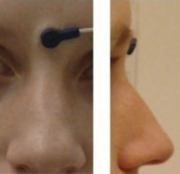
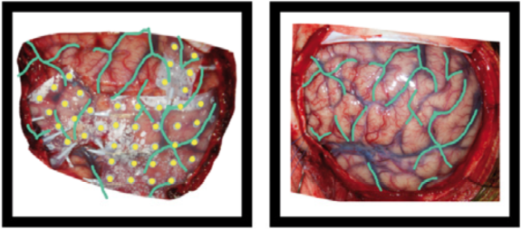
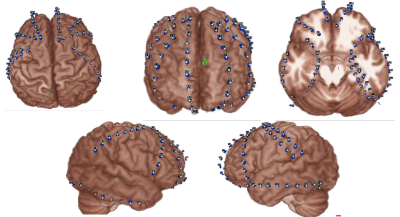
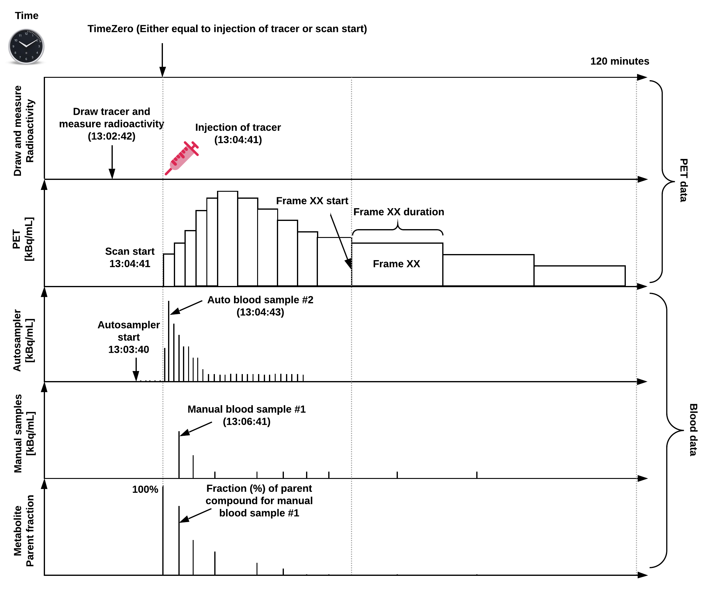
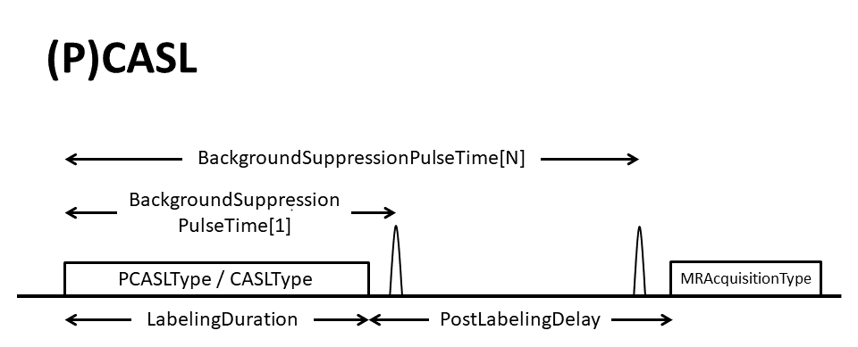
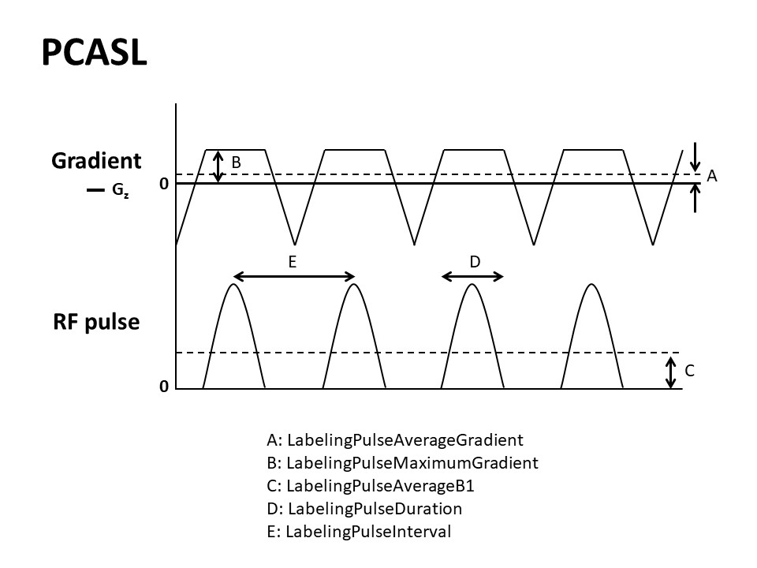
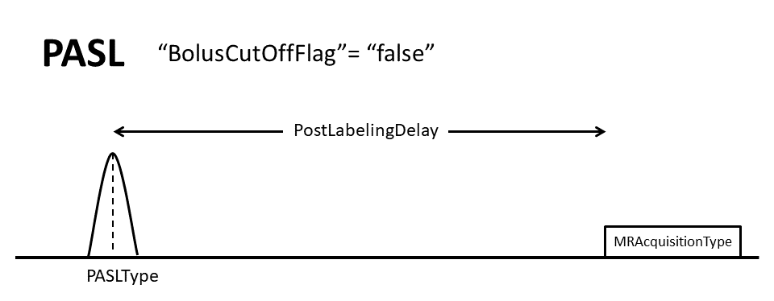
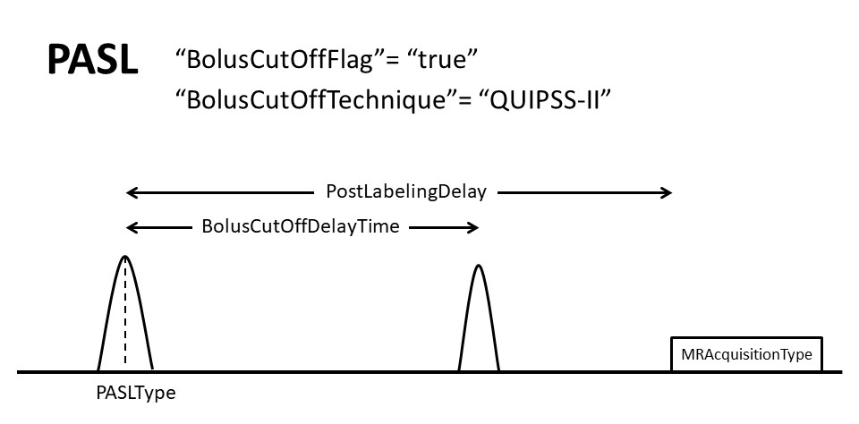
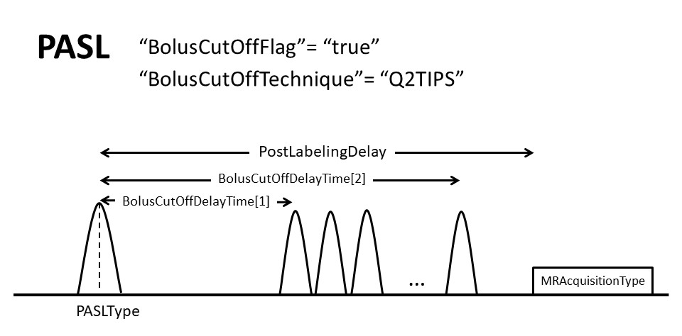
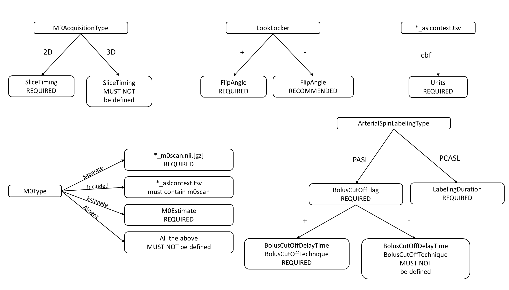

The Brain Imaging Data Structure¶
This resource defines the Brain Imaging Data Structure (BIDS) specification, including the core specification as well as many modality-specific extensions.
To get started, check out the introduction. If you’d like more information on how to adapt your own datasets to match the BIDS specification, we recommend exploring the bids-specification starter kit.
For an overview of the BIDS ecosystem, visit the BIDS homepage. The entire specification can also be downloaded as PDF.
Introduction¶
Motivation¶
Neuroimaging experiments result in complicated data that can be arranged in many different ways. So far there is no consensus how to organize and share data obtained in neuroimaging experiments. Even two researchers working in the same lab can opt to arrange their data in a different way. Lack of consensus (or a standard) leads to misunderstandings and time wasted on rearranging data or rewriting scripts expecting certain structure. Here we describe a simple and easy-to-adopt way of organising neuroimaging and behavioral data. By using this standard you will benefit in the following ways:
It will be easy for another researcher to work on your data. To understand the organisation of the files and their format you will only need to refer them to this document. This is especially important if you are running your own lab and anticipate more than one person working on the same data over time. By using BIDS you will save time trying to understand and reuse data acquired by a graduate student or postdoc that has already left the lab.
There are a growing number of data analysis software packages that can understand data organised according to BIDS (see the up to date list).
Databases such as OpenNeuro.org accept datasets organised according to BIDS. If you ever plan to share your data publicly (nowadays some journals require this) you can minimize the additional time and energy spent on publication, and speed up the curation process by using BIDS to structure and describe your data right after acquisition.
Validation tools such as the BIDS Validator can check your dataset integrity and help you easily spot missing values.
BIDS was heavily inspired by the format used internally by the OpenfMRI repository that is now known as OpenNeuro.org, and has been supported by the International Neuroinformatics Coordinating Facility (INCF) and the INCF Neuroimaging Data Sharing (NIDASH) Task Force. While working on BIDS we consulted many neuroscientists to make sure it covers most common experiments, but at the same time is intuitive and easy to adopt. The specification is intentionally based on simple file formats and folder structures to reflect current lab practices and make it accessible to a wide range of scientists coming from different backgrounds.
Extensions¶
The BIDS specification can be extended in a backwards compatible way and will evolve over time. This is accomplished through community-driven BIDS Extension Proposals (BEPs). For more information about the BEP process, see Extending the BIDS specification.
Citing BIDS¶
When referring to BIDS in context of academic literature, please cite one or more of the publications listed below. We RECOMMEND that you cite the original publication on BIDS and additionally the publication regarding the datatype you were using (for example, EEG, MEG, iEEG, if available).
For example:
The data used in the study were organized using the Brain Imaging Data Structure (Gorgolewski, K., Auer, T., Calhoun, V. et al., 2016) with the extension for EEG data (Pernet, C.R., Appelhoff, S., Gorgolewski, K.J. et al., 2019).
Original publication¶
Gorgolewski, K.J., Auer, T., Calhoun, V.D., Craddock, R.C., Das, S., Duff, E.P., Flandin, G., Ghosh, S.S., Glatard, T., Halchenko, Y.O., Handwerker, D.A., Hanke, M., Keator, D., Li, X., Michael, Z., Maumet, C., Nichols, B.N., Nichols, T.E., Pellman, J., Poline, J.-B., Rokem, A., Schaefer, G., Sochat, V., Triplett, W., Turner, J.A., Varoquaux, G., Poldrack, R.A. (2016). The brain imaging data structure, a format for organizing and describing outputs of neuroimaging experiments. Scientific Data, 3 (160044). doi:10.1038/sdata.2016.44
Datatype specific publications¶
EEG¶
Pernet, C. R., Appelhoff, S., Gorgolewski, K.J., Flandin, G., Phillips, C., Delorme, A., Oostenveld, R. (2019). EEG-BIDS, an extension to the brain imaging data structure for electroencephalography. Scientific data, 6 (103). doi:10.1038/s41597-019-0104-8
iEEG¶
Holdgraf, C., Appelhoff, S., Bickel, S., Bouchard, K., D’Ambrosio, S., David, O., Devinsky, O., Dichter, B., Flinker, A., Foster, B. L., Gorgolewski, K. J., Groen, I., Groppe, D., Gunduz, A., Hamilton, L., Honey, C. J., Jas, M., Knight, R., Lauchaux, J.-P., Lau, J. C., Lee-Messer, C., Lundstrom, B. N., Miller, K. J., Ojemann, J. G., Oostenveld, R., Petridou, N., Piantoni, G., Pigorini, A., Pouratian, N., Ramsey, N. F., Stolk, A., Swann, N. C., Tadel, F., Voytek, B., Wandell, B. A., Winawer, J., Whitaker, K., Zehl, L., Hermes, D. (2019). iEEG-BIDS, extending the Brain Imaging Data Structure specification to human intracranial electrophysiology. Scientific data, 6 (102). doi:10.1038/s41597-019-0105-7
MEG¶
Niso Galan, J.G., Gorgolewski, K.J., Bock, E., Brooks, T.L., Flandin, G., Gramfort, A., Henson, R.N., Jas, M., Litvak, V., Moreau, J., Oostenveld, R., Schoffelen, J.-M., Tadel, F., Wexler, J., Baillet, S. (2018). MEG-BIDS, the brain imaging data structure extended to magnetoencephalography. Scientific Data, 5 (180110). doi:10.1038/sdata.2018.110
PET¶
Knudsen GM, Ganz M, Appelhoff S, Boellaard R, Bormans G, Carson RE, Catana C, Doudet D, Gee AD, Greve DN, Gunn RN, Halldin C, Herscovitch P, Huang H, Keller SH, Lammertsma AA, Lanzenberger R, Liow JS, Lohith TG, Lubberink M, Lyoo CH, Mann JJ, Matheson GJ, Nichols TE, Nørgaard M, Ogden T, Parsey R, Pike VW, Price J, Rizzo G, Rosa-Neto P, Schain M, Scott PJH, Searle G, Slifstein M, Suhara T, Talbot PS, Thomas A, Veronese M, Wong DF, Yaqub M, Zanderigo F, Zoghbi S, Innis RB. (2020). Guidelines for Content and Format of PET Brain Data in Publications and in Archives: A Consensus Paper. Journal of Cerebral Blood Flow and Metabolism, 2020 Aug; 40(8): 1576-1585. doi:10.1177/0271678X20905433
Genetics¶
Clara Moreau, Martineau Jean-Louis, Ross Blair, Christopher Markiewicz, Jessica Turner, Vince Calhoun, Thomas Nichols, Cyril Pernet (2020). The genetics-BIDS extension: Easing the search for genetic data associated with human brain imaging. GigaScience, 9 (10). doi:10.1093/gigascience/giaa104
Research Resource Identifier (RRID)¶
BIDS has also a Research Resource Identifier (RRID), which you can also include in your citations in addition to relevant publications (see above):
Common principles¶
Definitions¶
The keywords “MUST”, “MUST NOT”, “REQUIRED”, “SHALL”, “SHALL NOT”, “SHOULD”, “SHOULD NOT”, “RECOMMENDED”, “MAY”, and “OPTIONAL” in this document are to be interpreted as described in [RFC2119].
Throughout this specification we use a list of terms and abbreviations. To avoid misunderstanding we clarify them here.
Dataset - a set of neuroimaging and behavioral data acquired for a purpose of a particular study. A dataset consists of data acquired from one or more subjects, possibly from multiple sessions.
Subject - a person or animal participating in the study. Used interchangeably with term Participant.
Session - a logical grouping of neuroimaging and behavioral data consistent across subjects. Session can (but doesn’t have to) be synonymous to a visit in a longitudinal study. In general, subjects will stay in the scanner during one session. However, for example, if a subject has to leave the scanner room and then be re-positioned on the scanner bed, the set of MRI acquisitions will still be considered as a session and match sessions acquired in other subjects. Similarly, in situations where different data types are obtained over several visits (for example fMRI on one day followed by DWI the day after) those can be grouped in one session. Defining multiple sessions is appropriate when several identical or similar data acquisitions are planned and performed on all -or most- subjects, often in the case of some intervention between sessions (for example, training). In the PET context, a session may also indicate a group of related scans, taken in one or more visits.
Data acquisition - a continuous uninterrupted block of time during which a brain scanning instrument was acquiring data according to particular scanning sequence/protocol.
Data type - a functional group of different types of data. BIDS defines eight data types:
func(task based and resting state functional MRI),dwi(diffusion weighted imaging),fmap(field inhomogeneity mapping data such as field maps),anat(structural imaging such as T1, T2, PD, and so on),meg(magnetoencephalography),eeg(electroencephalography),ieeg(intracranial electroencephalography),beh(behavioral). Data files are contained in a directory named for the data type. In raw datasets, the data type directory is nested inside subject and (optionally) session directories.Task - a set of structured activities performed by the participant. Tasks are usually accompanied by stimuli and responses, and can greatly vary in complexity. For the purpose of this specification we consider the so-called “resting state” a task. In the context of brain scanning, a task is always tied to one data acquisition. Therefore, even if during one acquisition the subject performed multiple conceptually different behaviors (with different sets of instructions) they will be considered one (combined) task.
Event - something that happens or may be perceived by a test subject as happening at a particular instant during the recording. Events are most commonly associated with on- or offset of stimulus presentations, or with the distinct marker of on- or offset of a subject’s response or motor action. Other events may include unplanned incidents (for example, sudden onset of noise and vibrations due to construction work, laboratory device malfunction), changes in task instructions (for example, switching the response hand), or experiment control parameters (for example, changing the stimulus presentation rate over experimental blocks), and noted data feature occurrences (for example, a recording electrode producing noise). In BIDS, each event has an onset time and duration. Note that not all tasks will have recorded events (for example, “resting state”).
Run - an uninterrupted repetition of data acquisition that has the same acquisition parameters and task (however events can change from run to run due to different subject response or randomized nature of the stimuli). Run is a synonym of a data acquisition. Note that “uninterrupted” may look different by modality due to the nature of the recording. For example, in MRI or [MEG] (04-modality-specific-files/02-magnetoencephalography.md), if a subject leaves the scanner, the acquisition must be restarted. For some types of PET acquisitions, a subject may leave and re-enter the scanner without interrupting the scan.
Modality - the category of brain data recorded by a file. For MRI data, different pulse sequences are considered distinct modalities, such as
T1w,boldordwi. For passive recording techniques, such as EEG, MEG or iEEG, the technique is sufficiently uniform to define the modalitieseeg,megandieeg. When applicable, the modality is indicated in the suffix. The modality may overlap with, but should not be confused with the data type.<index>- a nonnegative integer, possibly prefixed with arbitrary number of 0s for consistent indentation, for example, it is01inrun-01followingrun-<index>specification.<label>- an alphanumeric value, possibly prefixed with arbitrary number of 0s for consistent indentation, for example, it isrestintask-restfollowingtask-<label>specification.suffix- an alphanumeric value, located after thekey-value_pairs (thus after the final_), right before the File extension, for example, it iseeginsub-05_task-matchingpennies_eeg.vhdr.File extension - a portion of the the file name after the left-most period (
.) preceded by any other alphanumeric. For example,.gitignoredoes not have a file extension, but the file extension oftest.nii.gzis.nii.gz. Note that the left-most period is included in the file extension.DEPRECATED - A “deprecated” entity or metadata field SHOULD NOT be used in the generation of new datasets. It remains in the standard in order to preserve the interpretability of existing datasets. Validating software SHOULD warn when deprecated practices are detected and provide a suggestion for updating the dataset to preserve the curator’s intent.
Compulsory, optional, and additional data and metadata¶
The following standard describes a way of arranging data and writing down metadata for a subset of neuroimaging experiments. Some aspects of the standard are compulsory. For example a particular file name format is required when storing structural scans. Some aspects are regulated but optional. For example a T2 volume does not need to be included, but when it is available it should be saved under a particular file name specified in the standard. This standard aspires to describe a majority of datasets, but acknowledges that there will be cases that do not fit. In such cases one can include additional files and subfolders to the existing folder structure following common sense. For example one may want to include eye tracking data in a vendor specific format that is not covered by this standard. The most sensible place to put it is next to the continuous recording file with the same naming scheme but different extensions. The solutions will change from case to case and publicly available datasets will be reviewed to include common data types in the future releases of the BIDS specification.
File name structure¶
A file name consists of a chain of entities, or key-value pairs, a suffix and an
extension.
Two prominent examples of entities are subject and session.
For a data file that was collected in a given session from a given
subject, the file name MUST begin with the string sub-<label>_ses-<label>.
If the session level is omitted in the folder structure, the file name MUST begin
with the string sub-<label>, without ses-<label>.
Note that sub-<label> corresponds to the subject entity because it has
the sub- “key” and<label> “value”, where <label> would in a real data file
correspond to a unique identifier of that subject, such as 01.
The same holds for the session entity with its ses- key and its <label>
value.
A chain of entities, followed by a suffix, connected by underscores (_)
produces a human readable file name, such as sub-01_task-rest_eeg.edf.
It is evident from the file name alone that the file contains resting state
data from subject 01.
The suffix eeg and the extension .edf depend on the imaging modality and
the data format and indicate further details of the file’s contents.
In cases where entities duplicate metadata,
the presence of an entity should not be used as a replacement for
the corresponding metadata field.
For instance, in echo-planar imaging MRI,
the dir-<label> entity MAY be used
to distinguish files with different phase-encoding directions,
but the file’s PhaseEncodingDirection can only be specified as metadata.
A summary of all entities in BIDS and the order in which they MUST be specified is available in the entity table in the appendix.
Entity-linked file collections¶
An entity-linked file collection is a set of files that are related to each other
based on a repetitive acquisition of sequential data
by changing acquisition parameters one (or multiple) at a time
or by being inherent components of the same data.
Entity-linked collections are identified by a common suffix,
indicating the group of files that should be considered a logical unit.
Within each collection, files MUST be distinguished from each other by at least one
entity (for example, echo) that corresponds to an altered acquisition parameter
(EchoTime) or that defines a component relationship (for example, part).
Note that these entities MUST be described by the specification and
the parameter changes they declare MUST NOT invalidate the definition of the accompanying suffix.
For example, the use of the echo entity along with the T1w suffix casts doubt on
the validity of the identified contrast weighting.
Provided the conditions above are satisfied,
any suffix (such as bold) can identify an entity-linked file collection,
although certain suffixes are exclusive for this purpose (for example, MP2RAGE).
Use cases concerning this convention are compiled in the
file collections appendix.
This convention is mainly intended for but not limited to MRI modalities.
Source vs. raw vs. derived data¶
BIDS was originally designed to describe and apply consistent naming conventions to raw (unprocessed or minimally processed due to file format conversion) data. During analysis such data will be transformed and partial as well as final results will be saved. Derivatives of the raw data (other than products of DICOM to NIfTI conversion) MUST be kept separate from the raw data. This way one can protect the raw data from accidental changes by file permissions. In addition it is easy to distinguish partial results from the raw data and share the latter. See Storage of derived datasets for more on organizing derivatives.
Similar rules apply to source data, which is defined as data before harmonization, reconstruction, and/or file format conversion (for example, E-Prime event logs or DICOM files). Storing actual source files with the data is preferred over links to external source repositories to maximize long term preservation, which would suffer if an external repository would not be available anymore. This specification currently does not go into the details of recommending a particular naming scheme for including different types of source data (such as the raw event logs or parameter files, before conversion to BIDS). However, in the case that these data are to be included:
These data MUST be kept in separate
sourcedatafolder with a similar folder structure as presented below for the BIDS-managed data. For example:sourcedata/sub-01/ses-pre/func/sub-01_ses-pre_task-rest_bold.dicom.tgzorsourcedata/sub-01/ses-pre/func/MyEvent.sce.A README file SHOULD be found at the root of the
sourcedatafolder or thederivativesfolder, or both. This file should describe the nature of the raw data or the derived data. We RECOMMEND including the PDF print-out with the actual sequence parameters generated by the scanner in thesourcedatafolder.
Alternatively one can organize their data in the following way
my_dataset/
sourcedata/
...
rawdata/
dataset_description.json
participants.tsv
sub-01/
sub-02/
...
derivatives/
pipeline_1/
pipeline_2/
...
In this example, where sourcedata and derivatives are not nested inside
rawdata, only the rawdata subfolder needs to be a BIDS-compliant
dataset.
The subfolders of derivatives MAY be BIDS-compliant derivatives datasets
(see Non-compliant derivatives for further discussion).
This specification does not prescribe anything about the contents of sourcedata
folders in the above example - nor does it prescribe the sourcedata,
derivatives, or rawdata folder names.
The above example is just a convention that can be useful for organizing raw,
source, and derived data while maintaining BIDS compliance of the raw data
folder. When using this convention it is RECOMMENDED to set the SourceDatasets
field in dataset_description.json of each subfolder of derivatives to:
{
"SourceDatasets": [ {"URL": "file://../../rawdata/"} ]
}
Storage of derived datasets¶
Derivatives can be stored/distributed in two ways:
Under a
derivatives/subfolder in the root of the source BIDS dataset folder to make a clear distinction between raw data and results of data processing. A data processing pipeline will typically have a dedicated directory under which it stores all of its outputs. Different components of a pipeline can, however, also be stored under different subfolders. There are few restrictions on the directory names; it is RECOMMENDED to use the format<pipeline>-<variant>in cases where it is anticipated that the same pipeline will output more than one variant (for example,AFNI-blurringandAFNI-noblurring). For the sake of consistency, the subfolder name SHOULD be theGeneratedBy.Namefield indata_description.json, optionally followed by a hyphen and a suffix (see Derived dataset and pipeline description).Example of derivatives with one directory per pipeline:
<dataset>/derivatives/fmriprep-v1.4.1/sub-0001 <dataset>/derivatives/spm/sub-0001 <dataset>/derivatives/vbm/sub-0001
Example of a pipeline with split derivative directories:
<dataset>/derivatives/spm-preproc/sub-0001 <dataset>/derivatives/spm-stats/sub-0001
Example of a pipeline with nested derivative directories:
<dataset>/derivatives/spm-preproc/sub-0001 <dataset>/derivatives/spm-preproc/derivatives/spm-stats/sub-0001
As a standalone dataset independent of the source (raw or derived) BIDS dataset. This way of specifying derivatives is particularly useful when the source dataset is provided with read-only access, for publishing derivatives as independent bodies of work, or for describing derivatives that were created from more than one source dataset. The
sourcedata/subdirectory MAY be used to include the source dataset(s) that were used to generate the derivatives. Likewise, any code used to generate the derivatives from the source data MAY be included in thecode/subdirectory.Example of a derivative dataset including the raw dataset as source:
my_processed_data/ code/ processing_pipeline-1.0.0.img hpc_submitter.sh ... sourcedata/ dataset_description.json participants.tsv sub-01/ sub-02/ ... dataset_description.json sub-01/ sub-02/ ...
Throughout this specification, if a section applies particularly to derivatives,
then Case 1 will be assumed for clarity in templates and examples, but removing
/derivatives/<pipeline> from the template name will provide the equivalent for
Case 2.
In both cases, every derivatives dataset is considered a BIDS dataset and must
include a dataset_description.json file at the root level (see
Dataset description.
Consequently, files should be organized to comply with BIDS to the full extent
possible (that is, unless explicitly contradicted for derivatives).
Any subject-specific derivatives should be housed within each subject’s directory;
if session-specific derivatives are generated, they should be deposited under a
session subdirectory within the corresponding subject directory; and so on.
Non-compliant derivatives¶
Nothing in this specification should be interpreted to disallow the
storage/distribution of non-compliant derivatives of BIDS datasets.
In particular, if a BIDS dataset contains a derivatives/ sub-directory,
the contents of that directory may be a heterogeneous mix of BIDS Derivatives
datasets and non-compliant derivatives.
The Inheritance Principle¶
Any metadata file (such as .json, .bvec or .tsv) may be defined at any
directory level, but no more than one applicable file may be defined at a given
level (Example 1). The values from the top level are inherited by all lower
levels unless they are overridden by a file at the lower level. For example,
sub-*_task-rest_bold.json may be specified at the participant level, setting
TR to a specific value. If one of the runs has a different TR than the one
specified in that file, another sub-*_task-rest_bold.json file can be placed
within that specific series directory specifying the TR for that specific run.
There is no notion of “unsetting” a key/value pair.
Once a key/value pair is set in a given level in the dataset, lower down in
the hierarchy that key/value pair will always have some assigned value.
Files for a particular participant can exist only at participant level directory,
that is, /dataset/sub-*[/ses-*]/sub-*_T1w.json. Similarly, any file that is not
specific to a participant is to be declared only at top level of dataset for example:
task-sist_bold.json must be placed under /dataset/task-sist_bold.json
Example 1: Two JSON files that are erroneously at the same level
sub-01/
ses-test/
sub-01_ses-test_task-overtverbgeneration_bold.json
sub-01_ses-test_task-overtverbgeneration_run-2_bold.json
anat/
sub-01_ses-test_T1w.nii.gz
func/
sub-01_ses-test_task-overtverbgeneration_run-1_bold.nii.gz
sub-01_ses-test_task-overtverbgeneration_run-2_bold.nii.gz
In the above example, two JSON files are listed under sub-01/ses-test/, which
are each applicable to
sub-01_ses-test_task-overtverbgeneration_run-2_bold.nii.gz, violating the
constraint that no more than one file may be defined at a given level of the
directory structure. Instead sub-01_ses-test_task-overtverbgeneration_run-2_bold.json
should have been under sub-01/ses-test/func/.
Example 2: Multiple runs and recs with same acquisition (acq) parameters
sub-01/
anat/
func/
sub-01_task-xyz_acq-test1_run-1_bold.nii.gz
sub-01_task-xyz_acq-test1_run-2_bold.nii.gz
sub-01_task-xyz_acq-test1_rec-recon1_bold.nii.gz
sub-01_task-xyz_acq-test1_rec-recon2_bold.nii.gz
sub-01_task-xyz_acq-test1_bold.json
For the above example, all NIfTI files are acquired with same scanning
parameters (acq-test1). Hence a JSON file describing the acq parameters will
apply to different runs and rec files. Also if the JSON file
(task-xyz_acq-test1_bold.json) is defined at dataset top level directory, it
will be applicable to all task runs with test1 acquisition parameter.
Example 3: Multiple JSON files at different levels for same task and acquisition parameters
task-xyz_acq-test1_bold.json
sub-01/
anat/
func/
sub-01_task-xyz_acq-test1_run-1_bold.nii.gz
sub-01_task-xyz_acq-test1_rec-recon1_bold.nii.gz
sub-01_task-xyz_acq-test1_rec-recon2_bold.nii.gz
sub-01_task-xyz_acq-test1_bold.json
In the above example, the fields from the task-xyz_acq-test1_bold.json file
at the top directory will apply to all bold runs. However, if there is a key
with different value in the
sub-01/func/sub-01_task-xyz_acq-test1_bold.json file defined at a
deeper level, that value will be applicable for that particular run/task NIfTI
file/s. In other words, the .json file at the deeper level overrides values
that are potentially also defined in the .json at a more shallow level. If the
.json file at the more shallow level contains key-value-pairs that are not
present in the .json file at the deeper level, these key-value-pairs are
inherited by the .json file at the deeper level (but NOT vice versa!).
Good practice recommendations¶
Try to avoid excessive amount of overrides. Do not specify a field
value in the upper levels if lower levels have more or less even
distribution of multiple possible values. For example, if a field X has one
value for all ses-01/ and another for all ses-02/ it better not to be
defined at all in the .json at the upper level.
File Formation specification¶
Imaging files¶
All imaging data MUST be stored using the NIfTI file format. We RECOMMEND using
compressed NIfTI files (.nii.gz), either version 1.0 or 2.0. Imaging data SHOULD
be converted to the NIfTI format using a tool that provides as much of the NIfTI
header information (such as orientation and slice timing information) as
possible. Since the NIfTI standard offers limited support for the various image
acquisition parameters available in DICOM files, we RECOMMEND that users provide
additional meta information extracted from DICOM files in a sidecar JSON file
(with the same filename as the .nii[.gz] file, but with a .json extension).
Extraction of BIDS compatible metadata can be performed using dcm2niix
and dicm2nii
DICOM to NIfTI converters. The BIDS-validator
will check for conflicts between the JSON file and the data recorded in the
NIfTI header.
Tabular files¶
Tabular data MUST be saved as tab delimited values (.tsv) files, that is, CSV
files where commas are replaced by tabs. Tabs MUST be true tab characters and
MUST NOT be a series of space characters. Each TSV file MUST start with a header
line listing the names of all columns (with the exception of
physiological and other continuous recordings).
Names MUST be separated with tabs.
It is RECOMMENDED that the column names in the header of the TSV file are
written in snake_case with the
first letter in lower case (for example, variable_name, not Variable_name).
String values containing tabs MUST be escaped using double
quotes. Missing and non-applicable values MUST be coded as n/a. Numerical
values MUST employ the dot (.) as decimal separator and MAY be specified
in scientific notation, using e or E to separate the significand from the
exponent. TSV files MUST be in UTF-8 encoding.
Example:
onset duration response_time correct stop_trial go_trial
200 200 0 n/a n/a n/a
Note: The TSV examples in this document (like the one above this note) are occasionally formatted using space characters instead of tabs to improve human readability. Directly copying and then pasting these examples from the specification for use in new BIDS datasets can lead to errors and is discouraged.
Tabular files MAY be optionally accompanied by a simple data dictionary
in the form of a JSON object
within a JSON file.
The JSON files containing the data dictionaries MUST have the same name as
their corresponding tabular files but with .json extensions.
If a data dictionary is provided,
it MAY contain one or more fields describing the columns found in the TSV file
(in addition to any other metadata one wishes to include that describe the file as a whole).
Note that if a field name included in the data dictionary matches a column name in the TSV file,
then that field MUST contain a description of the corresponding column,
using an object containing the following fields:
Key name |
Requirement level |
Data type |
Description |
|---|---|---|---|
LongName |
OPTIONAL |
Long (unabbreviated) name of the column. |
|
Description |
RECOMMENDED |
Description of the column. |
|
Levels |
RECOMMENDED |
For categorical variables: An object of possible values (keys) and their descriptions (values). |
|
Units |
RECOMMENDED |
Measurement units. SI units in CMIXF formatting are RECOMMENDED (see Units). |
|
TermURL |
RECOMMENDED |
URL pointing to a formal definition of this type of data in an ontology available on the web. |
Please note that while both Units and Levels are RECOMMENDED, typically only one
of these two fields would be specified for describing a single TSV file column.
Example:
{
"test": {
"LongName": "Education level",
"Description": "Education level, self-rated by participant",
"Levels": {
"1": "Finished primary school",
"2": "Finished secondary school",
"3": "Student at university",
"4": "Has degree from university"
}
},
"bmi": {
"LongName": "Body mass index",
"Units": "kg/m^2",
"TermURL": "https://purl.bioontology.org/ontology/SNOMEDCT/60621009"
}
}
Key/value files (dictionaries)¶
JavaScript Object Notation (JSON) files MUST be used for storing key/value
pairs. JSON files MUST be in UTF-8 encoding. Extensive documentation of the
format can be found at https://www.json.org/.
Several editors have built-in support for JSON syntax highlighting that aids
manual creation of such files.
An online editor for JSON with built-in validation is available at
https://jsoneditoronline.org.
It is RECOMMENDED that keys in a JSON file are written in CamelCase
with the first letter in upper case (for example, SamplingFrequency, not
samplingFrequency). Note however, when a JSON file is used as an accompanying
sidecar file for a TSV file, the keys linking a TSV column
with their description in the JSON file need to follow the exact formatting
as in the TSV file.
Example of a hypothetical *_bold.json file, accompanying a *_bold.nii file:
{
"RepetitionTime": 3,
"Instruction": "Lie still and keep your eyes open"
}
Example of a hypothetical *_events.json file, accompanying an
*_events.tsv file. Note that the JSON file contains a key describing an
arbitrary column stim_presentation_side in the TSV file it accompanies.
See task events section
for more information.
{
"stim_presentation_side": {
"Levels": {
"1": "stimulus presented on LEFT side",
"2": "stimulus presented on RIGHT side"
}
}
}
Participant names and other labels¶
BIDS allows for custom user-defined <label>s and <index>es for example,
for naming of participants, sessions, acquisition schemes.
Note that they MUST consist only of allowed characters as described in
Definitions above.
In <index>es we RECOMMEND using zero padding (for example, 01 instead of 1
if you have more than nine subjects) to make alphabetical sorting more intuitive.
Note that zero padding SHOULD NOT be used to merely maintain uniqueness
of <index>es.
Please note that a given label or index is distinct from the “prefix”
it refers to. For example sub-01 refers to the sub entity (a
subject) with the label 01. The sub- prefix is not part of the subject
label, but must be included in file names (similarly to other key names).
Uniform Resource Indicator¶
A Uniform Resource Indicator (URI) is a string referring to a resource and SHOULD
have the form <scheme>:[//<authority>]<path>[?<query>][#<fragment>], as specified
in RFC 3986.
This applies to URLs and other common URIs, including Digital Object Identifiers (DOIs),
which may be fully specified as doi:<path>,
for example, doi:10.5281/zenodo.3686061.
A given resource may have multiple URIs.
When selecting URIs to add to dataset metadata, it is important to consider
specificity and persistence.
Several fields are designated for DOIs, for example, DatasetDOI in dataset_description.json.
DOI values SHOULD be fully specified URIs such as doi:10.18112/openneuro.ds000001.v1.0.0.
Bare DOIs such as 10.18112/openneuro.ds000001.v1.0.0 are DEPRECATED.
Units¶
All units SHOULD be specified as per International System of Units
(abbreviated as SI, from the French Système international (d’unités)) and can
be SI units or SI derived units.
In case there are valid reasons to deviate from SI units or SI derived units,
the units MUST be specified in the sidecar JSON file.
In case data is expressed in SI units or SI derived units, the units MAY be
specified in the sidecar JSON file.
In case non-standard prefixes are added to SI or non-SI units, these
non-standard prefixed units MUST be specified in the JSON file.
See Appendix V for a list of standard units and
prefixes.
Note also that for the formatting of SI units, the CMIXF-12
convention for encoding units is RECOMMENDED.
CMIXF provides a consistent system for all units and prefix symbols with only basic
characters, avoiding symbols that can cause text encoding problems; for example the
CMIXF formatting for “micro volts” is uV, “degrees Celsius” is oC and “Ohm” is Ohm.
See Appendix V for more information.
For additional rules, see below:
Elapsed time SHOULD be expressed in seconds. Please note that some DICOM parameters have been traditionally expressed in milliseconds. Those need to be converted to seconds.
Frequency SHOULD be expressed in Hertz.
Arbitrary units SHOULD be indicated with the string
"arbitrary".
Describing dates and timestamps:
Date time information MUST be expressed in the following format
YYYY-MM-DDThh:mm:ss[.000000][Z](year, month, day, hour (24h), minute, second, optional fractional seconds, and optional UTC time indicator). This is almost equivalent to the RFC3339 “date-time” format, with the exception that UTC indicatorZis optional and non-zero UTC offsets are not indicated. IfZis not indicated, time zone is always assumed to be the local time of the dataset viewer. No specific precision is required for fractional seconds, but the precision SHOULD be consistent across the dataset. For example2009-06-15T13:45:30.Time stamp information MUST be expressed in the following format:
hh:mm:ss[.000000]For example13:45:30.Note that, depending on local ethics board policy, date time information may not need to be fully detailed. For example, it is permissible to set the time to
00:00:00if reporting the exact recording time is undesirable. However, for privacy protection reasons, it is RECOMMENDED to shift dates, as described below, without completely removing time information, as time information can be useful for research purposes.Dates can be shifted by a random number of days for privacy protection reasons. To distinguish real dates from shifted dates, always use year 1925 or earlier when including shifted years. For longitudinal studies dates MUST be shifted by the same number of days within each subject to maintain the interval information. For example:
1867-06-15T13:45:30WARNING: The Neuromag/Elekta/MEGIN file format for MEG (
.fif) does not support recording dates earlier than1902roughly. Some analysis software packages (for example, MNE-Python) handle their data as.fifinternally and will break if recording dates are specified prior to1902, even if the original data format is not.fif. See MEG-file-formats for more information.Age SHOULD be given as the number of years since birth at the time of scanning (or first scan in case of multi session datasets). Using higher accuracy (weeks) should in general be avoided due to privacy protection, unless when appropriate given the study goals, for example, when scanning babies.
Directory structure¶
Single session example¶
This is an example of the folder and file structure. Because there is only one session, the session level is not required by the format. For details on individual files see descriptions in the next section:
sub-control01/
anat/
sub-control01_T1w.nii.gz
sub-control01_T1w.json
sub-control01_T2w.nii.gz
sub-control01_T2w.json
func/
sub-control01_task-nback_bold.nii.gz
sub-control01_task-nback_bold.json
sub-control01_task-nback_events.tsv
sub-control01_task-nback_physio.tsv.gz
sub-control01_task-nback_physio.json
sub-control01_task-nback_sbref.nii.gz
dwi/
sub-control01_dwi.nii.gz
sub-control01_dwi.bval
sub-control01_dwi.bvec
fmap/
sub-control01_phasediff.nii.gz
sub-control01_phasediff.json
sub-control01_magnitude1.nii.gz
sub-control01_scans.tsv
code/
deface.py
derivatives/
README
participants.tsv
dataset_description.json
CHANGES
Unspecified data¶
Additional files and folders containing raw data MAY be added as needed for
special cases.
All non-standard file entities SHOULD conform to BIDS-style naming conventions, including
alphabetic entities and suffixes and alphanumeric labels/indices.
Non-standard suffixes SHOULD reflect the nature of the data, and existing
entities SHOULD be used when appropriate.
For example, an ASSET calibration scan might be named
sub-01_acq-ASSET_calibration.nii.gz.
Non-standard files and directories should be named with care. Future BIDS efforts may standardize new entities and suffixes, changing the meaning of file names and setting requirements on their contents or metadata. Validation and parsing tools MAY treat the presence of non-standard files and directories as an error, so consult the details of these tools for mechanisms to suppress warnings or provide interpretations of your file names.
Modality agnostic files¶
Dataset description¶
Templates:
dataset_description.jsonREADMECHANGESLICENSE
dataset_description.json¶
The file dataset_description.json is a JSON file describing the dataset.
Every dataset MUST include this file with the following fields:
Key name |
Requirement level |
Data type |
Description |
|---|---|---|---|
Name |
REQUIRED |
Name of the dataset. |
|
BIDSVersion |
REQUIRED |
The version of the BIDS standard that was used. |
|
HEDVersion |
RECOMMENDED |
If HED tags are used: The version of the HED schema used to validate HED tags for study. |
|
DatasetType |
RECOMMENDED |
The interpretation of the dataset. MUST be one of |
|
License |
RECOMMENDED |
The license for the dataset. The use of license name abbreviations is RECOMMENDED for specifying a license (see Appendix II). The corresponding full license text MAY be specified in an additional |
|
Authors |
OPTIONAL |
List of individuals who contributed to the creation/curation of the dataset. |
|
Acknowledgements |
OPTIONAL |
Text acknowledging contributions of individuals or institutions beyond those listed in Authors or Funding. |
|
HowToAcknowledge |
OPTIONAL |
Text containing instructions on how researchers using this dataset should acknowledge the original authors. This field can also be used to define a publication that should be cited in publications that use the dataset. |
|
Funding |
OPTIONAL |
List of sources of funding (grant numbers). |
|
EthicsApprovals |
OPTIONAL |
List of ethics committee approvals of the research protocols and/or protocol identifiers. |
|
ReferencesAndLinks |
OPTIONAL |
List of references to publications that contain information on the dataset. A reference may be textual or a URI. |
|
DatasetDOI |
OPTIONAL |
The Digital Object Identifier of the dataset (not the corresponding paper). DOIs SHOULD be expressed as a valid URI; bare DOIs such as |
Example:
{
"Name": "The mother of all experiments",
"BIDSVersion": "1.4.0",
"DatasetType": "raw",
"License": "CC0",
"Authors": [
"Paul Broca",
"Carl Wernicke"
],
"Acknowledgements": "Special thanks to Korbinian Brodmann for help in formatting this dataset in BIDS. We thank Alan Lloyd Hodgkin and Andrew Huxley for helpful comments and discussions about the experiment and manuscript; Hermann Ludwig Helmholtz for administrative support; and Claudius Galenus for providing data for the medial-to-lateral index analysis.",
"HowToAcknowledge": "Please cite this paper: https://www.ncbi.nlm.nih.gov/pubmed/001012092119281",
"Funding": [
"National Institute of Neuroscience Grant F378236MFH1",
"National Institute of Neuroscience Grant 5RMZ0023106"
],
"EthicsApprovals": [
"Army Human Research Protections Office (Protocol ARL-20098-10051, ARL 12-040, and ARL 12-041)"
],
"ReferencesAndLinks": [
"https://www.ncbi.nlm.nih.gov/pubmed/001012092119281",
"Alzheimer A., & Kraepelin, E. (2015). Neural correlates of presenile dementia in humans. Journal of Neuroscientific Data, 2, 234001. doi:1920.8/jndata.2015.7"
],
"DatasetDOI": "doi:10.0.2.3/dfjj.10",
"HEDVersion": "7.1.1"
}
Derived dataset and pipeline description¶
As for any BIDS dataset, a dataset_description.json file MUST be found at the
top level of the a derived dataset:
<dataset>/derivatives/<pipeline_name>/dataset_description.json
In addition to the keys for raw BIDS datasets,
derived BIDS datasets include the following REQUIRED and RECOMMENDED
dataset_description.json keys:
Key name |
Requirement level |
Data type |
Description |
|---|---|---|---|
GeneratedBy |
REQUIRED |
Used to specify provenance of the derived dataset. See table below for contents of each object. |
|
SourceDatasets |
RECOMMENDED |
Used to specify the locations and relevant attributes of all source datasets. Valid keys in each object include |
Each object in the GeneratedBy list includes the following REQUIRED, RECOMMENDED
and OPTIONAL keys:
Key name |
Requirement level |
Data type |
Description |
|---|---|---|---|
Name |
REQUIRED |
Name of the pipeline or process that generated the outputs. Use |
|
Version |
RECOMMENDED |
Version of the pipeline. |
|
Description |
OPTIONAL |
Plain-text description of the pipeline or process that generated the outputs. RECOMMENDED if |
|
CodeURL |
OPTIONAL |
URL where the code used to generate the derivatives may be found. |
|
Container |
OPTIONAL |
Used to specify the location and relevant attributes of software container image used to produce the derivative. Valid keys in this object include |
Example:
{
"Name": "FMRIPREP Outputs",
"BIDSVersion": "1.4.0",
"DatasetType": "derivative",
"GeneratedBy": [
{
"Name": "fmriprep",
"Version": "1.4.1",
"Container": {
"Type": "docker",
"Tag": "poldracklab/fmriprep:1.4.1"
}
},
{
"Name": "Manual",
"Description": "Re-added RepetitionTime metadata to bold.json files"
}
],
"SourceDatasets": [
{
"DOI": "doi:10.18112/openneuro.ds000114.v1.0.1",
"URL": "https://openneuro.org/datasets/ds000114/versions/1.0.1",
"Version": "1.0.1"
}
]
}
If a derived dataset is stored as a subfolder of the raw dataset, then the Name field
of the first GeneratedBy object MUST be a substring of the derived dataset folder name.
That is, in a directory <dataset>/derivatives/<pipeline>[-<variant>]/, the first
GeneratedBy object should have a Name of <pipeline>.
README¶
In addition a free form text file (README) describing the dataset in more
details SHOULD be provided.
The README file MUST be either in ASCII or UTF-8 encoding.
CHANGES¶
Version history of the dataset (describing changes, updates and corrections) MAY
be provided in the form of a CHANGES text file. This file MUST follow the
CPAN Changelog convention.
The CHANGES file MUST be either in ASCII or UTF-8 encoding.
Example:
1.0.1 2015-08-27
- Fixed slice timing information.
1.0.0 2015-08-17
- Initial release.
LICENSE¶
A LICENSE file MAY be provided in addition to the short specification of the
used license in the dataset_description.json "License" field.
The "License" field and LICENSE file MUST correspond.
The LICENSE file MUST be either in ASCII or UTF-8 encoding.
Participants file¶
Template:
participants.tsv
participants.json
The purpose of this RECOMMENDED file is to describe properties of participants
such as age, sex, handedness.
If this file exists, it MUST contain the column participant_id,
which MUST consist of sub-<label> values identifying one row for each participant,
followed by a list of optional columns describing participants.
Each participant MUST be described by one and only one row.
Commonly used optional columns in participant.tsv files are age, sex,
and handedness. We RECOMMEND to make use of these columns, and
in case that you do use them, we RECOMMEND to use the following values
for them:
age: numeric value in years (float or integer value)sex: string value indicating phenotypical sex, one of “male”, “female”, “other”for “male”, use one of these values:
male,m,M,MALE,Malefor “female”, use one of these values:
female,f,F,FEMALE,Femalefor “other”, use one of these values:
other,o,O,OTHER,Other
handedness: string value indicating one of “left”, “right”, “ambidextrous”for “left”, use one of these values:
left,l,L,LEFT,Leftfor “right”, use one of these values:
right,r,R,RIGHT,Rightfor “ambidextrous”, use one of these values:
ambidextrous,a,A,AMBIDEXTROUS,Ambidextrous
Throughout BIDS you can indicate missing values with n/a (for “not
available”).
participants.tsv example:
participant_id age sex handedness group
sub-01 34 M right read
sub-02 12 F right write
sub-03 33 F n/a read
It is RECOMMENDED to accompany each participants.tsv file with a sidecar
participants.json file to describe the TSV column names and properties of their values (see also
the section on tabular files).
Such sidecar files are needed to interpret the data, especially so when
optional columns are defined beyond age, sex, and handedness, such as
group in this example, or when a different age unit is needed
(for example, gestational weeks).
If no units is provided for age, it will be assumed to be in years relative
to date of birth.
participants.json example:
{
"age": {
"Description": "age of the participant",
"Units": "years"
},
"sex": {
"Description": "sex of the participant as reported by the participant",
"Levels": {
"M": "male",
"F": "female"
}
},
"handedness": {
"Description": "handedness of the participant as reported by the participant",
"Levels": {
"left": "left",
"right": "right"
}
},
"group": {
"Description": "experimental group the participant belonged to",
"Levels": {
"read": "participants who read an inspirational text before the experiment",
"write": "participants who wrote an inspirational text before the experiment"
}
}
}
Phenotypic and assessment data¶
Template:
phenotype/<measurement_tool_name>.tsv
phenotype/<measurement_tool_name>.json
Optional: Yes
If the dataset includes multiple sets of participant level measurements (for
example responses from multiple questionnaires) they can be split into
individual files separate from participants.tsv.
Each of the measurement files MUST be kept in a /phenotype directory placed
at the root of the BIDS dataset and MUST end with the .tsv extension.
File names SHOULD be chosen to reflect the contents of the file.
For example, the “Adult ADHD Clinical Diagnostic Scale” could be saved in a file
called /phenotype/acds_adult.tsv.
The files can include an arbitrary set of columns, but one of them MUST be
participant_id and the entries of that column MUST correspond to the subjects
in the BIDS dataset and participants.tsv file.
As with all other tabular data, the additional phenotypic information files
MAY be accompanied by a JSON file describing the columns in detail
(see Tabular files).
In addition to the column description, a section describing the measurement tool
(as a whole) MAY be added under the name MeasurementToolMetadata.
This section consists of two keys:
Description: A free text description of the measurement toolTermURL: A URL to an entity in an ontology corresponding to this tool.
As an example, consider the contents of a file called
phenotype/acds_adult.json:
{
"MeasurementToolMetadata": {
"Description": "Adult ADHD Clinical Diagnostic Scale V1.2",
"TermURL": "https://www.cognitiveatlas.org/task/id/trm_5586ff878155d"
},
"adhd_b": {
"Description": "B. CHILDHOOD ONSET OF ADHD (PRIOR TO AGE 7)",
"Levels": {
"1": "YES",
"2": "NO"
}
},
"adhd_c_dx": {
"Description": "As child met A, B, C, D, E and F diagnostic criteria",
"Levels": {
"1": "YES",
"2": "NO"
}
}
}
Please note that in this example MeasurementToolMetadata includes information
about the questionnaire and adhd_b and adhd_c_dx correspond to individual
columns.
In addition to the keys available to describe columns in all tabular files
(LongName, Description, Levels, Units, and TermURL) the
participants.json file as well as phenotypic files can also include column
descriptions with a Derivative field that, when set to true, indicates that
values in the corresponding column is a transformation of values from other
columns (for example a summary score based on a subset of items in a
questionnaire).
Scans file¶
Template:
sub-<label>/[ses-<label>/]
sub-<label>[_ses-<label>]_scans.tsv
sub-<label>[_ses-<label>]_scans.json
Optional: Yes
The purpose of this file is to describe timing and other properties of each imaging acquisition sequence (each run file) within one session.
Each neural recording file SHOULD be described by exactly one row.
Some recordings consist of multiple parts, that span several files,
for example through echo-, part-, or split- entities.
Such recordings MUST be documented with one row per file.
Relative paths to files should be used under a compulsory filename header.
If acquisition time is included it should be listed under the acq_time header.
Acquisition time refers to when the first data point in each run was acquired.
Furthermore, if this header is provided, the acquisition times of all files that
belong to a recording MUST be identical.
Datetime should be expressed as described in Units.
For anonymization purposes all dates within one subject should be shifted by a randomly chosen (but consistent across all recordings) number of days. This way relative timing would be preserved, but chances of identifying a person based on the date and time of their scan would be decreased. Dates that are shifted for anonymization purposes SHOULD be set to the year 1925 or earlier to clearly distinguish them from unmodified data. Shifting dates is RECOMMENDED, but not required.
Additional fields can include external behavioral measures relevant to the
scan.
For example vigilance questionnaire score administered after a resting
state scan.
All such included additional fields SHOULD be documented in an accompanying
_scans.json file that describes these fields in detail
(see Tabular files).
Example _scans.tsv:
filename acq_time
func/sub-control01_task-nback_bold.nii.gz 1877-06-15T13:45:30
func/sub-control01_task-motor_bold.nii.gz 1877-06-15T13:55:33
meg/sub-control01_task-rest_split-01_meg.nii.gz 1877-06-15T12:15:27
meg/sub-control01_task-rest_split-02_meg.nii.gz 1877-06-15T12:15:27
Code¶
Template: code/*
Source code of scripts that were used to prepare the dataset MAY be stored here. Examples include anonymization or defacing of the data, or the conversion from the format of the source data to the BIDS format (see source vs. raw vs. derived data). Extra care should be taken to avoid including original IDs or any identifiable information with the source code. There are no limitations or recommendations on the language and/or code organization of these scripts at the moment.
Magnetic Resonance Imaging¶
Common metadata fields¶
MR Data described in the following sections share the following RECOMMENDED metadata fields (stored in sidecar JSON files). MRI acquisition parameters are divided into several categories based on “A checklist for fMRI acquisition methods reporting in the literature” by Ben Inglis:
Scanner Hardware¶
Key name |
Requirement level |
Data type |
Description |
|---|---|---|---|
Manufacturer |
RECOMMENDED |
Manufacturer of the equipment that produced the composite instances. Corresponds to DICOM Tag 0008, 0070 |
|
ManufacturersModelName |
RECOMMENDED |
Manufacturer’s model name of the equipment that produced the composite instances. Corresponds to DICOM Tag 0008, 1090 |
|
DeviceSerialNumber |
RECOMMENDED |
The serial number of the equipment that produced the composite instances. Corresponds to DICOM Tag 0018, 1000 |
|
StationName |
RECOMMENDED |
Institution defined name of the machine that produced the composite instances. Corresponds to DICOM Tag 0008, 1010 |
|
SoftwareVersions |
RECOMMENDED |
Manufacturer’s designation of software version of the equipment that produced the composite instances. Corresponds to DICOM Tag 0018, 1020 |
|
HardcopyDeviceSoftwareVersion |
Manufacturer’s designation of the software of the device that created this Hardcopy Image (the printer). Corresponds to DICOM Tag 0018, 101A |
||
MagneticFieldStrength |
RECOMMENDED, but REQUIRED for Arterial Spin Labeling |
Nominal field strength of MR magnet in Tesla. Corresponds to DICOM Tag 0018,0087 |
|
ReceiveCoilName |
RECOMMENDED |
Information describing the receiver coil. Corresponds to DICOM Tag 0018, 1250 |
|
ReceiveCoilActiveElements |
RECOMMENDED |
Information describing the active/selected elements of the receiver coil. This doesn’t correspond to a tag in the DICOM ontology. The vendor-defined terminology for active coil elements can go in this field. See an example below the table. |
|
GradientSetType |
RECOMMENDED |
It should be possible to infer the gradient coil from the scanner model. If not, for example because of a custom upgrade or use of a gradient insert set, then the specifications of the actual gradient coil should be reported independently |
|
MRTransmitCoilSequence |
RECOMMENDED |
This is a relevant field if a non-standard transmit coil is used. Corresponds to DICOM Tag 0018, 9049 |
|
MatrixCoilMode |
RECOMMENDED |
(If used) A method for reducing the number of independent channels by combining in analog the signals from multiple coil elements. There are typically different default modes when using un-accelerated or accelerated (for example, |
|
CoilCombinationMethod |
RECOMMENDED |
Almost all fMRI studies using phased-array coils use root-sum-of-squares (rSOS) combination, but other methods exist. The image reconstruction is changed by the coil combination method (as for the matrix coil mode above), so anything non-standard should be reported |
Example for ReceiveCoilActiveElements:
For Siemens, coil channels are typically not activated/selected individually,
but rather in pre-defined selectable “groups” of individual channels,
and the list of the “groups” of elements that are active/selected in any
given scan populates the Coil String entry in Siemens’ private DICOM fields
(for example, HEA;HEP for the Siemens standard 32 ch coil
when both the anterior and posterior groups are activated).
This is a flexible field that can be used as most appropriate for a given
vendor and coil to define the “active” coil elements.
Since individual scans can sometimes not have the intended coil elements selected,
it is preferable for this field to be populated directly from the DICOM
for each individual scan, so that it can be used as a mechanism for checking
that a given scan was collected with the intended coil elements selected
Sequence Specifics¶
Key name |
Requirement level |
Data type |
Description |
|---|---|---|---|
PulseSequenceType |
RECOMMENDED |
A general description of the pulse sequence used for the scan (for example, |
|
ScanningSequence |
RECOMMENDED |
Description of the type of data acquired. Corresponds to DICOM Tag 0018, 0020 |
|
SequenceVariant |
RECOMMENDED |
Variant of the ScanningSequence. Corresponds to DICOM Tag 0018, 0021 |
|
ScanOptions |
RECOMMENDED |
Parameters of ScanningSequence. Corresponds to DICOM Tag 0018, 0022 |
|
SequenceName |
RECOMMENDED |
Manufacturer’s designation of the sequence name. Corresponds to DICOM Tag 0018, 0024 |
|
PulseSequenceDetails |
RECOMMENDED |
Information beyond pulse sequence type that identifies the specific pulse sequence used (for example, |
|
NonlinearGradientCorrection |
RECOMMENDED, but REQUIRED if PET data are present |
Boolean stating if the image saved has been corrected for gradient nonlinearities by the scanner sequence. |
|
MRAcquisitionType |
RECOMMENDED, but REQUIRED for Arterial Spin Labeling |
Possible values: |
|
MTState |
RECOMMENDED |
Boolean stating whether the magnetization transfer pulse is applied. Corresponds to DICOM tag (0018, 9020) |
|
MTOffsetFrequency |
RECOMMENDED if the MTstate is |
The frequency offset of the magnetization transfer pulse with respect to the central H1 Larmor frequency in Hertz (Hz). |
|
MTPulseBandwidth |
RECOMMENDED if the MTstate is |
The excitation bandwidth of the magnetization transfer pulse in Hertz (Hz). |
|
MTNumberOfPulses |
RECOMMENDED if the MTstate is |
The number of magnetization transfer RF pulses applied before the readout. |
|
MTPulseShape |
RECOMMENDED if the MTstate is |
Shape of the magnetization transfer RF pulse waveform. Accepted values: |
|
MTPulseDuration |
RECOMMENDED if the MTstate is |
Duration of the magnetization transfer RF pulse in seconds. |
|
SpoilingState |
RECOMMENDED |
Boolean stating whether the pulse sequence uses any type of spoiling strategy to suppress residual transverse magnetization. |
|
SpoilingType |
RECOMMENDED if the SpoilingState is |
Specifies which spoiling method(s) are used by a spoiled sequence. Accepted values: |
|
SpoilingRFPhaseIncrement |
RECOMMENDED if the SpoilingType is |
The amount of incrementation described in degrees, which is applied to the phase of the excitation pulse at each TR period for achieving RF spoiling. |
|
SpoilingGradientMoment |
RECOMMENDED if the SpoilingType is |
Zeroth moment of the spoiler gradient lobe in millitesla times second per meter (mT.s/m). |
|
SpoilingGradientDuration |
RECOMMENDED if the SpoilingType is |
The duration of the spoiler gradient lobe in seconds. The duration of a trapezoidal lobe is defined as the summation of ramp-up and plateau times. |
In-Plane Spatial Encoding¶
Key name |
Requirement level |
Data type |
Description |
|---|---|---|---|
NumberShots |
RECOMMENDED |
The number of RF excitations needed to reconstruct a slice or volume (may be referred to as partition). Please mind that this is not the same as Echo Train Length which denotes the number of k-space lines collected after excitation in a multi-echo readout. The data type array is applicable for specifying this parameter before and after the k-space center is sampled. Please see |
|
ParallelReductionFactorInPlane |
RECOMMENDED |
The parallel imaging (for instance, GRAPPA) factor. Use the denominator of the fraction of k-space encoded for each slice. For example, 2 means half of k-space is encoded. Corresponds to DICOM Tag 0018, 9069 |
|
ParallelAcquisitionTechnique |
RECOMMENDED |
The type of parallel imaging used (for example GRAPPA, SENSE). Corresponds to DICOM Tag 0018, 9078 |
|
PartialFourier |
RECOMMENDED |
The fraction of partial Fourier information collected. Corresponds to DICOM Tag 0018, 9081 |
|
PartialFourierDirection |
RECOMMENDED |
The direction where only partial Fourier information was collected. Corresponds to DICOM Tag 0018, 9036 |
|
PhaseEncodingDirection |
RECOMMENDED |
Possible values: |
|
EffectiveEchoSpacing |
RECOMMENDED |
The “effective” sampling interval, specified in seconds, between lines in the phase-encoding direction, defined based on the size of the reconstructed image in the phase direction. It is frequently, but incorrectly, referred to as “dwell time” (see |
|
TotalReadoutTime |
RECOMMENDED |
This is actually the “effective” total readout time , defined as the readout duration, specified in seconds, that would have generated data with the given level of distortion. It is NOT the actual, physical duration of the readout train. If |
|
MixingTime |
RECOMMENDED |
In the context of a stimulated- and spin-echo 3D EPI sequence for B1+ mapping, corresponds to the interval between spin- and stimulated-echo pulses. In the context of a diffusion-weighted double spin-echo sequence, corresponds to the interval between two successive diffusion sensitizing gradients, specified in seconds. |
2Conveniently, for Siemens data, this value is easily obtained as
1 / (BWPPPE * ReconMatrixPE), where BWPPPE is the
“BandwidthPerPixelPhaseEncode” in DICOM tag (0019,1028) and ReconMatrixPE is
the size of the actual reconstructed data in the phase direction (which is NOT
reflected in a single DICOM tag for all possible aforementioned scan
manipulations). See here and
here
3We use the time between the center of the first “effective” echo and the center of the last “effective” echo, sometimes called the “FSL definition”.
Timing Parameters¶
Key name |
Requirement level |
Data type |
Description |
|---|---|---|---|
EchoTime |
RECOMMENDED, but REQUIRED if corresponding fieldmap data is present, or the data comes from a multi echo sequence or Arterial Spin Labeling |
The echo time (TE) for the acquisition, specified in seconds. Corresponds to DICOM Tag 0018, 0081 Echo Time (please note that the DICOM term is in milliseconds not seconds). The data type number may apply to files from any MRI modality concerned with a single value for this field, or to the files in a file collection where the value of this field is iterated using the echo entity. The data type array provides a value for each volume in a 4D dataset and should only be used when the volume timing is critical for interpretation of the data, such as in ASL or variable echo time fMRI sequences. |
|
InversionTime |
RECOMMENDED |
The inversion time (TI) for the acquisition, specified in seconds. Inversion time is the time after the middle of inverting RF pulse to middle of excitation pulse to detect the amount of longitudinal magnetization. Corresponds to DICOM Tag 0018, 0082 |
|
SliceTiming |
RECOMMENDED, but REQUIRED for sparse sequences that do not have the |
The time at which each slice was acquired within each volume (frame) of the acquisition. Slice timing is not slice order – rather, it is a list of times containing the time (in seconds) of each slice acquisition in relation to the beginning of volume acquisition. The list goes through the slices along the slice axis in the slice encoding dimension (see below). Note that to ensure the proper interpretation of the |
|
SliceEncodingDirection |
RECOMMENDED |
Possible values: |
|
DwellTime |
RECOMMENDED |
Actual dwell time (in seconds) of the receiver per point in the readout direction, including any oversampling. For Siemens, this corresponds to DICOM field (0019,1018) (in ns). This value is necessary for the optional readout distortion correction of anatomicals in the HCP Pipelines. It also usefully provides a handle on the readout bandwidth, which isn’t captured in the other metadata tags. Not to be confused with |
RF & Contrast¶
Key name |
Requirement level |
Data type |
Description |
|---|---|---|---|
FlipAngle |
RECOMMENDED, but REQUIRED if |
Flip angle (FA) for the acquisition, specified in degrees. Corresponds to: DICOM Tag 0018, 1314 |
|
NegativeContrast |
OPTIONAL |
|
Slice Acceleration¶
Key name |
Requirement level |
Data type |
Description |
|---|---|---|---|
MultibandAccelerationFactor |
RECOMMENDED |
The multiband factor, for multiband acquisitions. |
Anatomical landmarks¶
Useful for multimodal co-registration with MEG, (S)EEG, TMS, and so on.
Key name |
Requirement level |
Data type |
Description |
|---|---|---|---|
AnatomicalLandmarkCoordinates |
RECOMMENDED |
Key:value pairs of any number of additional anatomical landmarks and their coordinates in voxel units (where first voxel has index 0,0,0) relative to the associated anatomical MRI (for example, |
Institution information¶
Key name |
Requirement level |
Data type |
Description |
|---|---|---|---|
InstitutionName |
RECOMMENDED |
The name of the institution in charge of the equipment that produced the composite instances. Corresponds to DICOM Tag 0008, 0080 |
|
InstitutionAddress |
RECOMMENDED |
The address of the institution in charge of the equipment that produced the composite instances. Corresponds to DICOM Tag 0008, 0081 |
|
InstitutionalDepartmentName |
RECOMMENDED |
The department in the institution in charge of the equipment that produced the composite instances. Corresponds to DICOM Tag 0008, 1040 |
When adding additional metadata please use the CamelCase version of DICOM ontology terms whenever possible. See also recommendations on JSON files.
Anatomy imaging data¶
Anatomical (structural) data acquired for that participant. Currently supported non-parametric structural MR images include:
Name |
|
Description |
|---|---|---|
T1 weighted images |
T1w |
In arbitrary units (arbitrary). The contrast of these images is mainly determined by spatial variations in the longitudinal relaxation time of the imaged specimen. In spin-echo sequences this contrast is achieved at relatively short repetition and echo times. To achieve this weighting in gradient-echo images, again, short repetition and echo times are selected; however, at relatively large flip angles. Another common approach to increase T1 weighting in gradient-echo images is to add an inversion preparation block to the beginning of the imaging sequence (for example, |
T2 weighted images |
T2w |
In arbitrary units (arbitrary). The contrast of these images is mainly determined by spatial variations in the (true) transverse relaxation time of the imaged specimen. In spin-echo sequences this contrast is achieved at relatively long repetition and echo times. Generally, gradient echo sequences are not the most suitable option for achieving T2 weighting, as their contrast natively depends on T2-star rather than on T2. |
Proton density (PD) weighted images |
PDw |
In arbitrary units (arbitrary). The contrast of these images is mainly determined by spatial variations in the spin density (1H) of the imaged specimen. In spin-echo sequences this contrast is achieved at short repetition and long echo times. In a gradient-echo acquisition, PD weighting dominates the contrast at long repetition and short echo times, and at small flip angles. |
T2star weighted images |
T2starw |
In arbitrary units (arbitrary). The contrast of these images is mainly determined by spatial variations in the (observed) transverse relaxation time of the imaged specimen. In spin-echo sequences, this effect is negated as the excitation is followed by an inversion pulse. The contrast of gradient-echo images natively depends on T2-star effects. However, for T2-star variation to dominate the image contrast, gradient-echo acquisitions are carried out at long repetition and echo times, and at small flip angles. |
Fluid attenuated inversion recovery images |
FLAIR |
In arbitrary units (arbitrary). Structural images with predominant T2 contribution (also known as T2-FLAIR), in which signal from fluids (for example, CSF) is nulled out by adjusting inversion time, coupled with notably long repetition and echo times. |
Inplane T1 |
inplaneT1 |
In arbitrary units (arbitrary). T1 weighted structural image matched to a functional (task) image. |
Inplane T2 |
inplaneT2 |
In arbitrary units (arbitrary). T2 weighted structural image matched to a functional (task) image. |
PD and T2 weighted images |
PDT2 |
In arbitrary units (arbitrary). PDw and T2w images acquired using a dual echo FSE sequence through view sharing process (Johnson et al. 1994). |
Homogeneous (flat) T1-weighted MP2RAGE image |
UNIT1 |
In arbitrary units (arbitrary). UNIT1 images are REQUIRED to use this suffix regardless of the method used to generate them. Note that although this image is T1-weighted, regions without MR signal will contain white salt-and-pepper noise that most segmentation algorithms will fail on. Therefore, it is important to dissociate it from from |
If the structural images included in the dataset were defaced (to protect
identity of participants) one MAY provide the binary mask that was used to
remove facial features in the form of _defacemask files.
In such cases, the OPTIONAL mod-<label>
key/value pair corresponds to modality suffix,
such as T1w or inplaneT1, referenced by the defacemask image.
For example, sub-01_mod-T1w_defacemask.nii.gz.
If several scans with the same acquisition parameters are acquired in the same session,
they MUST be indexed with the run-<index> entity:
_run-1, _run-2, _run-3, and so on (only nonnegative integers are allowed as
run labels).
If different entities apply,
such as a different session indicated by ses-<label>,
or different acquisition parameters indicated by
acq-<label>,
then run is not needed to distinguish the scans and MAY be omitted.
The OPTIONAL acq-<label>
key/value pair corresponds to a custom label the user
MAY use to distinguish a different set of parameters used for acquiring the same
modality. For example this should be used when a study includes two T1w images -
one full brain low resolution and and one restricted field of view but high
resolution. In such case two files could have the following names:
sub-01_acq-highres_T1w.nii.gz and sub-01_acq-lowres_T1w.nii.gz, however the
user is free to choose any other label than highres and lowres as long as
they are consistent across subjects and sessions. In case different sequences
are used to record the same modality (for example, RARE and FLASH for T1w) this field
can also be used to make that distinction. At what level of detail to make the
distinction (for example, just between RARE and FLASH, or between RARE, FLASH, and
FLASHsubsampled) remains at the discretion of the researcher.
Similarly the OPTIONAL ce-<label>
key/value can be used to distinguish
sequences using different contrast enhanced images. The label is the name of the
contrast agent. The key ContrastBolusIngredient MAY be also be added in the
JSON file, with the same label.
Some meta information about the acquisition MAY be provided in an additional JSON file. See Common metadata fields for a list of terms and their definitions. There are also some OPTIONAL JSON fields specific to anatomical scans:
Key name |
Requirement level |
Data type |
Description |
|---|---|---|---|
ContrastBolusIngredient |
OPTIONAL |
Active ingredient of agent. Values MUST be one of: |
|
RepetitionTimeExcitation |
OPTIONAL |
The interval, in seconds, between two successive excitations. The DICOM tag that best refers to this parameter is (0018, 0080). This field may be used together with the |
|
RepetitionTimePreparation |
OPTIONAL |
The interval, in seconds, that it takes a preparation pulse block to re-appear at the beginning of the succeeding (essentially identical) pulse sequence block. The data type number may apply to files from any MRI modality concerned with a single value for this field. The data type array provides a value for each volume in a 4D dataset and should only be used when the volume timing is critical for interpretation of the data, such as in ASL. |
The part-<label> key/value pair is
used to indicate which component of the complex representation of the MRI
signal is represented in voxel data.
This entity is associated with the DICOM tag 0008,9208.
Allowed label values for this entity are phase, mag, real and imag,
which are typically used in part-mag/part-phase or part-real/part-imag
pairs of files.
For example:
sub-01_part-mag_T1w.nii.gz
sub-01_part-mag_T1w.json
sub-01_part-phase_T1w.nii.gz
sub-01_part-phase_T1w.json
Phase images MAY be in radians or in arbitrary units.
The sidecar JSON file MUST include the units of the phase image.
The possible options are rad or arbitrary.
For example:
sub-01_part-phase_T1w.json
{
"Units": "rad"
}
When there is only a magnitude image of a given type, the part key MAY be omitted.
Similarly, the OPTIONAL rec-<label>
key/value can be used to distinguish
different reconstruction algorithms (for example ones using motion correction).
Structural MR images whose intensity is represented in a non-arbitrary scale constitute parametric maps. Currently supported parametric maps include:
Name |
|
Description |
|---|---|---|
Longitudinal relaxation time map |
T1map |
In seconds (s). T1 maps are REQUIRED to use this suffix regardless of the method used to generate them. See this interactive book on T1 mapping for further reading on T1-mapping. |
Longitudinal relaxation rate map |
R1map |
In seconds-1 (1/s). R1 maps (R1 = 1/T1) are REQUIRED to use this suffix regardless of the method used to generate them. |
True transverse relaxation time map |
T2map |
In seconds (s). T2 maps are REQUIRED to use this suffix regardless of the method used to generate them. |
True transverse relaxation rate map |
R2map |
In seconds-1 (1/s). R2 maps (R2 = 1/T2) are REQUIRED to use this suffix regardless of the method used to generate them. |
Observed transverse relaxation time map |
T2starmap |
In seconds (s). T2-star maps are REQUIRED to use this suffix regardless of the method used to generate them. |
Observed transverse relaxation rate map |
R2starmap |
In seconds-1 (1/s). R2-star maps (R2star = 1/T2star) are REQUIRED to use this suffix regardless of the method used to generate them. |
Proton density map |
PDmap |
In arbitrary units (arbitrary). PD maps are REQUIRED to use this suffix regardless of the method used to generate them. |
Magnetization transfer ratio map |
MTRmap |
In arbitrary units (arbitrary). MTR maps are REQUIRED to use this suffix regardless of the method used to generate them. MTRmap intensity values are RECOMMENDED to be represented in percentage in the range of 0-100%. |
Magnetization transfer saturation map |
MTsat |
In arbitrary units (arbitrary). MTsat maps are REQUIRED to use this suffix regardless of the method used to generate them. |
T1 in rotating frame (T1 rho) map |
T1rho |
In seconds (s). T1-rho maps are REQUIRED to use this suffix regardless of the method used to generate them. |
Myelin water fraction map |
MWFmap |
In arbitrary units (arbitrary). MWF maps are REQUIRED to use this suffix regardless of the method used to generate them. MWF intensity values are RECOMMENDED to be represented in percentage in the range of 0-100%. |
Macromolecular tissue volume (MTV) map |
MTVmap |
In arbitrary units (arbitrary). MTV maps are REQUIRED to use this suffix regardless of the method used to generate them. |
Combined PD/T2 map |
PDT2map |
In arbitrary units (arbitrary). Combined PD/T2 maps are REQUIRED to use this suffix regardless of the method used to generate them. |
Quantitative susceptibility map (QSM) |
Chimap |
In parts per million (ppm). QSM allows for determining the underlying magnetic susceptibility of tissue (Chi) (Wang & Liu, 2014). Chi maps are REQUIRED to use this suffix regardless of the method used to generate them. |
RF transmit field map |
TB1map |
In arbitrary units (arbitrary). Radio frequency (RF) transmit (B1+) field maps are REQUIRED to use this suffix regardless of the method used to generate them. TB1map intensity values are RECOMMENDED to be represented as percent multiplicative factors such that FlipAngleeffective = B1+intensity*FlipAnglenominal . |
RF receive sensitivity map |
RB1map |
In arbitrary units (arbitrary). Radio frequency (RF) receive (B1-) sensitivity maps are REQUIRED to use this suffix regardless of the method used to generate them. RB1map intensity values are RECOMMENDED to be represented as percent multiplicative factors such that Amplitudeeffective = B1-intensity*Amplitudeideal. |
Observed signal amplitude (S0) map |
S0map |
In arbitrary units (arbitrary). For a multi-echo (typically fMRI) sequence, S0 maps index the baseline signal before exponential (T2-star) signal decay. In other words: the exponential of the intercept for a linear decay model across log-transformed echos. For more information, please see, for example, the tedana documentation. S0 maps are RECOMMENDED to use this suffix if derived from an ME-FMRI dataset. |
Equilibrium magnetization (M0) map |
M0map |
In arbitrary units (arbitrary). A common quantitative MRI (qMRI) fitting variable that represents the amount of magnetization at thermal equilibrium. M0 maps are RECOMMENDED to use this suffix if generated by qMRI applications (for example, variable flip angle T1 mapping). |
Parametric images listed in the table above are typically generated by processing a file collection. Please visit the file collections appendix to see the list of suffixes available for quantitative MRI (qMRI) applications associated with these maps. For any other details on the organization of parametric maps, their recommended metadata fields, and the application specific entity or metadata requirement levels of file collections that can generate them, visit the qMRI appendix.
Deprecated suffixes¶
Some suffixes that were available in versions of the specification prior to 1.5.0 have been deprecated. These suffixes are ambiguous and have been superseded by more precise conventions. Therefore, they are not recommended for use in new datasets. They are, however, still valid suffixes, to maintain backwards compatibility.
The following suffixes are valid, but SHOULD NOT be used for new BIDS compatible datasets (created after version 1.5.0.):
Name |
|
Reason to deprecate |
|---|---|---|
T2* |
T2star |
Ambiguous, may refer to a parametric image or to a conventional image. Change: Replaced by |
FLASH |
FLASH |
FLASH (Fast-Low-Angle-Shot) is a vendor specific implementation for spoiled gradient echo acquisition. It is commonly used for rapid anatomical imaging and also for many different qMRI applications. When used for a single file, it does not convey any information about the image contrast. When used in a file collection, it may result in conflicts across filenames of different applications. Change: Removed from suffixes. |
Proton density |
PD |
Ambiguous, may refer to a parametric image or to a conventional image. Change: Replaced by |
Task (including resting state) imaging data¶
Currently supported image contrasts include:
Name |
|
Description |
|---|---|---|
BOLD |
bold |
Blood-Oxygen-Level Dependent contrast (specialized T2* weighting) |
CBV |
cbv |
Cerebral Blood Volume contrast (specialized T2* weighting or difference between T1 weighted images) |
Phase |
phase |
DEPRECATED. Phase information associated with magnitude information stored in BOLD contrast. This suffix should be replaced by the |
Functional imaging consists of techniques that support rapid temporal repetition.
This includes but is not limited to task based fMRI
as well as resting state fMRI, which is treated like any other task. For task
based fMRI a corresponding task events file (see below) MUST be provided
(please note that this file is not necessary for resting state scans). For
multiband acquisitions, one MAY also save the single-band reference image as
type sbref (for example, sub-control01_task-nback_sbref.nii.gz).
Each task has a unique label that MUST only consist of letters and/or numbers
(other characters, including spaces and underscores, are not allowed) with the
task-<label> key/value pair.
Those labels MUST be consistent across subjects and sessions.
If more than one run of the same task has been acquired the
run-<index> key/value pair MUST be used:
_run-1, _run-2, _run-3, and so on. If only one run was acquired the
run-<index> can be omitted. In the context of functional imaging a run is
defined as the same task, but in some cases it can mean different set of stimuli
(for example randomized order) and participant responses.
The OPTIONAL acq-<label>
key/value pair corresponds to a custom label one may
use to distinguish different set of parameters used for acquiring the same task.
For example this should be used when a study includes two resting state images -
one single band and one multiband. In such case two files could have the
following names: sub-01_task-rest_acq-singleband_bold.nii.gz and
sub-01_task-rest_acq-multiband_bold.nii.gz, however the user is MAY choose any
other label than singleband and multiband as long as they are consistent
across subjects and sessions and consist only of the legal label characters.
Similarly the OPTIONAL ce-<label>
key/value can be used to distinguish
sequences using different contrast enhanced images. The label is the name of the
contrast agent. The key ContrastBolusIngredient MAY be also be added in the JSON
file, with the same label.
Similarly the OPTIONAL rec-<label>
key/value can be used to distinguish
different reconstruction algorithms (for example ones using motion correction).
Similarly the OPTIONAL dir-<label>
and rec-<label> key/values
can be used to distinguish different phase-encoding directions and
reconstruction algorithms (for example ones using motion correction).
See fmap Case 4
for more information on dir field specification.
Multi-echo data MUST be split into one file per echo using the
echo-<index> key-value pair. For example:
sub-01/
func/
sub-01_task-cuedSGT_run-1_echo-1_bold.nii.gz
sub-01_task-cuedSGT_run-1_echo-1_bold.json
sub-01_task-cuedSGT_run-1_echo-2_bold.nii.gz
sub-01_task-cuedSGT_run-1_echo-2_bold.json
sub-01_task-cuedSGT_run-1_echo-3_bold.nii.gz
sub-01_task-cuedSGT_run-1_echo-3_bold.json
Please note that the <index> denotes the number/index (in the form of a
nonnegative integer) of the echo not the echo time value which needs to be stored in the
field EchoTime of the separate JSON file.
Complex-valued data MUST be split into one file for each data type.
For BOLD data, there are separate suffixes for magnitude (_bold) and phase
(_phase) data, but the _phase suffix is deprecated.
Newly generated datasets SHOULD NOT use the _phase suffix, and the suffix will be removed
from the specification in the next major release.
For backwards compatibility, _phase is considered equivalent to _part-phase_bold.
When the _phase suffix is not used, each file shares the same
name with the exception of the part-<mag|phase> or part-<real|imag> key/value.
For example:
sub-01/
func/
sub-01_task-cuedSGT_part-mag_bold.nii.gz
sub-01_task-cuedSGT_part-mag_bold.json
sub-01_task-cuedSGT_part-phase_bold.nii.gz
sub-01_task-cuedSGT_part-phase_bold.json
sub-01_task-cuedSGT_part-mag_sbref.nii.gz
sub-01_task-cuedSGT_part-mag_sbref.json
sub-01_task-cuedSGT_part-phase_sbref.nii.gz
sub-01_task-cuedSGT_part-phase_sbref.json
Some meta information about the acquisition MUST be provided in an additional JSON file.
Required fields¶
Key name |
Requirement level |
Data type |
Description |
|---|---|---|---|
RepetitionTime |
REQUIRED |
The time in seconds between the beginning of an acquisition of one volume and the beginning of acquisition of the volume following it (TR). When used in the context of functional acquisitions this parameter best corresponds to DICOM Tag 0020,0110: the “time delta between images in a dynamic of functional set of images” but may also be found in DICOM Tag 0018, 0080: “the period of time in msec between the beginning of a pulse sequence and the beginning of the succeeding (essentially identical) pulse sequence”. This definition includes time between scans (when no data has been acquired) in case of sparse acquisition schemes. This value MUST be consistent with the ‘ |
|
VolumeTiming |
REQUIRED |
The time at which each volume was acquired during the acquisition. It is described using a list of times referring to the onset of each volume in the BOLD series. The list must have the same length as the BOLD series, and the values must be non-negative and monotonically increasing. This field is mutually exclusive with |
|
TaskName |
REQUIRED |
Name of the task. No two tasks should have the same name. The task label included in the file name is derived from this TaskName field by removing all non-alphanumeric ( |
For the fields described above and in the following section, the term “Volume” refers to a reconstruction of the object being imaged (for example, brain or part of a brain). In case of multiple channels in a coil, the term “Volume” refers to a combined image rather than an image from each coil.
Other RECOMMENDED metadata¶
Timing Parameters¶
Key name |
Requirement level |
Data type |
Description |
|---|---|---|---|
NumberOfVolumesDiscardedByScanner |
RECOMMENDED |
Number of volumes (“dummy scans”) discarded by the scanner (as opposed to those discarded by the user post hoc) before saving the imaging file. For example, a sequence that automatically discards the first 4 volumes before saving would have this field as 4. A sequence that doesn’t discard dummy scans would have this set to 0. Please note that the onsets recorded in the _event.tsv file should always refer to the beginning of the acquisition of the first volume in the corresponding imaging file - independent of the value of |
|
NumberOfVolumesDiscardedByUser |
RECOMMENDED |
Number of volumes (“dummy scans”) discarded by the user before including the file in the dataset. If possible, including all of the volumes is strongly recommended. Please note that the onsets recorded in the _event.tsv file should always refer to the beginning of the acquisition of the first volume in the corresponding imaging file - independent of the value of |
|
DelayTime |
RECOMMENDED |
User specified time (in seconds) to delay the acquisition of data for the following volume. If the field is not present it is assumed to be set to zero. Corresponds to Siemens CSA header field |
|
AcquisitionDuration |
RECOMMENDED, but REQUIRED for sequences that are described with the |
Duration (in seconds) of volume acquisition. Corresponds to DICOM Tag 0018,9073 |
|
DelayAfterTrigger |
RECOMMENDED |
Duration (in seconds) from trigger delivery to scan onset. This delay is commonly caused by adjustments and loading times. This specification is entirely independent of |
The following table recapitulates the different ways that specific fields have to be populated for functional sequences. Note that all these options can be used for non sparse sequences but that only options B, D and E are valid for sparse sequences.
RepetitionTime |
SliceTiming |
AcquisitionDuration |
DelayTime |
VolumeTiming |
|
|---|---|---|---|---|---|
option A |
[ X ] |
[ ] |
[ ] |
||
option B |
[ ] |
[ X ] |
[ ] |
[ X ] |
|
option C |
[ ] |
[ X ] |
[ ] |
[ X ] |
|
option D |
[ X ] |
[ X ] |
[ ] |
[ ] |
|
option E |
[ X ] |
[ ] |
[ X ] |
[ ] |
Legend
[ X ] –> MUST be defined
[ ] –> MUST NOT be defined
empty cell –> MAY be specified
fMRI task information¶
Key name |
Requirement level |
Data type |
Description |
|---|---|---|---|
Instructions |
RECOMMENDED |
Text of the instructions given to participants before the scan. This is especially important in context of resting state fMRI and distinguishing between eyes open and eyes closed paradigms. |
|
TaskDescription |
RECOMMENDED |
Longer description of the task. |
|
CogAtlasID |
RECOMMENDED |
URI of the corresponding Cognitive Atlas Task term. |
|
CogPOID |
RECOMMENDED |
See Common metadata fields for a list of additional terms and their definitions.
Example:
sub-control01/
func/
sub-control01_task-nback_bold.json
{
"TaskName": "N Back",
"RepetitionTime": 0.8,
"EchoTime": 0.03,
"FlipAngle": 78,
"SliceTiming": [0.0, 0.2, 0.4, 0.6, 0.0, 0.2, 0.4, 0.6, 0.0, 0.2, 0.4, 0.6, 0.0, 0.2, 0.4, 0.6],
"MultibandAccelerationFactor": 4,
"ParallelReductionFactorInPlane": 2,
"PhaseEncodingDirection": "j",
"InstitutionName": "Stanford University",
"InstitutionAddress": "450 Serra Mall, Stanford, CA 94305-2004, USA",
"DeviceSerialNumber": "11035"
}
If this information is the same for all participants, sessions and runs it can
be provided in task-<label>_bold.json (in the root directory of the
dataset). However, if the information differs between subjects/runs it can be
specified in the
sub-<label>/func/sub-<label>_task-<label>[_acq-<label>][_run-<index>]_bold.json file.
If both files are specified fields from the file corresponding to a particular
participant, task and run takes precedence.
Diffusion imaging data¶
Diffusion-weighted imaging data acquired for a participant. Currently supported image types include:
Name |
|
Description |
|---|---|---|
DWI |
dwi |
Diffusion-weighted imaging contrast (specialized T2* weighting). |
Single-Band Reference |
sbref |
Single-band reference for one or more multi-band |
If more than one run of the same acquisition and direction has been acquired, the
run-<index> key/value pair MUST be used:
_run-1, _run-2, _run-3 (and so forth.)
When there is only one scan of a given acquisition and direction, the run key MAY be
omitted.
The run-<index> key/value pair is RECOMMENDED
to encode the splits of multipart DWI scans (see below.)
The OPTIONAL acq-<label>
key/value pair corresponds to a custom label the user may use to
distinguish different sets of parameters.
The OPTIONAL dir-<label>
key/value pair corresponds to a custom label the user may use to
distinguish different sets of phase-encoding directions.
Combining multi- and single-band acquisitions.
The single-band reference image MAY be stored with suffix sbref (for example,
dwi/sub-control01_sbref.nii[.gz]) as long as the image has no corresponding
gradient information ([*_]dwi.bval and [*_]dwi.bvec sidecar files)
to be stored.
Otherwise, if some gradient information is associated to the single-band diffusion
image and a multi-band diffusion image also exists, the acq-<label> key/value pair
MUST be used to distinguish both images.
In such a case, two files could have the following names:
sub-01_acq-singleband_dwi.nii.gz and sub-01_acq-multiband_dwi.nii.gz.
The user is free to choose any other label than singleband and
multiband, as long as they are consistent across subjects and sessions.
REQUIRED gradient orientation information¶
The REQUIRED gradient orientation information corresponding to a DWI acquisition
MUST be stored using [*_]dwi.bval and [*_]dwi.bvec pairs of files.
The [*_]dwi.bval and [*_]dwi.bvec files MAY be saved on any level of the directory structure
and thus define those values for all sessions and/or subjects in one place (see
the inheritance principle).
As an exception to the common principles
that parameters are constant across runs, the gradient table information (stored
within the [*_]dwi.bval and [*_]dwi.bvec files) MAY change across DWI runs.
Gradient orientation file formats.
The [*_]dwi.bval and [*_]dwi.bvec files MUST follow the
FSL format:
The [*_]dwi.bvec file contains 3 rows with N space-delimited floating-point numbers
(corresponding to the N volumes in the corresponding NIfTI file.)
The first row contains the x elements, the second row contains the y elements and
the third row contains the z elements of a unit vector in the direction of the applied
diffusion gradient, where the i-th elements in each row correspond together to
the i-th volume, with [0,0,0] for non-diffusion-weighted (also called b=0 or low-b)
volumes.
Following the FSL format for the [*_]dwi.bvec specification, the coordinate system of
the b vectors MUST be defined with respect to the coordinate system defined by
the header of the corresponding _dwi NIfTI file and not the scanner’s device
coordinate system (see Coordinate systems).
The most relevant implication for this choice is that any rotations applied to the DWI data
also need to be applied to the b vectors in the [*_]dwi.bvec file.
Example of [*_]dwi.bvec file, with N=6, with two b=0 volumes in the beginning:
0 0 0.021828 -0.015425 -0.70918 -0.2465
0 0 0.80242 0.22098 -0.00063106 0.1043
0 0 -0.59636 0.97516 -0.70503 -0.96351
The [*_]dwi.bval file contains the b-values (in s/mm2) corresponding to the
volumes in the relevant NIfTI file), with 0 designating b=0 volumes, space-delimited.
Example of [*_]dwi.bval file, corresponding to the previous [*_]dwi.bvec example:
0 0 2000 2000 1000 1000
Multipart (split) DWI schemes¶
Some MR schemes cannot be acquired directly by some scanner devices, requiring to generate several DWI runs that were originally meant to belong in a single one. For instance, some GE scanners cannot collect more than ≈160 volumes in a single run under fast-changing gradients, so acquiring HCP-style diffusion images will require splitting the DWI scheme in several runs. Because researchers will generally optimize the data splits, these will likely not be able to be directly concatenated. BIDS permits defining arbitrary groupings of these multipart scans with the following metadata:
Key name |
Requirement level |
Data type |
Description |
|---|---|---|---|
MultipartID |
REQUIRED |
A unique (per participant) label tagging DWI runs that are part of a multipart scan. |
JSON example:
{
"MultipartID": "dwi_1"
}
For instance, if there are two phase-encoding directions (AP, PA), and
two runs each, and the intent of the researcher is that all of them are
part of a unique multipart scan, then they will tag all four runs with the
same MultipartID (shown at the right-hand side of the file listing):
sub-<label>/[ses-<label>/] # MultipartID
dwi/
sub-1_dir-AP_run-1_dwi.nii.gz # dwi_1
sub-1_dir-AP_run-2_dwi.nii.gz # dwi_1
sub-1_dir-PA_run-1_dwi.nii.gz # dwi_1
sub-1_dir-PA_run-2_dwi.nii.gz # dwi_1
If, conversely, the researcher wanted to store two multipart scans, one possibility is to combine matching phase-encoding directions:
sub-<label>/[ses-<label>/] # MultipartID
dwi/
sub-1_dir-AP_run-1_dwi.nii.gz # dwi_1
sub-1_dir-AP_run-2_dwi.nii.gz # dwi_1
sub-1_dir-PA_run-1_dwi.nii.gz # dwi_2
sub-1_dir-PA_run-2_dwi.nii.gz # dwi_2
Alternatively, the researcher’s intent could be combining opposed phase-encoding runs instead:
sub-<label>/[ses-<label>/] # MultipartID
dwi/
sub-1_dir-AP_run-1_dwi.nii.gz # dwi_1
sub-1_dir-AP_run-2_dwi.nii.gz # dwi_2
sub-1_dir-PA_run-1_dwi.nii.gz # dwi_1
sub-1_dir-PA_run-2_dwi.nii.gz # dwi_2
The MultipartID metadata MAY be used with the
acq-<label> key/value pair, for example:
sub-<label>/[ses-<label>/] # MultipartID
dwi/
sub-1_acq-shell1_run-1_dwi.nii.gz # dwi_1
sub-1_acq-shell1_run-2_dwi.nii.gz # dwi_2
sub-1_acq-shell2_run-1_dwi.nii.gz # dwi_1
sub-1_acq-shell2_run-2_dwi.nii.gz # dwi_2
Other RECOMMENDED metadata¶
The PhaseEncodingDirection and TotalReadoutTime metadata
fields are RECOMMENDED to enable the correction of geometrical distortions
with fieldmap information.
See Common metadata fields for a list of
additional terms that can be included in the corresponding JSON file.
JSON example:
{
"PhaseEncodingDirection": "j-",
"TotalReadoutTime": 0.095
}
Arterial Spin Labeling perfusion data¶
The complete ASL time series should be stored as a 4D NIfTI file in the original acquisition order,
accompanied by two ancillary files: *_asl.json and *_aslcontext.tsv.
*_aslcontext.tsv¶
The *_aslcontext.tsv table consists of a single column of labels identifying the
volume_type of each volume in the corresponding *_asl.nii[.gz] file.
Volume types are defined in the following table, based on DICOM Tag (0018,9257) ASL Context.
Note that the volume_types control and label within BIDS only serve
to specify the magnetization state of the blood and thus the ASL subtraction order.
See Appendix XII - ASL for more information on control and label.
volume_type |
Definition |
|---|---|
control |
The control image is acquired in the exact same way as the label image, except that the magnetization of the blood flowing into the imaging region has not been inverted. |
label |
The label image is acquired in the exact same way as the control image, except that the blood magnetization flowing into the imaging region has been inverted. |
m0scan |
The M0 image is a calibration image, used to estimate the equilibrium magnetization of blood. |
deltam |
The deltaM image is a perfusion-weighted image, obtained by the subtraction of |
cbf |
The cerebral blood flow (CBF) image is produced by dividing the deltaM by the M0, quantified into |
If the control and label images are not available,
their derivative deltam should be stored within the *_asl.nii[.gz]
and specified in the *_aslcontext.tsv instead.
If the deltam is not available,
cbf should be stored within the *_asl.nii[.gz] and specified in the *_aslcontext.tsv.
When cbf is stored within the *_asl.nii[.gz],
its units need to be specified in the *_asl.json as well.
Note that the raw images, including the m0scan, may also be used for quality control.
See Appendix XII - ASL for examples of the three possible cases, in order of decreasing preference.
Scaling¶
The *_asl.nii.gz and *_m0scan.nii.gz should contain appropriately scaled data, and no additional scaling factors are allowed other than the scale slope in the respective
NIfTI headers.
M0¶
The m0scan can either be stored inside the 4D ASL time-series NIfTI file
or as a separate NIfTI file,
depending on whether it was acquired within the ASL time-series or as a separate scan.
These and other M0 options are specified in the REQUIRED M0Type field of the *_asl.json file.
It can also be stored under fmap/sub-<label>[_ses-<label>][_acq-<label>][_ce-<label>]_dir-<label>[_run-<index>]_m0scan.nii[.gz],
when the pepolar approach is used.
*_asl.json file¶
Depending on the method used for ASL acquisition ((P)CASL or PASL)
different metadata fields are applicable.
Additionally, some common metadata fields are REQUIRED for the *_asl.json:
MagneticFieldStrength, MRAcquisitionType, EchoTime,
SliceTiming in case MRAcquisitionType is defined as 2D,
RepetitionTimePreparation, and FlipAngle in case LookLocker is true.
See Appendix XII - ASL for more information on the most common ASL sequences.
Common metadata fields applicable to both (P)CASL and PASL¶
Key name |
Requirement level |
Data type |
Description |
|---|---|---|---|
ArterialSpinLabelingType |
REQUIRED |
|
|
PostLabelingDelay |
REQUIRED |
This is the postlabeling delay (PLD) time, in seconds, after the end of the labeling (for |
|
BackgroundSuppression |
REQUIRED |
Boolean indicating if background suppression is used. |
|
M0Type |
REQUIRED |
Describes the presence of M0 information, as either: |
|
TotalAcquiredPairs |
REQUIRED |
The total number of acquired |
|
VascularCrushing |
RECOMMENDED |
Boolean indicating if Vascular Crushing is used. Corresponds to DICOM Tag 0018,9259 |
|
AcquisitionVoxelSize |
RECOMMENDED |
An array of numbers with a length of 3, in millimeters. This parameter denotes the original acquisition voxel size, excluding any inter-slice gaps and before any interpolation or resampling within reconstruction or image processing. Any point spread function effects, for example due to T2-blurring, that would decrease the effective resolution are not considered here. |
|
M0Estimate |
OPTIONAL, but REQUIRED when |
A single numerical whole-brain M0 value (referring to the M0 of blood), only if obtained externally (for example retrieved from CSF in a separate measurement). |
|
BackgroundSuppressionNumberPulses |
OPTIONAL, RECOMMENDED if |
The number of background suppression pulses used. Note that this excludes any effect of background suppression pulses applied before the labeling. |
|
BackgroundSuppressionPulseTime |
OPTIONAL, RECOMMENDED if |
Array of numbers containing timing, in seconds, of the background suppression pulses with respect to the start of the labeling. In case of multi-PLD with different background suppression pulse times, only the pulse time of the first PLD should be defined. |
|
VascularCrushingVENC |
OPTIONAL, RECOMMENDED if |
The crusher gradient strength, in centimeters per second. Specify either one number for the total time-series, or provide an array of numbers, for example when using QUASAR, using the value zero to identify volumes for which |
|
LabelingOrientation |
RECOMMENDED |
Orientation of the labeling plane ( |
|
LabelingDistance |
RECOMMENDED |
Distance from the center of the imaging slab to the center of the labeling plane ( |
|
LabelingLocationDescription |
RECOMMENDED |
Description of the location of the labeling plane ( |
|
LookLocker |
OPTIONAL |
Boolean indicating if a Look-Locker readout is used. |
|
LabelingEfficiency |
OPTIONAL |
Labeling efficiency, specified as a number between zero and one, only if obtained externally (for example phase-contrast based). |
(P)CASL-specific metadata fields¶
These fields can only be used when ArterialSpinLabelingType is "CASL" or "PCASL". See Appendix XII - ASL for more information on the (P)CASL sequence and the Labeling Pulse fields.
Key name |
Requirement level |
Data type |
Description |
|---|---|---|---|
LabelingDuration |
REQUIRED |
Total duration of the labeling pulse train, in seconds, corresponding to the temporal width of the labeling bolus for |
|
PCASLType |
RECOMMENDED if |
Type the gradient pulses used in the |
|
CASLType |
RECOMMENDED if |
Describes if a separate coil is used for labeling: |
|
LabelingPulseAverageGradient |
RECOMMENDED |
The average labeling gradient, in milliteslas per meter. |
|
LabelingPulseMaximumGradient |
RECOMMENDED |
The maximum amplitude of the gradient switched on during the application of the labeling RF pulse(s), in milliteslas per meter. |
|
LabelingPulseAverageB1 |
RECOMMENDED |
The average B1-field strength of the RF labeling pulses, in microteslas. As an alternative, |
|
LabelingPulseDuration |
RECOMMENDED |
Duration of the individual labeling pulses, in milliseconds. |
|
LabelingPulseFlipAngle |
RECOMMENDED |
The flip angle of a single labeling pulse, in degrees, which can be given as an alternative to |
|
LabelingPulseInterval |
RECOMMENDED |
Delay between the peaks of the individual labeling pulses, in milliseconds. |
PASL-specific metadata fields¶
These fields can only be used when ArterialSpinLabelingType is PASL. See Appendix XII - ASL for more information on the PASL sequence and the BolusCutOff fields.
Key name |
Requirement level |
Data type |
Description |
|---|---|---|---|
BolusCutOffFlag |
REQUIRED |
Boolean indicating if a bolus cut-off technique is used. Corresponds to DICOM Tag 0018,925C |
|
PASLType |
RECOMMENDED |
Type of the labeling pulse of the |
|
LabelingSlabThickness |
RECOMMENDED |
Thickness of the labeling slab in millimeters. For non-selective FAIR a zero is entered. Corresponds to DICOM Tag 0018,9254 |
|
BolusCutOffDelayTime |
OPTIONAL, REQUIRED if |
Duration between the end of the labeling and the start of the bolus cut-off saturation pulse(s), in seconds. This can be a number or array of numbers, of which the values must be non-negative and monotonically increasing, depending on the number of bolus cut-off saturation pulses. For Q2TIPS, only the values for the first and last bolus cut-off saturation pulses are provided. Based on DICOM Tag 0018,925F |
|
BolusCutOffTechnique |
OPTIONAL, REQUIRED if |
Name of the technique used, for example |
m0scan metadata fields¶
Some common metadata fields are REQUIRED for the *_m0scan.json: EchoTime, RepetitionTimePreparation, and FlipAngle in case LookLocker is true.
Key name |
Requirement level |
Data type |
Description |
|---|---|---|---|
IntendedFor |
REQUIRED |
One or more filenames with paths relative to the subject subfolder, with forward slashes, referring to ASL time series for which the |
|
AcquisitionVoxelSize |
RECOMMENDED |
An array of numbers with a length of 3, in millimeters. This parameter denotes the original acquisition voxel size, excluding any inter-slice gaps and before any interpolation or resampling within reconstruction or image processing. Any point spread function effects, for example due to T2-blurring, that would decrease the effective resolution are not considered here. |
The following table recapitulates the ASL field dependencies. If Source field (column 1) contains the Value specified in column 2, then the Requirements in column 4 are imposed on the Dependent fields in column 3. See Appendix XII for this information in the form of flowcharts.
Source field |
Value |
Dependent field |
Requirements |
|---|---|---|---|
MRAcquisitionType |
2D / 3D |
SliceTiming |
[X] / [] |
LookLocker |
true |
FlipAngle |
[X] |
ArterialSpinLabelingType |
PCASL |
LabelingDuration |
[X] |
ArterialSpinLabelingType |
PASL |
BolusCutOffFlag |
[X] |
BolusCutOffFlag |
true / false |
BolusCutOffDelayTime |
[X] / [] |
BolusCutOffFlag |
true / false |
BolusCutOffTechnique |
[X] / [] |
M0Type |
Separate |
*/perf/ |
contains |
M0Type |
Included |
*_aslcontext.tsv |
contains m0scan |
M0Type |
Estimate |
M0Estimate |
[X] |
|
cbf |
Units |
[X] |
Legend
[ X ] –> MUST be defined
[ ] –> MUST NOT be defined
Fieldmap data¶
Data acquired to correct for B0 inhomogeneities can come in different forms. The current version of this standard considers four different scenarios:
These four different types of field mapping strategies can be encoded using the following image types:
Name |
|
Description |
|---|---|---|
Magnitude |
magnitude[1,2] |
Field-mapping MR schemes such as gradient-recalled echo (GRE) generate a Magnitude image to be used for anatomical reference. Requires the existence of Phase, Phase-difference or Fieldmap maps. |
Phase |
phase{1,2} |
Phase map generated by GRE or similar schemes, each associated with the first ( |
Phase-difference |
phasediff |
Some scanners subtract the |
Fieldmap |
fieldmap |
Some MR schemes such as spiral-echo (SE) sequences are able to directly provide maps of the B0 field inhomogeneity. |
EPI |
epi |
The phase-encoding polarity (PEpolar) technique combines two or more Spin Echo EPI scans with different phase encoding directions to estimate the underlying inhomogeneity/deformation map. |
Two OPTIONAL entities, following more general rules of the specification, are allowed across all the four scenarios:
The OPTIONAL
run-<index>key/value pair corresponds to a one-based index to distinguish multiple fieldmaps with the same parameters.The OPTIONAL
acq-<label>key/value pair corresponds to a custom label the user may use to distinguish different set of parameters.
Types of fieldmaps¶
Case 1: Phase-difference map and at least one magnitude image¶
where
the REQUIRED _phasediff image corresponds to the phase-drift map between echo times,
the REQUIRED _magnitude1 image corresponds to the shorter echo time, and
the OPTIONAL _magnitude2 image to the longer echo time.
Required fields:
Key name |
Requirement level |
Data type |
Description |
|---|---|---|---|
EchoTime1 |
REQUIRED |
The time (in seconds) when the first (shorter) echo occurs. |
|
EchoTime2 |
REQUIRED |
The time (in seconds) when the second (longer) echo occurs. |
In this particular case, the sidecar JSON file
sub-<label>[_ses-<label>][_acq-<label>][_run-<index>]_phasediff.json
MUST define the time of two echos used to map the phase and finally calculate
the phase-difference map.
For example:
{
"EchoTime1": 0.00600,
"EchoTime2": 0.00746
}
Case 2: Two phase maps and two magnitude images¶
Similar to case 1, but instead of a precomputed phase-difference map, two separate phase images and two magnitude images corresponding to first and second echos are available.
Required fields:
Key name |
Requirement level |
Data type |
Description |
|---|---|---|---|
EchoTime |
REQUIRED |
The time (in seconds) when the echo corresponding to this phase map was acquired. |
Each phase map has a corresponding sidecar JSON file to specify its corresponding EchoTime.
For example, sub-<label>[_ses-<label>][_acq-<label>][_run-<index>]_phase2.json may read:
{
"EchoTime": 0.00746
}
Case 3: Direct field mapping¶
In some cases (for example GE), the scanner software will directly reconstruct a B0 field map along with a magnitude image used for anatomical reference.
Required fields:
Key name |
Requirement level |
Data type |
Description |
|---|---|---|---|
Units |
REQUIRED |
Units of the fieldmap: Hertz ( |
For example:
{
"Units": "rad/s",
"IntendedFor": "func/sub-01_task-motor_bold.nii.gz"
}
See Using IntendedFor metadata
for details on the IntendedFor field.
Case 4: Multiple phase encoded directions (“pepolar”)¶
The phase-encoding polarity (PEpolar) technique combines two or more Spin Echo
EPI scans with different phase encoding directions to estimate the distortion
map corresponding to the nonuniformities of the B0 field.
These *_epi.nii[.gz] - or *_m0scan.nii[.gz] for arterial spin labeling perfusion data - files can be 3D or 4D –
in the latter case, all timepoints share the same scanning parameters.
Examples of software tools using these kinds of images are FSL TOPUP,
AFNI 3dqwarp, and SPM.
The dir-<label> entity is REQUIRED
for these files.
This key-value pair MUST be used in addition to
the REQUIRED PhaseEncodingDirection metadata field
(see File name structure).
Required fields:
Key name |
Requirement level |
Data type |
Description |
|---|---|---|---|
PhaseEncodingDirection |
REQUIRED |
See in-plane spatial encoding table of fields. |
|
TotalReadoutTime |
REQUIRED |
See in-plane spatial encoding table of fields. |
For example:
{
"PhaseEncodingDirection": "j-",
"TotalReadoutTime": 0.095,
"IntendedFor": "func/sub-01_task-motor_bold.nii.gz"
}
See Using IntendedFor metadata
for details on the IntendedFor field.
As for other EPI sequences, these field mapping sequences may have any of the
in-plane spatial encoding metadata keys.
However, please note that PhaseEncodingDirection and TotalReadoutTime keys
are REQUIRED for these field mapping sequences.
Expressing the MR protocol intent for fieldmaps¶
Fieldmaps are typically acquired with the purpose of correcting one or more EPI
scans under func/ or dwi/ for distortions derived from B0
nonuniformity.
This linking between fieldmaps and their targeted data MAY be encoded with the
IntendedFor metadata.
Using IntendedFor metadata¶
Fieldmap data MAY be linked to the specific scan(s) it was acquired for by
filling the IntendedFor field in the corresponding JSON file.
Key name |
Requirement level |
Data type |
Description |
|---|---|---|---|
IntendedFor |
RECOMMENDED |
Contains one or more filenames with paths relative to the participant subfolder. The path needs to use forward slashes instead of backward slashes. This field is OPTIONAL, and in case the fieldmaps do not correspond to any particular scans, it does not have to be filled. |
For example:
{
"IntendedFor": [
"ses-pre/func/sub-01_ses-pre_task-motor_run-1_bold.nii.gz",
"ses-pre/func/sub-01_ses-pre_task-motor_run-2_bold.nii.gz"
]
}
Magnetoencephalography¶
Support for Magnetoencephalography (MEG) was developed as a BIDS Extension Proposal. Please see Citing BIDS on how to appropriately credit this extension when referring to it in the context of the academic literature.
Unprocessed MEG data MUST be stored in the native file format of the MEG instrument with which the data was collected. With the MEG specification of BIDS, we wish to promote the adoption of good practices in the management of scientific data. Hence, the emphasis is not to impose a new, generic data format for the modality, but rather to standardize the way data is stored in repositories. Further, there is currently no widely accepted standard file format for MEG, but major software applications, including free and open-source solutions for MEG data analysis, provide readers of such raw files.
Some software readers may skip important metadata that is specific to MEG system manufacturers. It is therefore RECOMMENDED that users provide additional meta information extracted from the manufacturer raw data files in a sidecar JSON file. This allows for easy searching and indexing of key metadata elements without the need to parse files in proprietary data format. Other relevant files MAY be included alongside the MEG data; examples are provided below.
This template is for MEG data of any kind, including but not limited to
task-based, resting-state, and noise recordings.
If multiple Tasks were performed within a single Run,
the task description can be set to task-multitask.
The *_meg.json file SHOULD contain details on the Tasks.
Some manufacturers’ data storage conventions use folders which contain data
files of various nature: for example, CTF’s .ds format, or BTi/4D’s data folder.
Yet other manufacturers split their files once they exceed a certain size
limit.
For example Neuromag/Elekta/Megin, which can produce several files
for a single recording.
Both some_file.fif and some_file-1.fif would belong to a single recording.
In BIDS, the split entity is RECOMMENDED to deal
with split files.
If there are multiple parts of a recording and the optional scans.tsv is provided,
remember to list all files separately in scans.tsv and that the entries for the
acq_time column in scans.tsv MUST all be identical, as described in
Scans file.
Another manufacturer-specific detail pertains to the KIT/Yokogawa/Ricoh system,
which saves the MEG sensor coil positions in a separate file with two possible filename extensions (.sqd, .mrk).
For these files, the markers suffix MUST be used.
For example: sub-01_task-nback_markers.sqd
Please refer to Appendix VI for general information on how to deal with such manufacturer specifics and to see more examples.
The proc-<label> entity is analogous to the
rec-<label> entity for MRI,
and denotes a variant of a file that was a result of particular processing performed on the device.
This is useful for files produced in particular by Elekta’s MaxFilter
(for example, sss, tsss, trans, quat, mc),
which some installations impose to be run on raw data prior to analysis.
Such processing steps are needed for example because of active shielding software corrections
that have to be performed to before the MEG data can actually be exploited.
Note that if EEG is recorded with a separate amplifier,
it SHOULD be stored separately under a new /eeg data type
(see the EEG specification).
If however EEG is recorded simultaneously with the same MEG system,
it MAY be stored under the /meg data type.
In that case, it SHOULD have the same sampling frequency as MEG (see SamplingFrequency field below).
Furthermore, the EEG sensor coordinates SHOULD be specified using MEG-specific coordinate
systems (see coordinates section below and Appendix VIII).
*_meg.json)¶Generic fields MUST be present:
Key name |
Requirement level |
Data type |
Description |
|---|---|---|---|
TaskName |
REQUIRED |
Name of the task. No two tasks should have the same name. The task label included in the file name is derived from this TaskName field by removing all non-alphanumeric ( |
SHOULD be present: For consistency between studies and institutions, we encourage users to extract the values of these fields from the actual raw data. Whenever possible, please avoid using ad-hoc wording.
Key name |
Requirement level |
Data type |
Description |
|---|---|---|---|
InstitutionName |
RECOMMENDED |
The name of the institution in charge of the equipment that produced the composite instances. |
|
InstitutionAddress |
RECOMMENDED |
The address of the institution in charge of the equipment that produced the composite instances. |
|
Manufacturer |
RECOMMENDED |
Manufacturer of the MEG system ( |
|
ManufacturersModelName |
RECOMMENDED |
Manufacturer’s designation of the MEG scanner model (for example, |
|
SoftwareVersions |
RECOMMENDED |
Manufacturer’s designation of the acquisition software. |
|
TaskDescription |
RECOMMENDED |
Description of the task. |
|
Instructions |
RECOMMENDED |
Text of the instructions given to participants before the scan. This is not only important for behavioral or cognitive tasks but also in resting state paradigms (for example, to distinguish between eyes open and eyes closed). |
|
CogAtlasID |
RECOMMENDED |
URI of the corresponding Cognitive Atlas term that describes the task (for example, Resting State with eyes closed “https://www.cognitiveatlas.org/task/id/trm_54e69c642d89b”). |
|
CogPOID |
RECOMMENDED |
URI of the corresponding CogPO term that describes the task (for example, Rest “http://wiki.cogpo.org/index.php?title=Rest”). |
|
DeviceSerialNumber |
RECOMMENDED |
The serial number of the equipment that produced the composite instances. A pseudonym can also be used to prevent the equipment from being identifiable, as long as each pseudonym is unique within the dataset. |
Specific MEG fields MUST be present:
Key name |
Requirement level |
Data type |
Description |
|---|---|---|---|
SamplingFrequency |
REQUIRED |
Sampling frequency (in Hz) of all the data in the recording, regardless of their type (for example, 2400). |
|
PowerLineFrequency |
REQUIRED |
number or |
Frequency (in Hz) of the power grid at the geographical location of the MEG instrument (for example, 50 or 60). |
DewarPosition |
REQUIRED |
Position of the dewar during the MEG scan: |
|
SoftwareFilters |
REQUIRED |
Object of temporal software filters applied, or |
|
DigitizedLandmarks |
REQUIRED |
|
|
DigitizedHeadPoints |
REQUIRED |
|
SHOULD be present:
Key name |
Requirement level |
Data type |
Description |
|---|---|---|---|
MEGChannelCount |
RECOMMENDED |
Number of MEG channels (for example, 275). |
|
MEGREFChannelCount |
RECOMMENDED |
Number of MEG reference channels (for example, 23). For systems without such channels (for example, Neuromag Vectorview), |
|
EEGChannelCount |
RECOMMENDED |
Number of EEG channels recorded simultaneously (for example, 21). |
|
ECOGChannelCount |
RECOMMENDED |
Number of ECoG channels. |
|
SEEGChannelCount |
RECOMMENDED |
Number of SEEG channels. |
|
EOGChannelCount |
RECOMMENDED |
Number of EOG channels. |
|
ECGChannelCount |
RECOMMENDED |
Number of ECG channels. |
|
EMGChannelCount |
RECOMMENDED |
Number of EMG channels. |
|
MiscChannelCount |
RECOMMENDED |
Number of miscellaneous analog channels for auxiliary signals. |
|
TriggerChannelCount |
RECOMMENDED |
Number of channels for digital (TTL bit level) triggers. |
|
RecordingDuration |
RECOMMENDED |
Length of the recording in seconds (for example, 3600). |
|
RecordingType |
RECOMMENDED |
Defines whether the recording is |
|
EpochLength |
RECOMMENDED |
Duration of individual epochs in seconds (for example, 1) in case of epoched data. |
|
ContinuousHeadLocalization |
RECOMMENDED |
|
|
HeadCoilFrequency |
RECOMMENDED |
List of frequencies (in Hz) used by the head localisation coils (‘HLC’ in CTF systems, ‘HPI’ in Elekta, ‘COH’ in BTi/4D) that track the subject’s head position in the MEG helmet (for example, |
|
MaxMovement |
RECOMMENDED |
Maximum head movement (in mm) detected during the recording, as measured by the head localisation coils (for example, 4.8). |
|
SubjectArtefactDescription |
RECOMMENDED |
Freeform description of the observed subject artefact and its possible cause (for example, |
|
AssociatedEmptyRoom |
RECOMMENDED |
Relative path in BIDS folder structure to empty-room file associated with the subject’s MEG recording. The path needs to use forward slashes instead of backward slashes (for example, |
|
HardwareFilters |
RECOMMENDED |
Object of temporal hardware filters applied, or |
Specific EEG fields (if recorded with MEG, see Recording EEG simultaneously with MEG SHOULD be present:
Key name |
Requirement level |
Data type |
Description |
|---|---|---|---|
EEGPlacementScheme |
OPTIONAL |
Placement scheme of EEG electrodes. Either the name of a standardised placement system (for example, |
|
CapManufacturer |
OPTIONAL |
Manufacturer of the EEG cap (for example, |
|
CapManufacturersModelName |
OPTIONAL |
Manufacturer’s designation of the EEG cap model (for example, |
|
EEGReference |
OPTIONAL |
Description of the type of EEG reference used (for example, |
Example:
{
"InstitutionName": "Stanford University",
"InstitutionAddress": "450 Serra Mall, Stanford, CA 94305-2004, USA",
"Manufacturer": "CTF",
"ManufacturersModelName": "CTF-275",
"DeviceSerialNumber": "11035",
"SoftwareVersions": "Acq 5.4.2-linux-20070507",
"PowerLineFrequency": 60,
"SamplingFrequency": 2400,
"MEGChannelCount": 270,
"MEGREFChannelCount": 26,
"EEGChannelCount": 0,
"EOGChannelCount": 2,
"ECGChannelCount": 1,
"EMGChannelCount": 0,
"DewarPosition": "upright",
"SoftwareFilters": {
"SpatialCompensation": {"GradientOrder": "3rd"}
},
"RecordingDuration": 600,
"RecordingType": "continuous",
"EpochLength": 0,
"TaskName": "rest",
"ContinuousHeadLocalization": true,
"HeadCoilFrequency": [1470,1530,1590],
"DigitizedLandmarks": true,
"DigitizedHeadPoints": true
}
Note that the date and time information SHOULD be stored in the Study key file
(scans.tsv), see Scans file.
Date time information MUST be expressed as indicated in Units
*_channels.tsv)¶This file is RECOMMENDED as it provides easily searchable information across
BIDS datasets for for example, general curation, response to queries or batch
analysis.
To avoid confusion, the channels SHOULD be listed in the order they
appear in the MEG data file.
Missing values MUST be indicated with n/a.
The columns of the Channels description table stored in *_channels.tsv are:
MUST be present:
Column name |
Requirement level |
Description |
|---|---|---|
name |
REQUIRED |
Channel name (for example, MRT012, MEG023). |
type |
REQUIRED |
Type of channel; MUST use the channel types listed below. Note that the type MUST be in upper-case. |
units |
REQUIRED |
Physical unit of the value represented in this channel, for example, |
SHOULD be present:
Column name |
Requirement level |
Description |
|---|---|---|
description |
OPTIONAL |
Brief free-text description of the channel, or other information of interest. See examples below. |
sampling_frequency |
OPTIONAL |
Sampling rate of the channel in Hz. |
low_cutoff |
OPTIONAL |
Frequencies used for the high-pass filter applied to the channel in Hz. If no high-pass filter applied, use |
high_cutoff |
OPTIONAL |
Frequencies used for the low-pass filter applied to the channel in Hz. If no low-pass filter applied, use |
notch |
OPTIONAL |
Frequencies used for the notch filter applied to the channel, in Hz. If no notch filter applied, use |
software_filters |
OPTIONAL |
List of temporal and/or spatial software filters applied (for example, “SSS”, |
status |
OPTIONAL |
Data quality observed on the channel |
status_description |
OPTIONAL |
Freeform text description of noise or artifact affecting data quality on the channel. It is meant to explain why the channel was declared bad in |
Example:
name type units description sampling_frequency low_cutoff high_cutoff notch software_filters status
UDIO001 TRIG V analogue trigger 1200 0.1 300 0 n/a good
MLC11 MEGGRADAXIAL T sensor 1st-order grad 1200 0 n/a 50 SSS bad
Restricted keyword list for field type.
Note that upper-case is REQUIRED:
Keyword |
Description |
|---|---|
MEGMAG |
MEG magnetometer |
MEGGRADAXIAL |
MEG axial gradiometer |
MEGGRADPLANAR |
MEG planargradiometer |
MEGREFMAG |
MEG reference magnetometer |
MEGREFGRADAXIAL |
MEG reference axial gradiometer |
MEGREFGRADPLANAR |
MEG reference planar gradiometer |
MEGOTHER |
Any other type of MEG sensor |
EEG |
Electrode channel |
ECOG |
Electrode channel |
SEEG |
Electrode channel |
DBS |
Electrode channel |
VEOG |
Vertical EOG (electrooculogram) |
HEOG |
Horizontal EOG |
EOG |
Generic EOG channel |
ECG |
ElectroCardioGram (heart) |
EMG |
ElectroMyoGram (muscle) |
TRIG |
System Triggers |
AUDIO |
Audio signal |
PD |
Photodiode |
EYEGAZE |
Eye Tracker gaze |
PUPIL |
Eye Tracker pupil diameter |
MISC |
Miscellaneous |
SYSCLOCK |
System time showing elapsed time since trial started |
ADC |
Analog to Digital input |
DAC |
Digital to Analog output |
HLU |
Measured position of head and head coils |
FITERR |
Fit error signal from each head localization coil |
OTHER |
Any other type of channel |
Example of free text for field description:
stimulus, response, vertical EOG, horizontal EOG, skin conductance, sats, intracranial, eyetracker
Example:
name type units description
VEOG VEOG V vertical EOG
FDI EMG V left first dorsal interosseous
UDIO001 TRIG V analog trigger signal
UADC001 AUDIO V envelope of audio signal presented to participant
*_coordsystem.json)¶OPTIONAL. A JSON document specifying the coordinate system(s) used for the MEG, EEG, head localization coils, and anatomical landmarks.
MEG and EEG sensors:
Key name |
Requirement level |
Data type |
Description |
|---|---|---|---|
MEGCoordinateSystem |
REQUIRED |
Defines the coordinate system for the MEG sensors. See Appendix VIII for a list of restricted keywords for coordinate systems. If |
|
MEGCoordinateUnits |
REQUIRED |
Units of the coordinates of |
|
MEGCoordinateSystemDescription |
OPTIONAL, but REQUIRED if |
Free-form text description of the coordinate system. May also include a link to a documentation page or paper describing the system in greater detail. |
|
EEGCoordinateSystem |
OPTIONAL |
See Recording EEG simultaneously with MEG. Preferably the same as the |
|
EEGCoordinateUnits |
OPTIONAL |
Units of the coordinates of |
|
EEGCoordinateSystemDescription |
OPTIONAL, but REQUIRED if |
See Recording EEG simultaneously with MEG. Free-form text description of the coordinate system. May also include a link to a documentation page or paper describing the system in greater detail. |
Head localization coils:
Key name |
Requirement level |
Data type |
Description |
|---|---|---|---|
HeadCoilCoordinates |
OPTIONAL |
Key:value pairs describing head localization coil labels and their coordinates, interpreted following the |
|
HeadCoilCoordinateSystem |
OPTIONAL |
Defines the coordinate system for the head coils. See Appendix VIII for a list of restricted keywords for coordinate systems. If |
|
HeadCoilCoordinateUnits |
OPTIONAL |
Units of the coordinates of |
|
HeadCoilCoordinateSystemDescription |
OPTIONAL, but REQUIRED if |
Free-form text description of the coordinate system. May also include a link to a documentation page or paper describing the system in greater detail. |
Digitized head points:
Key name |
Requirement level |
Data type |
Description |
|---|---|---|---|
DigitizedHeadPoints |
OPTIONAL |
Relative path to the file containing the locations of digitized head points collected during the session (for example, |
|
DigitizedHeadPointsCoordinateSystem |
OPTIONAL |
Defines the coordinate system for the digitized head points. See Appendix VIII for a list of restricted keywords for coordinate systems. If |
|
DigitizedHeadPointsCoordinateUnits |
OPTIONAL |
Units of the coordinates of |
|
DigitizedHeadPointsCoordinateSystemDescription |
OPTIONAL, but REQUIRED if |
Free-form text description of the coordinate system. May also include a link to a documentation page or paper describing the system in greater detail. |
Anatomical MRI:
Key name |
Requirement level |
Data type |
Description |
|---|---|---|---|
IntendedFor |
OPTIONAL |
Path or list of path relative to the subject subfolder pointing to the structural MRI, possibly of different types if a list is specified, to be used with the MEG recording. The path(s) need(s) to use forward slashes instead of backward slashes (for example, |
Anatomical landmarks:
Key name |
Requirement level |
Data type |
Description |
|---|---|---|---|
AnatomicalLandmarkCoordinates |
OPTIONAL |
Key:value pairs of the labels and 3-D digitized locations of anatomical landmarks, interpreted following the |
|
AnatomicalLandmarkCoordinateSystem |
OPTIONAL |
Defines the coordinate system for the anatomical landmarks. See Appendix VIII for a list of restricted keywords for coordinate systems. If |
|
AnatomicalLandmarkCoordinateUnits |
OPTIONAL |
Units of the coordinates of |
|
AnatomicalLandmarkCoordinateSystemDescription |
OPTIONAL, but REQUIRED if |
Free-form text description of the coordinate system. May also include a link to a documentation page or paper describing the system in greater detail. |
It is also RECOMMENDED that the MRI voxel coordinates of the actual anatomical
landmarks for co-registration of MEG with structural MRI are stored in the
AnatomicalLandmarkCoordinates field in the JSON sidecar of the corresponding
T1w MRI anatomical data of the subject seen in the MEG session
(see Anatomy Imaging Data).
For example: "sub-01/ses-mri/anat/sub-01_ses-mri_acq-mprage_T1w.json"
In principle, these locations are those of absolute anatomical markers. However,
the marking of NAS, LPA and RPA is more ambiguous than that of for example, AC and PC.
This may result in some variability in their 3-D digitization from session to
session, even for the same participant. The solution would be to use only one
T1w file and populate the AnatomicalLandmarkCoordinates field with
session-specific labels for example, “NAS-session1”: [127,213,139],”NAS-session2”:
[123,220,142].
Fiducials information:
Key name |
Requirement level |
Data type |
Description |
|---|---|---|---|
FiducialsDescription |
OPTIONAL |
A freeform text field documenting the anatomical landmarks that were used and how the head localization coils were placed relative to these. This field can describe, for instance, whether the true anatomical locations of the left and right pre-auricular points were used and digitized, or rather whether they were defined as the intersection between the tragus and the helix (the entry of the ear canal), or any other anatomical description of selected points in the vicinity of the ears. |
For more information on the definition of anatomical landmarks, please visit: http://www.fieldtriptoolbox.org/faq/how_are_the_lpa_and_rpa_points_defined
For more information on typical coordinate systems for MEG-MRI coregistration: http://www.fieldtriptoolbox.org/faq/how_are_the_different_head_and_mri_coordinate_systems_defined, or: http://neuroimage.usc.edu/brainstorm/CoordinateSystems
*_photo.jpg)¶Photos of the anatomical landmarks and/or head localization coils
(*_photo.jpg)
Photos of the anatomical landmarks and/or head localization coils on the subject’s head are RECOMMENDED. If the coils are not placed at the location of actual anatomical landmarks, these latter may be marked with a piece of felt-tip taped to the skin. Please note that the photos may need to be cropped or blurred to conceal identifying features prior to sharing, depending on the terms of the consent given by the participant.
The acq-<label> entity can be used to indicate acquisition of different photos of
the same face (or other body part in different angles to show, for example, the
location of the nasion (NAS) as opposed to the right periauricular point (RPA)).
Example of the NAS fiducial placed between the eyebrows, rather than at the
actual anatomical nasion: sub-0001_ses-001_acq-NAS_photo.jpg

*_headshape.<ext>)¶This file is RECOMMENDED.
The 3-D locations of points that describe the head shape and/or EEG
electrode locations can be digitized and stored in separate files. The
acq-<label> entity can be used when more than one type of digitization in done for
a session, for example when the head points are in a separate file from the EEG
locations. These files are stored in the specific format of the 3-D digitizer’s
manufacturer (see Appendix VI).
Example:
sub-control01
ses-01
sub-control01_ses-01_acq-HEAD_headshape.pos
sub-control01_ses-01_acq-ECG_headshape.pos
Note that the *_headshape file(s) is shared by all the runs and tasks in a
session. If the subject needs to be taken out of the scanner and the head-shape
has to be updated, then for MEG it could be considered to be a new session.
Empty-room MEG recordings capture the environmental and recording system’s
noise.
In the context of BIDS it is RECOMMENDED to perform an empty-room recording for
each experimental session.
It is RECOMMENDED to store the empty-room recording inside a subject folder
named sub-emptyroom.
The label for the task-<label> entity in the empty-room recording SHOULD be
set to noise.
If a session-<label> entity is present, its label SHOULD be the date of the
empty-room recording in the format YYYYMMDD, that is ses-YYYYMMDD.
The scans.tsv file containing the date and time of the acquisition SHOULD
also be included.
The rationale is that this naming scheme will allow users to easily retrieve the
empty-room recording that best matches a particular experimental session, based
on date and time of the recording.
It should be possible to query empty-room recordings just like usual subject
recordings, hence all metadata sidecar files (such as the channels.tsv) file
SHOULD be present as well.
Example:
sub-control01/
sub-control02/
sub-emptyroom/
ses-20170801/
sub-emptyroom_ses-20170801_scans.tsv
meg/
sub-emptyroom_ses-20170801_task-noise_meg.ds
sub-emptyroom_ses-20170801_task-noise_meg.json
sub-emptyroom_ses-20170801_task-noise_channels.tsv
Electroencephalography¶
Support for Electroencephalography (EEG) was developed as a BIDS Extension Proposal. Please see Citing BIDS on how to appropriately credit this extension when referring to it in the context of the academic literature.
The following example EEG datasets have been formatted using this specification and can be used for practical guidance when curating a new dataset.
Single session per subject:
eeg_matchingpenniesMultiple sessions per subject:
eeg_rishikeshCombined with fMRI:
eeg_rest_fmri
Further datasets are available from the BIDS examples repository.
The EEG community uses a variety of formats for storing raw data, and there is no single standard that all researchers agree on. For BIDS, EEG data MUST be stored in one of the following formats:
European data format (Each recording consisting of a
.edffile)BrainVision Core Data Format (Each recording consisting of a
.vhdr,.vmrk,.eegfile triplet)The format used by the MATLAB toolbox EEGLAB (Each recording consisting of a
.setfile with an optional.fdtfile)Biosemi data format (Each recording consisting of a
.bdffile)
It is RECOMMENDED to use the European data format, or the BrainVision data
format. It is furthermore discouraged to use the other accepted formats over
these RECOMMENDED formats, particularly because there are conversion scripts
available in most commonly used programming languages to convert data into the
RECOMMENDED formats. The data in their original format, if different from the
supported formats, can be stored in the /sourcedata directory.
The original data format is especially valuable in case conversion elicits the
loss of crucial metadata specific to manufacturers and specific EEG systems. We
also encourage users to provide additional meta information extracted from the
manufacturer specific data files in the sidecar JSON file. Other relevant files
MAY be included alongside the original EEG data in /sourcedata.
Note the RecordingType, which depends on whether the data stream on disk is interrupted or not. Continuous data is by definition 1 segment without interruption. Epoched data consists of multiple segments that all have the same length (for example, corresponding to trials) and that have gaps in between. Discontinuous data consists of multiple segments of different length, for example due to a pause in the acquisition.
Note that for proper documentation of EEG recording metadata it is important to understand the difference between electrode and channel: An EEG electrode is attached to the skin, whereas a channel is the combination of the analog differential amplifier and analog-to-digital converter that result in a potential (voltage) difference that is stored in the EEG dataset. We employ the following short definitions:
Electrode = A single point of contact between the acquisition system and the recording site (for example, scalp, neural tissue, …). Multiple electrodes can be organized as caps (for EEG), arrays, grids, leads, strips, probes, shafts, and so on.
Channel = A single analog-to-digital converter in the recording system that regularly samples the value of a transducer, which results in the signal being represented as a time series in the digitized data. This can be connected to two electrodes (to measure the potential difference between them), a magnetic field or magnetic gradient sensor, temperature sensor, accelerometer, and so on.
Although the reference and ground electrodes are often referred to as channels, they are in most common EEG systems not recorded by themselves. Therefore they are not represented as channels in the data. The type of referencing for all channels and optionally the location of the reference electrode and the location of the ground electrode MAY be specified.
*_eeg.json)¶Generic fields MUST be present:
Key name |
Requirement level |
Data type |
Description |
|---|---|---|---|
TaskName |
REQUIRED |
Name of the task. No two tasks should have the same name. The task label included in the file name is derived from this TaskName field by removing all non-alphanumeric ( |
SHOULD be present: For consistency between studies and institutions, we encourage users to extract the values of these fields from the actual raw data. Whenever possible, please avoid using ad hoc wording.
Key name |
Requirement level |
Data type |
Description |
|---|---|---|---|
InstitutionName |
RECOMMENDED |
The name of the institution in charge of the equipment that produced the composite instances. |
|
InstitutionAddress |
RECOMMENDED |
The address of the institution in charge of the equipment that produced the composite instances. |
|
Manufacturer |
RECOMMENDED |
Manufacturer of the EEG system (for example, |
|
ManufacturersModelName |
RECOMMENDED |
Manufacturer’s designation of the EEG system model (for example, |
|
SoftwareVersions |
RECOMMENDED |
Manufacturer’s designation of the acquisition software. |
|
TaskDescription |
RECOMMENDED |
Description of the task. |
|
Instructions |
RECOMMENDED |
Text of the instructions given to participants before the scan. This is not only important for behavioral or cognitive tasks but also in resting state paradigms (for example, to distinguish between eyes open and eyes closed). |
|
CogAtlasID |
RECOMMENDED |
URI of the corresponding Cognitive Atlas term that describes the task (for example, Resting State with eyes closed “https://www.cognitiveatlas.org/task/id/trm_54e69c642d89b”). |
|
CogPOID |
RECOMMENDED |
URI of the corresponding CogPO term that describes the task (for example, Rest “http://wiki.cogpo.org/index.php?title=Rest”) . |
|
DeviceSerialNumber |
RECOMMENDED |
The serial number of the equipment that produced the composite instances. A pseudonym can also be used to prevent the equipment from being identifiable, as long as each pseudonym is unique within the dataset. |
Specific EEG fields MUST be present:
Key name |
Requirement level |
Data type |
Description |
|---|---|---|---|
EEGReference |
REQUIRED |
General description of the reference scheme used and (when applicable) of location of the reference electrode in the raw recordings (for example, |
|
SamplingFrequency |
REQUIRED |
Sampling frequency (in Hz) of all the data in the recording, regardless of their type (for example, 2400). |
|
PowerLineFrequency |
REQUIRED |
number or |
Frequency (in Hz) of the power grid at the geographical location of the EEG instrument (for example, 50 or 60). |
SoftwareFilters |
REQUIRED |
Object of temporal software filters applied, or |
SHOULD be present:
Key name |
Requirement level |
Data type |
Description |
|---|---|---|---|
CapManufacturer |
RECOMMENDED |
Name of the cap manufacturer (for example, |
|
CapManufacturersModelName |
RECOMMENDED |
Manufacturer’s designation of the EEG cap model (for example, |
|
EEGChannelCount |
RECOMMENDED |
Number of EEG channels included in the recording (for example, 128). |
|
ECGChannelCount |
RECOMMENDED |
Number of ECG channels. |
|
EMGChannelCount |
RECOMMENDED |
Number of EMG channels. |
|
EOGChannelCount |
RECOMMENDED |
Number of EOG channels. |
|
MiscChannelCount |
RECOMMENDED |
Number of miscellaneous analog channels for auxiliary signals. |
|
TriggerChannelCount |
RECOMMENDED |
Number of channels for digital (TTL bit level) trigger. |
|
RecordingDuration |
RECOMMENDED |
Length of the recording in seconds (for example, 3600). |
|
RecordingType |
RECOMMENDED |
Defines whether the recording is |
|
EpochLength |
RECOMMENDED |
Duration of individual epochs in seconds (for example, 1) in case of epoched data. |
|
EEGGround |
RECOMMENDED |
Description of the location of the ground electrode (for example, |
|
HeadCircumference |
RECOMMENDED |
Circumference of the participants head, expressed in cm (for example, 58). |
|
EEGPlacementScheme |
RECOMMENDED |
Placement scheme of EEG electrodes. Either the name of a standardized placement system (for example, |
|
HardwareFilters |
RECOMMENDED |
Object of temporal hardware filters applied, or |
|
SubjectArtefactDescription |
RECOMMENDED |
Free-form description of the observed subject artifact and its possible cause (for example, “Vagus Nerve Stimulator”, “non-removable implant”). If this field is set to |
Example:
{
"TaskName":"Seeing stuff",
"TaskDescription":"Subjects see various images for which phase, amplitude spectrum, and color vary continuously",
"Instructions":"Your task is to detect images when they appear for the 2nd time, only then press the response button with your right/left hand (counterbalanced across subjects)",
"InstitutionName":"The world best university, 10 Beachfront Avenue, Papeete",
"SamplingFrequency":2400,
"Manufacturer":"Brain Products",
"ManufacturersModelName":"BrainAmp DC",
"CapManufacturer":"EasyCap",
"CapManufacturersModelName":"M1-ext",
"EEGChannelCount":87,
"EOGChannelCount":2,
"ECGChannelCount":1,
"EMGChannelCount":0,
"MiscChannelCount":0,
"TriggerChannelCount":1,
"PowerLineFrequency":50,
"EEGPlacementScheme":"10 percent system",
"EEGReference":"single electrode placed on FCz",
"EEGGround":"placed on AFz",
"SoftwareFilters":{
"Anti-aliasing filter":{
"half-amplitude cutoff (Hz)": 500,
"Roll-off": "6dB/Octave"
}
},
"HardwareFilters":{
"ADC's decimation filter (hardware bandwidth limit)":{
"-3dB cutoff point (Hz)":480,
"Filter order sinc response":5
}
},
"RecordingDuration":600,
"RecordingType":"continuous"
}
Note that the date and time information SHOULD be stored in the Study key file
(scans.tsv).
Date time information MUST be expressed as indicated in Units
*_channels.tsv)¶This file is RECOMMENDED as it provides easily searchable information across
BIDS datasets for for example, general curation, response to queries or batch
analysis.
The required columns are channel name, type and units in this specific
order.
To avoid confusion, the channels SHOULD be listed in the order they
appear in the EEG data file.
Any number of additional columns may be added to provide additional information
about the channels.
Note that electrode positions SHOULD NOT be added to this file, but to *_electrodes.tsv.
Furthermore, the entries in *_electrodes.tsv and *_channels.tsv do not have to match exactly,
as for example in the case of recording a single EOG channel from a bipolar referencing scheme
of two electrodes, or a data channel originating from an auxiliary, non-electrode device.
That is, in most cases *_electrodes.tsv will have more entries than *_channels.tsv.
See the examples for *_channels.tsv below, and for *_electrodes.tsv in
“Electrodes description”.
The columns of the Channels description table stored in *_channels.tsv are:
MUST be present:
Column name |
Requirement level |
Description |
|---|---|---|
name |
REQUIRED |
Channel name (for example, FC1, Cz) |
type |
REQUIRED |
Type of channel; MUST use the channel types listed below. Note that the type MUST be in upper-case. |
units |
REQUIRED |
Physical unit of the value represented in this channel, for example, |
SHOULD be present:
Column name |
Requirement level |
Description |
|---|---|---|
description |
OPTIONAL |
Free-form text description of the channel, or other information of interest. See examples below. |
sampling_frequency |
OPTIONAL |
Sampling rate of the channel in Hz. |
reference |
OPTIONAL |
Name of the reference electrode(s) (not needed when it is common to all channels, in that case it can be specified in |
low_cutoff |
OPTIONAL |
Frequencies used for the high-pass filter applied to the channel in Hz. If no high-pass filter applied, use |
high_cutoff |
OPTIONAL |
Frequencies used for the low-pass filter applied to the channel in Hz. If no low-pass filter applied, use |
notch |
OPTIONAL |
Frequencies used for the notch filter applied to the channel, in Hz. If no notch filter applied, use |
status |
OPTIONAL |
Data quality observed on the channel ( |
status_description |
OPTIONAL |
Free-form text description of noise or artifact affecting data quality on the channel. It is meant to explain why the channel was declared bad in |
Restricted keyword list for field type in alphabetic order (shared with the
MEG and iEEG modality; however, only the types that are common in EEG data are listed here).
Note that upper-case is REQUIRED:
Keyword |
Description |
|---|---|
AUDIO |
Audio signal |
EEG |
Electroencephalogram channel |
EOG |
Generic electrooculogram (eye), different from HEOG and VEOG |
ECG |
Electrocardiogram (heart) |
EMG |
Electromyogram (muscle) |
EYEGAZE |
Eye tracker gaze |
GSR |
Galvanic skin response |
HEOG |
Horizontal EOG (eye) |
MISC |
Miscellaneous |
PPG |
Photoplethysmography |
PUPIL |
Eye tracker pupil diameter |
REF |
Reference channel |
RESP |
Respiration |
SYSCLOCK |
System time showing elapsed time since trial started |
TEMP |
Temperature |
TRIG |
System triggers |
VEOG |
Vertical EOG (eye) |
Example of free-form text for field description
n/a, stimulus, response, skin conductance, battery status
channels.tsv¶See also the corresponding electrodes.tsv example.
name type units description reference status status_description
VEOG VEOG uV left eye VEOG-, VEOG+ good n/a
FDI EMG uV left first dorsal interosseous FDI-, FDI+ good n/a
Cz EEG uV n/a REF bad high frequency noise
UADC001 MISC n/a envelope of audio signal n/a good n/a
*_electrodes.tsv)¶File that gives the location of EEG electrodes. Note that coordinates are
expected in cartesian coordinates according to the EEGCoordinateSystem and
EEGCoordinateUnits fields in *_coordsystem.json. If an
*_electrodes.tsv file is specified, a *_coordsystem.json
file MUST be specified as well. The order of the required columns in the
*_electrodes.tsv file MUST be as listed below.
MUST be present:
Column name |
Requirement level |
Description |
|---|---|---|
name |
REQUIRED |
Name of the electrode. |
x |
REQUIRED |
Recorded position along the x-axis. |
y |
REQUIRED |
Recorded position along the y-axis. |
z |
REQUIRED |
Recorded position along the z-axis. |
SHOULD be present:
Column name |
Requirement level |
Description |
|---|---|---|
type |
RECOMMENDED |
Type of the electrode (for example, cup, ring, clip-on, wire, needle). |
material |
RECOMMENDED |
Material of the electrode (for example, Tin, Ag/AgCl, Gold). |
impedance |
RECOMMENDED |
Impedance of the electrode, units MUST be in |
electrodes.tsv¶See also the corresponding electrodes.tsv example.
name x y z type material
VEOG+ n/a n/a n/a cup Ag/AgCl
VEOG- n/a n/a n/a cup Ag/AgCl
FDI+ n/a n/a n/a cup Ag/AgCl
FDI- n/a n/a n/a cup Ag/AgCl
GND -0.0707 0.0000 -0.0707 clip-on Ag/AgCl
Cz 0.0000 0.0714 0.0699 cup Ag/AgCl
REF -0.0742 -0.0200 -0.0100 cup Ag/AgCl
The acq-<label> key/value pair can be used to indicate acquisition of the same data. For
example, this could be the recording of electrode positions with a different
electrode position recording device, or repeated digitization before and after
the recording.
*_coordsystem.json)¶A *_coordsystem.json file is used to specify the fiducials, the location of
anatomical landmarks, and the coordinate system and units in which the position
of electrodes and landmarks is expressed. The *_coordsystem.json is
REQUIRED if the optional *_electrodes.tsv is specified. If a corresponding
anatomical MRI is available, the locations of landmarks and fiducials according
to that scan should also be stored in the *_T1w.json
file which goes alongside the MRI data.
For disambiguation, we employ the following definitions for fiducials and anatomical landmarks respectively:
Fiducials are objects with a well defined location used to facilitate the localization of electrodes and co-registration with other geometric data such as the participant’s own T1 weighted magnetic resonance head image, a T1 weighted template head image, or a spherical head model. Commonly used fiducials are vitamin-E pills, which show clearly in an MRI, or reflective spheres that are localized with an infrared optical tracking system.
Anatomical landmarks are locations on a research subject such as the nasion, which is the intersection of the frontal bone and two nasal bones of the human skull.
Fiducials are typically used in conjunction with anatomical landmarks. An example would be the placement of vitamin-E pills on top of anatomical landmarks, or the placement of LEDs on the nasion and preauricular points to triangulate the position of other LED-lit electrodes on a research subject’s head.
For more information on the definition of anatomical landmarks, please visit: https://www.fieldtriptoolbox.org/faq/how_are_the_lpa_and_rpa_points_defined
For more information on coordinate systems for coregistration, please visit: https://www.fieldtriptoolbox.org/faq/how_are_the_different_head_and_mri_coordinate_systems_defined
General fields:
Key name |
Requirement level |
Data type |
Description |
|---|---|---|---|
IntendedFor |
OPTIONAL |
Relative path to associate the electrodes, landmarks and fiducials to an MRI/CT. |
Fields relating to the EEG electrode positions:
Key name |
Requirement level |
Data type |
Description |
|---|---|---|---|
EEGCoordinateSystem |
REQUIRED |
Defines the coordinate system for the EEG sensors. See Appendix VIII for a list of restricted keywords for coordinate systems. If |
|
EEGCoordinateUnits |
REQUIRED |
Units in which the coordinates that are listed in the field |
|
EEGCoordinateSystemDescription |
RECOMMENDED, but REQUIRED if |
Free-form text description of the coordinate system. May also include a link to a documentation page or paper describing the system in greater detail. |
Fields relating to the position of fiducials measured during an EEG session/run:
Key name |
Requirement level |
Data type |
Description |
|---|---|---|---|
FiducialsDescription |
OPTIONAL |
Free-form text description of how the fiducials such as vitamin-E capsules were placed relative to anatomical landmarks, and how the position of the fiducials were measured (for example, both with Polhemus and with T1w MRI). |
|
FiducialsCoordinates |
RECOMMENDED |
Key:value pairs of the labels and 3-D digitized position of anatomical landmarks, interpreted following the |
|
FiducialsCoordinateSystem |
RECOMMENDED |
Defines the coordinate system for the fiducials. Preferably the same as the |
|
FiducialsCoordinateUnits |
RECOMMENDED |
Units in which the coordinates that are listed in the field |
|
FiducialsCoordinateSystemDescription |
RECOMMENDED, but REQUIRED if |
Free-form text description of the coordinate system. May also include a link to a documentation page or paper describing the system in greater detail. |
Fields relating to the position of anatomical landmark measured during an EEG session/run:
Key name |
Requirement level |
Data type |
Description |
|---|---|---|---|
AnatomicalLandmarkCoordinates |
RECOMMENDED |
Key:value pairs of the labels and 3-D digitized position of anatomical landmarks, interpreted following the |
|
AnatomicalLandmarkCoordinateSystem |
RECOMMENDED |
Defines the coordinate system for the anatomical landmarks. Preferably the same as the |
|
AnatomicalLandmarkCoordinateUnits |
RECOMMENDED |
Units in which the coordinates that are listed in the field |
|
AnatomicalLandmarkCoordinateSystemDescription |
RECOMMENDED, but REQUIRED if |
Free-form text description of the coordinate system. May also include a link to a documentation page or paper describing the system in greater detail. |
If the position of anatomical landmarks is measured using the same system or
device used to measure electrode positions, and if thereby the anatomical
landmarks are expressed in the same coordinates, the coordinates of the
anatomical landmarks can be specified in electrodes.tsv. The same applies to
the coordinates of the fiducials.
Anatomical landmarks or fiducials measured on an anatomical MRI that match the
landmarks or fiducials during an EEG session/run, must be stored separately in
the corresponding *_T1w.json or *_T2w.json file and should be expressed in
voxels (starting from [0, 0, 0]).
Example:
{
"IntendedFor":"/sub-01/ses-01/anat/sub-01_T1w.nii",
"EEGCoordinateSystem":"Other",
"EEGCoordinateUnits":"mm",
"EEGCoordinateSystemDescription":"RAS orientation: Origin halfway between LPA and RPA, positive x-axis towards RPA, positive y-axis orthogonal to x-axis through Nasion, z-axis orthogonal to xy-plane, pointing in superior direction.",
"FiducialsDescription":"Electrodes and fiducials were digitized with Polhemus, fiducials were recorded as the centre of vitamin E capsules sticked on the left/right pre-auricular and on the nasion, these are also visible on the T1w MRI"
}
*_photo.jpg)¶Photos of the anatomical landmarks and/or fiducials.
Photos of the anatomical landmarks and/or fiducials are OPTIONAL. Please note that the photos may need to be cropped or blurred to conceal identifying features prior to sharing, depending on the terms of the consent given by the participant.
The acq-<label> key/value pair can be used to indicate acquisition of different photos of
the same face (or other body part in different angles to show, for example, the
location of the nasion (NAS) as opposed to the right periauricular point (RPA).
Example:
Picture of a NAS fiducial placed between the eyebrows, rather than at the
actual anatomical nasion: sub-0001_ses-001_acq-NAS_photo.jpg
Intracranial Electroencephalography¶
Support Intracranial Electroencephalography (iEEG) was developed as a BIDS Extension Proposal. Please see Citing BIDS on how to appropriately credit this extension when referring to it in the context of the academic literature.
The iEEG community uses a variety of formats for storing raw data, and there is no single standard that all researchers agree on. For BIDS, iEEG data MUST be stored in one of the following formats:
European Data Format (Each recording consisting of a
.edffile)BrainVision Core Data Format (Each recording consisting of a
.vhdr,.vmrk,.eegfile triplet)The format used by the MATLAB toolbox EEGLAB (Each recording consisting of a
.setfile with an optional.fdtfile)Neurodata Without Borders (Each recording consisting of a
.nwbfile)MEF3 (Each recording consisting of a
.mefddirectory)
It is RECOMMENDED to use the European data format, or the BrainVision data format. It is furthermore discouraged to use the other accepted formats over these RECOMMENDED formats, particularly because there are conversion scripts available in most commonly used programming languages to convert data into the RECOMMENDED formats.
Future versions of BIDS may extend this list of supported file formats. File formats for future consideration MUST have open access documentation, MUST have open source implementation for both reading and writing in at least two programming languages and SHOULD be widely supported in multiple software packages. Other formats that may be considered in the future should have a clear added advantage over the existing formats and should have wide adoption in the BIDS community.
The data format in which the data was originally stored is especially valuable
in case conversion elicits the loss of crucial metadata specific to
manufacturers and specific iEEG systems. We also encourage users to provide
additional meta information extracted from the manufacturer-specific data files
in the sidecar JSON file. Other relevant files MAY be included alongside the
original iEEG data in the /sourcedata directory.
Note the RecordingType, which depends on whether the data stream on disk is interrupted or not. Continuous data is by definition 1 segment without interruption. Epoched data consists of multiple segments that all have the same length (for example, corresponding to trials) and that have gaps in between. Discontinuous data consists of multiple segments of different length, for example due to a pause in the acquisition.
For proper documentation of iEEG recording metadata it is important to understand the difference between electrode and channel: an iEEG electrode is placed on or in the brain, whereas a channel is the combination of the analog differential amplifier and analog-to-digital converter that result in a potential (voltage) difference that is stored in the iEEG dataset. We employ the following short definitions:
Electrode = A single point of contact between the acquisition system and the recording site (for example, scalp, neural tissue, …). Multiple electrodes can be organized as arrays, grids, leads, strips, probes, shafts, caps (for EEG), and so forth.
Channel = A single analog-to-digital converter in the recording system that regularly samples the value of a transducer, which results in the signal being represented as a time series in the digitized data. This can be connected to two electrodes (to measure the potential difference between them), a magnetic field or magnetic gradient sensor, temperature sensor, accelerometer, and so forth.
Although the reference and ground electrodes are often referred to as channels, they are in most common iEEG systems not recorded by themselves. Therefore they are not represented as channels in the data. The type of referencing for all channels and optionally the location of the reference electrode and the location of the ground electrode MAY be specified.
*_ieeg.json)¶For consistency between studies and institutions, we encourage users to extract the values of metadata fields from the actual raw data. Whenever possible, please avoid using ad hoc wording.
Generic fields MUST be present:
Key name |
Requirement level |
Data type |
Description |
|---|---|---|---|
TaskName |
REQUIRED |
Name of the task. No two tasks should have the same name. The task label included in the file name is derived from this TaskName field by removing all non-alphanumeric ( |
Note that the TaskName field does not have to be a “behavioral task” that subjects perform, but can reflect some information about the conditions present when the data was acquired (for example, "rest", "sleep", or "seizure").
SHOULD be present: For consistency between studies and institutions, we encourage users to extract the values of these fields from the actual raw data. Whenever possible, please avoid using ad hoc wording.
Key name |
Requirement level |
Data type |
Description |
|---|---|---|---|
InstitutionName |
RECOMMENDED |
The name of the institution in charge of the equipment that produced the composite instances. |
|
InstitutionAddress |
RECOMMENDED |
The address of the institution in charge of the equipment that produced the composite instances. |
|
Manufacturer |
RECOMMENDED |
Manufacturer of the amplifier system (for example, |
|
ManufacturersModelName |
RECOMMENDED |
Manufacturer’s designation of the iEEG amplifier model. |
|
SoftwareVersions |
RECOMMENDED |
Manufacturer’s designation of the acquisition software. |
|
TaskDescription |
RECOMMENDED |
Longer description of the task. |
|
Instructions |
RECOMMENDED |
Text of the instructions given to participants before the recording. This is especially important in context of resting state and distinguishing between eyes open and eyes closed paradigms. |
|
CogAtlasID |
RECOMMENDED |
URI of the corresponding Cognitive Atlas Task term. |
|
CogPOID |
RECOMMENDED |
||
DeviceSerialNumber |
RECOMMENDED |
The serial number of the equipment that produced the composite instances. A pseudonym can also be used to prevent the equipment from being identifiable, as long as each pseudonym is unique within the dataset. |
Specific iEEG fields MUST be present:
Key name |
Requirement level |
Data type |
Description |
|---|---|---|---|
iEEGReference |
REQUIRED |
General description of the reference scheme used and (when applicable) of location of the reference electrode in the raw recordings (for example, |
|
SamplingFrequency |
REQUIRED |
Sampling frequency (in Hz) of all the iEEG channels in the recording (for example, 2400). All other channels should have frequency specified as well in the |
|
PowerLineFrequency |
REQUIRED |
number or |
Frequency (in Hz) of the power grid where the iEEG recording was done (for example, 50 or 60). |
SoftwareFilters |
REQUIRED |
Temporal software filters applied, or |
Specific iEEG fields SHOULD be present:
Key name |
Requirement level |
Data type |
Description |
|---|---|---|---|
DCOffsetCorrection |
RECOMMENDED |
A description of the method (if any) used to correct for a DC offset. If the method used was subtracting the mean value for each channel, use “mean”. |
|
HardwareFilters |
RECOMMENDED |
Object of temporal hardware filters applied, or |
|
ElectrodeManufacturer |
RECOMMENDED |
Can be used if all electrodes are of the same manufacturer (for example, |
|
ElectrodeManufacturersModelName |
RECOMMENDED |
If different electrode types are used, please use the corresponding table in the |
|
ECOGChannelCount |
RECOMMENDED |
Number of iEEG surface channels included in the recording (for example, 120). |
|
SEEGChannelCount |
RECOMMENDED |
Number of iEEG depth channels included in the recording (for example, 8). |
|
EEGChannelCount |
RECOMMENDED |
Number of scalp EEG channels recorded simultaneously (for example, 21). |
|
EOGChannelCount |
RECOMMENDED |
Number of EOG channels. |
|
ECGChannelCount |
RECOMMENDED |
Number of ECG channels. |
|
EMGChannelCount |
RECOMMENDED |
Number of EMG channels. |
|
MiscChannelCount |
RECOMMENDED |
Number of miscellaneous analog channels for auxiliary signals. |
|
TriggerChannelCount |
RECOMMENDED |
Number of channels for digital (TTL bit level) triggers. |
|
RecordingDuration |
RECOMMENDED |
Length of the recording in seconds (for example, 3600). |
|
RecordingType |
RECOMMENDED |
Defines whether the recording is |
|
EpochLength |
RECOMMENDED |
Duration of individual epochs in seconds (for example, 1) in case of epoched data. If recording was continuous or discontinuous, leave out the field. |
|
iEEGGround |
RECOMMENDED |
Description of the location of the ground electrode ( |
|
iEEGPlacementScheme |
RECOMMENDED |
Freeform description of the placement of the iEEG electrodes. Left/right/bilateral/depth/surface (for example, |
|
iEEGElectrodeGroups |
RECOMMENDED |
Field to describe the way electrodes are grouped into strips, grids or depth probes for example, |
|
SubjectArtefactDescription |
RECOMMENDED |
Freeform description of the observed subject artefact and its possible cause (for example, |
Specific iEEG fields MAY be present:
Key name |
Requirement level |
Data type |
Description |
|---|---|---|---|
ElectricalStimulation |
OPTIONAL |
Boolean field to specify if electrical stimulation was done during the recording (options are “true” or “false”). Parameters for event-like stimulation should be specified in the events.tsv file (see example below). |
|
ElectricalStimulationParameters |
OPTIONAL |
Free form description of stimulation parameters, such as frequency or shape. Specific onsets can be specified in the events.tsv file. Specific shapes can be described here in freeform text. |
Example:
{
"TaskName":"visual",
"InstitutionName":"Stanford Hospital and Clinics",
"InstitutionAddress":"300 Pasteur Dr, Stanford, CA 94305",
"Manufacturer":"Tucker Davis Technologies",
"ManufacturersModelName":"n/a",
"TaskDescription":"visual gratings and noise patterns",
"Instructions":"look at the dot in the center of the screen and press the button when it changes color",
"iEEGReference":"left mastoid",
"SamplingFrequency":1000,
"PowerLineFrequency":60,
"SoftwareFilters":"n/a",
"DCOffsetCorrection":0,
"HardwareFilters":{"Highpass RC filter": {"Half amplitude cutoff (Hz)": 0.0159, "Roll-off": "6dBOctave"}},
"ElectrodeManufacturer":"AdTech",
"ECOGChannelCount":120,
"SEEGChannelCount":0,
"EEGChannelCount":0,
"EOGChannelCount":0,
"ECGChannelCount":0,
"EMGChannelCount":0,
"MiscChannelCount":0,
"TriggerChannelCount":0,
"RecordingDuration":233.639,
"RecordingType":"continuous",
"iEEGGround":"placed on the right mastoid",
"iEEGPlacementScheme":"right occipital temporal surface",
"ElectricalStimulation":false
}
Note that the date and time information SHOULD be stored in the Study key file
(scans.tsv).
Date time information MUST be expressed as indicated in Units
*_channels.tsv)¶A channel represents one time series recorded with the recording system (for
example, there can be a bipolar channel, recorded from two electrodes or contact
points on the tissue).
Although this information can often be extracted from the iEEG recording,
listing it in a simple .tsv document makes it easy to browse or search (for example,
searching for recordings with a sampling frequency of >=1000 Hz).
Hence, the channels.tsv is RECOMMENDED.
The two required columns are channel name and type.
Channels SHOULD appear in the table in the same order they do in the iEEG data
file.
Any number of additional columns may be provided to provide additional
information about the channels.
Note that electrode positions SHOULD NOT be added to this file but to
*_electrodes.tsv.
The columns of the Channels description table stored in *_channels.tsv are:
MUST be present:
Column name |
Requirement level |
Description |
|---|---|---|
name |
REQUIRED |
Label of the channel. The label must correspond to _electrodes.tsv name and all ieeg type channels are required to have a position. The reference channel name MAY be provided in the reference column. |
type |
REQUIRED |
Type of channel, see below for adequate keywords in this field. Note that the type MUST be in upper case. |
units |
REQUIRED |
Physical unit of the value represented in this channel, for example, |
low_cutoff |
REQUIRED |
Frequencies used for the low pass filter applied to the channel in Hz. If no low pass filter was applied, use |
high_cutoff |
REQUIRED |
Frequencies used for the high pass filter applied to the channel in Hz. If no high pass filter applied, use |
SHOULD be present:
Column name |
Requirement level |
Description |
|---|---|---|
reference |
OPTIONAL |
Specification of the reference (for example, ‘mastoid’, ‘ElectrodeName01’, ‘intracranial’, ‘CAR’, ‘other’, ‘n/a’). If the channel is not an electrode channel (for example, a microphone channel) use |
group |
OPTIONAL |
Which group of channels (grid/strip/seeg/depth) this channel belongs to. This is relevant because one group has one cable-bundle and noise can be shared. This can be a name or number. Note that any groups specified in |
sampling_frequency |
OPTIONAL |
Sampling rate of the channel in Hz. |
description |
OPTIONAL |
Brief free-text description of the channel, or other information of interest (for example, position (for example, “left lateral temporal surface”)). |
notch |
OPTIONAL |
Frequencies used for the notch filter applied to the channel, in Hz. If no notch filter applied, use n/a. |
status |
OPTIONAL |
Data quality observed on the channel (good/bad). A channel is considered bad if its data quality is compromised by excessive noise. Description of noise type SHOULD be provided in |
status_description |
OPTIONAL |
Freeform text description of noise or artifact affecting data quality on the channel. It is meant to explain why the channel was declared bad in |
Example sub-01_channels.tsv:
name type units low_cutoff high_cutoff status status_description
LT01 ECOG uV 300 0.11 good n/a
LT02 ECOG uV 300 0.11 bad broken
H01 SEEG uV 300 0.11 bad line_noise
ECG1 ECG uV n/a 0.11 good n/a
TR1 TRIG n/a n/a n/a good n/a
Restricted keyword list for field type in alphabetic order (shared with the MEG and EEG modality; however, only types that are common in iEEG data are listed here). Note that upper-case is REQUIRED:
Keyword |
Description |
|---|---|
EEG |
Electrode channel from electroencephalogram |
ECOG |
Electrode channel from electrocorticogram (intracranial) |
SEEG |
Electrode channel from stereo-electroencephalogram (intracranial) |
DBS |
Electrode channel from deep brain stimulation electrode (intracranial) |
VEOG |
Vertical EOG (electrooculogram) |
HEOG |
Horizontal EOG |
EOG |
Generic EOG channel if HEOG or VEOG information not available |
ECG |
ElectroCardioGram (heart) |
EMG |
ElectroMyoGram (muscle) |
TRIG |
System Triggers |
AUDIO |
Audio signal |
PD |
Photodiode |
EYEGAZE |
Eye Tracker gaze |
PUPIL |
Eye Tracker pupil diameter |
MISC |
Miscellaneous |
SYSCLOCK |
System time showing elapsed time since trial started |
ADC |
Analog to Digital input |
DAC |
Digital to Analog output |
REF |
Reference channel |
OTHER |
Any other type of channel |
Example of free-form text for field description:
intracranial, stimulus, response, vertical EOG, skin conductance
*_electrodes.tsv)¶File that gives the location, size and other properties of iEEG electrodes. Note
that coordinates are expected in cartesian coordinates according to the
iEEGCoordinateSystem and iEEGCoordinateUnits fields in
*_coordsystem.json. If an *_electrodes.tsv file is specified, a
*_coordsystem.json file MUST be specified as well.
The optional space-<label> entity (*[_space-<label>]_electrodes.tsv) can be used to
indicate the way in which electrode positions are interpreted.
The space <label> MUST be taken from one of the modality specific lists in
Appendix VIII.
For example for iEEG data, the restricted keywords listed under
iEEG Specific Coordinate Systems
are acceptable for <label>.
For examples:
_space-MNI152Lin(electrodes are coregistred and scaled to a specific MNI template)_space-Talairach(electrodes are coregistred and scaled to Talairach space)
When referring to the *_electrodes.tsv file in a certain space as defined
above, the space-<label> of the accompanying *_coordsystem.json MUST
correspond.
For example:
sub-01_space-Talairach_electrodes.tsvsub-01_space-Talairach_coordsystem.json
The order of the required columns in the *_electrodes.tsv file MUST be as
listed below.
MUST be present:
Column name |
Requirement level |
Description |
|---|---|---|
name |
REQUIRED |
Name of the electrode contact point. |
x |
REQUIRED |
X position. The positions of the center of each electrode in xyz space. Units are specified in |
y |
REQUIRED |
Y position. |
z |
REQUIRED |
Z position. If electrodes are in 2D space this should be a column of |
size |
REQUIRED |
Surface area of the electrode, units MUST be in |
SHOULD be present:
Column name |
Requirement level |
Description |
|---|---|---|
material |
RECOMMENDED |
Material of the electrodes. |
manufacturer |
RECOMMENDED |
The manufacturer for each electrode. Can be used if electrodes were manufactured by more than one company. |
group |
RECOMMENDED |
The group that the electrode is a part of. Note that any group specified here should match a group specified in |
hemisphere |
RECOMMENDED |
The hemisphere in which the electrode is placed, one of |
MAY be present:
Column name |
Requirement level |
Description |
|---|---|---|
type |
OPTIONAL |
Optional type of the electrode, for example, cup, ring, clip-on, wire, needle, … |
impedance |
OPTIONAL |
Impedance of the electrode, units MUST be in |
dimension |
OPTIONAL |
Size of the group (grid/strip/probe) that this electrode belongs to. Must be of form |
Example:
name x y z size manufacturer
LT01 19 -39 -16 2.3 Integra
LT02 23 -40 -19 2.3 Integra
H01 27 -42 -21 5 AdTech
*_coordsystem.json)¶This _coordsystem.json file contains the coordinate system in which electrode
positions are expressed. The associated MRI, CT, X-Ray, or operative photo can
also be specified.
General fields:
Key name |
Requirement level |
Data type |
Description |
|---|---|---|---|
IntendedFor |
RECOMMENDED |
This can be an MRI/CT or a file containing the operative photo, x-ray or drawing with path relative to the project folder. If only a surface reconstruction is available, this should point to the surface reconstruction file. Note that this file should have the same coordinate system specified in |
Fields relating to the iEEG electrode positions:
Key name |
Requirement level |
Data type |
Description |
|---|---|---|---|
iEEGCoordinateSystem |
REQUIRED |
Defines the coordinate system for the iEEG sensors. See Appendix VIII for a list of restricted keywords for coordinate systems. If |
|
iEEGCoordinateUnits |
REQUIRED |
Units of the |
|
iEEGCoordinateSystemDescription |
RECOMMENDED, but REQUIRED if |
Free-form text description of the coordinate system. May also include a link to a documentation page or paper describing the system in greater detail. |
|
iEEGCoordinateProcessingDescription |
RECOMMENDED |
Has any post-processing (such as projection) been done on the electrode positions (for example, |
|
iEEGCoordinateProcessingReference |
RECOMMENDED |
A reference to a paper that defines in more detail the method used to localize the electrodes and to post-process the electrode positions. . |
It is preferred that electrodes are localized in a 3D coordinate system (with respect to a pre- and/or post-operative anatomical MRI or CT scans or in a standard space as specified in BIDS Appendix VIII about preferred names of coordinate systems, such as ACPC).
If electrodes are localized in 2D space (only x and y are specified and z is "n/a"),
then the positions in this file MUST correspond to the locations expressed
in pixels on the photo/drawing/rendering of the electrodes on the brain.
In this case, iEEGCoordinateSystem MUST be defined as "Pixels",
and iEEGCoordinateUnits MUST be defined as "pixels"
(note the difference in capitalization).
Furthermore, the coordinates MUST be (row,column) pairs,
with (0,0) corresponding to the upper left pixel and (N,0) corresponding to the lower left pixel.
If electrode positions are known in multiple coordinate systems (for example, MRI, CT
and MNI), these spaces can be distinguished by the optional space-<label>
field, see the *_electrodes.tsv-section
for more information.
Note that the space-<label> fields must correspond
between *_electrodes.tsv and *_coordsystem.json if they refer to the same
data.
Example:
{
"IntendedFor": "/sub-01/ses-01/anat/sub-01_T1w.nii.gz",
"iEEGCoordinateSystem": "ACPC",
"iEEGCoordinateUnits": "mm",
"iEEGCoordinateSystemDescription": "Coordinate system with the origin at anterior commissure (AC), negative y-axis going through the posterior commissure (PC), z-axis going to a mid-hemisperic point which lies superior to the AC-PC line, x-axis going to the right",
"iEEGCoordinateProcessingDescription": "surface_projection",
"iEEGCoordinateProcessingReference": "Hermes et al., 2010 JNeuroMeth"
}
*_photo.jpg)¶These can include photos of the electrodes on the brain surface, photos of anatomical features or landmarks (such as sulcal structure), and fiducials. Photos can also include an X-ray picture, a flatbed scan of a schematic drawing made during surgery, or screenshots of a brain rendering with electrode positions. The photos may need to be cropped and/or blurred to conceal identifying features or entirely omitted prior to sharing, depending on obtained consent.
If there are photos of the electrodes, the acq-<label> entity should be specified
with:
*_photo.jpgin case of an operative photo*_acq-xray#_photo.jpgin case of an x-ray picture*_acq-drawing#_photo.jpgin case of a drawing or sketch of electrode placements*_acq-render#_photo.jpgin case of a rendering
The ses-<label> entity may be used to specify when the photo was taken.
Example of the operative photo of ECoG electrodes (here is an annotated example in which electrodes and vasculature are marked, taken from Hermes et al., JNeuroMeth 2010).
sub-0001_ses-01_acq-photo1_photo.jpg
sub-0001_ses-01_acq-photo2_photo.jpg

Below is an example of a volume rendering of the cortical surface with a superimposed subdural electrode implantation. This map is often provided by the
EEG technician and provided to the epileptologists (for example, see Burneo JG et al. 2014. doi:10.1016/j.clineuro.2014.03.020).
sub-0002_ses-01_acq-render_photo.jpg

In case of electrical stimulation of brain tissue by passing current through the
iEEG electrodes, and the electrical stimulation has an event structure (on-off,
onset, duration), the _events.tsv file can contain the electrical stimulation
parameters in addition to other events. Note that these can be intermixed with
other task events. Electrical stimulation parameters can be described in columns
called electrical_stimulation_<label>, with labels chosen by the researcher and
optionally defined in more detail in an accompanying _events.json file (as
per the main BIDS spec). Functions for complex stimulation patterns can, similar
as when a video is presented, be stored in a folder in the /stimuli/ folder.
For example: /stimuli/electrical_stimulation_functions/biphasic.tsv
Example:
onset duration trial_type electrical_stimulation_type electrical_stimulation_site electrical_stimulation_current
1.2 0.001 electrical_stimulation biphasic LT01-LT02 0.005
1.3 0.001 electrical_stimulation biphasic LT01-LT02 0.005
2.2 0.001 electrical_stimulation biphasic LT02-LT03 0.005
4.2 1 electrical_stimulation complex LT02-LT03 n/a
15.2 3 auditory_stimulus n/a n/a n/a
Task events¶
The purpose of this file is to describe timing and other properties of events
recorded during a run.
Events MAY be either stimuli presented to the participant or participant responses.
A single event file MAY include any combination of stimuli and response events.
Events MAY overlap in time.
Please mind that this does not imply that only so called “event related” study designs
are supported (in contrast to “block” designs) - each “block of events” can be
represented by an individual row in the _events.tsv file (with a long
duration).
Template:
sub-<label>/[ses-<label>]
<data_type>/
<matches>_events.tsv
<matches>_events.json
Where <matches> corresponds to task file name. For example:
sub-control01_task-nback.
Each task events file REQUIRES a corresponding task imaging data file.
It is also possible to have a single _events.tsv file describing events
for all participants and runs (see
Inheritance Principle).
As with all other tabular data, _events.tsv files MAY be accompanied by a JSON
file describing the columns in detail (see
Tabular Files).
The tabular files consists of one row per event and a set of REQUIRED and OPTIONAL columns:
Column name |
Requirement level |
Data type |
Description |
|---|---|---|---|
onset |
REQUIRED |
Onset (in seconds) of the event measured from the beginning of the acquisition of the first volume in the corresponding task imaging data file. If any acquired scans have been discarded before forming the imaging data file, ensure that a time of 0 corresponds to the first image stored. In other words negative numbers in “onset” are allowed5. |
|
duration |
REQUIRED |
Duration of the event (measured from onset) in seconds. Must always be either zero or positive. A “duration” value of zero implies that the delta function or event is so short as to be effectively modeled as an impulse. |
|
sample |
OPTIONAL |
Onset of the event according to the sampling scheme of the recorded modality (that is, referring to the raw data file that the |
|
trial_type |
OPTIONAL |
Primary categorisation of each trial to identify them as instances of the experimental conditions. For example: for a response inhibition task, it could take on values |
|
response_time |
OPTIONAL |
Response time measured in seconds. A negative response time can be used to represent preemptive responses and “n/a” denotes a missed response. |
|
value |
OPTIONAL |
Marker value associated with the event (for example, the value of a TTL trigger that was recorded at the onset of the event). |
|
HED |
OPTIONAL |
Hierarchical Event Descriptor (HED) Tag. See Appendix III for details. |
5 For example in case there is an in scanner training phase that begins before the scanning sequence has started events from this sequence should have negative onset time counting down to the beginning of the acquisition of the first volume.
An arbitrary number of additional columns can be added. Those allow describing
other properties of events that could be later referred in modelling and
hypothesis extensions of BIDS.
Note that the trial_type and any additional columns in a TSV file
SHOULD be documented in an accompanying JSON sidecar file.
Example:
sub-control01/
func/
sub-control01_task-stopsignal_events.tsv
sub-control01_task-stopsignal_events.json
Example of the content of the TSV file:
onset duration trial_type response_time stim_file
1.2 0.6 go 1.435 images/red_square.jpg
5.6 0.6 stop 1.739 images/blue_square.jpg
In the accompanying JSON sidecar, the trial_type column might look as follows:
{
"trial_type": {
"LongName": "Event category",
"Description": "Indicator of type of action that is expected",
"Levels": {
"go": "A red square is displayed to indicate starting",
"stop": "A blue square is displayed to indicate stopping",
}
}
}
Note that all other columns SHOULD also be described but are omitted for the sake of brevity.
For multi-echo files, the *_events.tsv file is applicable to all echos of
a particular run:
sub-01_task-cuedSGT_run-1_events.tsv
sub-01_task-cuedSGT_run-1_echo-1_bold.nii.gz
sub-01_task-cuedSGT_run-1_echo-2_bold.nii.gz
sub-01_task-cuedSGT_run-1_echo-3_bold.nii.gz
Note: Events can also be documented in machine-actionable form using HED (Hierarchical Event Descriptor) tags. This type of documentation is particularly useful for datasets likely to be used in event-related analyses. See Hierarchical Event Descriptors for additional information and examples.
Additional information about the stimuli can be added in the *_events.tsv
and *_events.json files.
This can be done by using a /stimuli folder or by reference to a stimuli database.
The stimulus files can be added in a /stimuli folder
(under the root folder of the dataset; with optional subfolders) AND using a
stim_file column in *_events.tsv mentioning which stimulus file was used
for a given event,
There are no restrictions on the file formats of the stimuli files,
but they should be stored in the /stimuli folder.
Column name |
Requirement level |
Data type |
Description |
|---|---|---|---|
stim_file |
OPTIONAL |
Represents the location of the stimulus file (such as an image, video, or audio file) presented at the given onset time. The values under the |
References to existing databases can also be encoded using additional columns. The following example includes references to the Karolinska Directed Emotional Faces (KDEF) database.
Example:
sub-control01/
func/
sub-control01_task-emoface_events.tsv
sub-control01_task-emoface_events.json
Example of the content of the TSV file:
onset duration trial_type identifier database response_time
1.2 0.6 afraid AF01AFAF kdef 1.435
5.6 0.6 angry AM01AFAN kdef 1.739
5.6 0.6 sad AF01ANSA kdef 1.739
The trial_type and identifier columns from the *_events.tsv files might be described
in the accompanying JSON sidecar as follows:
{
"trial_type": {
"LongName": "Emotion image type",
"Description": "Type of emotional face from Karolinska database that is displayed",
"Levels": {
"afraid": "A face showing fear is displayed",
"angry": "A face showing anger is displayed",
"sad": "A face showing sadness is displayed"
}
},
"identifier": {
"LongName": "Karolinska (KDEF) database identifier",
"Description": "ID from KDEF database used to identify the displayed image"
}
}
Note that all other columns SHOULD also be described but are omitted for the sake of brevity.
It is RECOMMENDED to include details of the stimulus presentation software, when applicable:
Key name |
Requirement level |
Data type |
Description |
|---|---|---|---|
StimulusPresentation |
RECOMMENDED |
Object containing key value pairs related to the software used to present the stimuli during the experiment, specifically: |
The object supplied for StimulusPresentation SHOULD include the following key-value pairs:
Key name |
Requirement level |
Data type |
Description |
|---|---|---|---|
OperatingSystem |
RECOMMENDED |
Operating system used to run the stimuli presentation software (for formatting recommendations, see examples below this table). |
|
SoftwareName |
RECOMMENDED |
Name of the software that was used to present the stimuli. |
|
SoftwareRRID |
RECOMMENDED |
Research Resource Identifier of the software that was used to present the stimuli. Examples: The RRID for Psychtoolbox is |
|
SoftwareVersion |
RECOMMENDED |
Version of the software that was used to present the stimuli. |
|
Code |
RECOMMENDED |
URI of the code used to present the stimuli. Persistent identifiers such as DOIs are preferred. If multiple versions of code may be hosted at the same location, revision-specific URIs are recommended. |
The operating system description SHOULD include the following attributes:
type (for example, Windows, macOS, Linux)
distribution (if applicable, for example, Ubuntu, Debian, CentOS)
the version number (for example, 18.04.5)
Examples:
Windows 10, Version 2004
macOS 10.15.6
Linux Ubuntu 18.04.5
The amount of information supplied for the OperatingSystem SHOULD be sufficient
to re-run the code under maximally similar conditions.
The information related to stimulus presentation might be described in the accompanying JSON sidecar as follows (based on the example of the previous section):
{
"trial_type": {
"LongName": "Emotion image type",
"Description": "Type of emotional face from Karolinska database that is displayed",
"Levels": {
"afraid": "A face showing fear is displayed",
"angry": "A face showing anger is displayed",
"sad": "A face showing sadness is displayed"
}
},
"identifier": {
"LongName": "Unique identifier from Karolinska (KDEF) database",
"Description": "ID from KDEF database used to identify the displayed image"
},
"StimulusPresentation": {
"OperatingSystem": "Linux Ubuntu 18.04.5",
"SoftwareName": "Psychtoolbox",
"SoftwareRRID": "SCR_002881",
"SoftwareVersion": "3.0.14",
"Code": "doi:10.5281/zenodo.3361717"
}
}
Physiological and other continuous recordings¶
Template:
sub-<label>/[ses-<label>/]
<datatype>/
<matches>[_recording-<label>]_physio.tsv.gz
<matches>[_recording-<label>]_physio.json
<matches>[_recording-<label>]_stim.tsv.gz
<matches>[_recording-<label>]_stim.json
Optional: Yes
For the template directory name, <datatype> can correspond to any data
recording modality, for example func, anat, dwi, meg, eeg, ieeg,
or beh.
In the template file names, the <matches> part corresponds to task file name
before the suffix.
For example for the file sub-control01_task-nback_run-1_bold.nii.gz,
<matches> would correspond to sub-control01_task-nback_run-1.
The recording-<label> entity can be used to distinguish between several
recording files.
For example sub-01_task-bart_recording-eyetracking_physio.tsv.gz to contain
the eyetracking data in a certain sampling frequency, and
sub-01_task-bart_recording-breathing_physio.tsv.gz to contain respiratory
measurements in a different sampling frequency.
Physiological recordings (including eyetracking) SHOULD use the _physio
suffix, and signals related to the stimulus SHOULD use _stim suffix.
Physiological recordings such as cardiac and respiratory signals and other continuous measures (such as parameters of a film or audio stimuli) can be specified using two files: a gzip compressed TSV file with data (without header line) and a JSON for storing the following metadata fields:
Note that when supplying a *_<physio|stim>.tsv.gz file, an accompanying
*_<physio|stim>.json MUST be supplied as well.
Key name |
Requirement level |
Data type |
Description |
|---|---|---|---|
SamplingFrequency |
REQUIRED |
Sampling frequency in Hz of all columns in the file. |
|
StartTime |
REQUIRED |
Start time in seconds in relation to the start of acquisition of the first data sample in the corresponding neural dataset (negative values are allowed). |
|
Columns |
REQUIRED |
Names of columns in file. |
Additional metadata may be included as in any TSV file to specify, for example, the units of the recorded time series. Please note that, in contrast to other TSV files in BIDS, the TSV files specified for phsyiological and other continuous recordings do not include a header line. Instead the name of columns are specified in the JSON file. This is to improve compatibility with existing software (for example, FSL, PNM) as well as to make support for other file formats possible in the future.
Example *_physio.tsv.gz:
sub-control01/
func/
sub-control01_task-nback_physio.tsv.gz
(after decompression)
34 110 0
44 112 0
23 100 1
Example *_physio.json:
sub-control01/
func/
sub-control01_task-nback_physio.json
{
"SamplingFrequency": 100.0,
"StartTime": -22.345,
"Columns": ["cardiac", "respiratory", "trigger"],
"cardiac": {
"Units": "mV"
}
}
To store pulse or breathing measurements, or the scanner trigger signal, the following naming conventions SHOULD be used for the column names:
Column name |
Description |
|---|---|
cardiac |
continuous pulse measurement |
respiratory |
continuous breathing measurement |
trigger |
continuous measurement of the scanner trigger signal |
For any other data to be specified in columns, the column names can be chosen as deemed appropriate by the researcher.
Recordings with different sampling frequencies and/or starting times should be stored in separate files.
If the same continuous recording has been used for all subjects (for example in
the case where they all watched the same movie), one file MAY be used and
placed in the root directory.
For example, task-movie_stim.tsv.gz
For motion parameters acquired from MRI scanner side motion correction, the
_physio suffix SHOULD be used.
For multi-echo data, a given physio.tsv file is applicable to all echos of
a particular run.
For example:
sub-01_task-cuedSGT_run-1_physio.tsv.gz
sub-01_task-cuedSGT_run-1_echo-1_bold.nii.gz
sub-01_task-cuedSGT_run-1_echo-2_bold.nii.gz
sub-01_task-cuedSGT_run-1_echo-3_bold.nii.gz
Behavioral experiments (with no neural recordings)¶
In addition to logs from behavioral experiments performed alongside imaging data
acquisitions, one can also include data from experiments performed with no neural
recordings.
The results of those experiments can be stored in the beh folder using the same
formats for event timing (_events.tsv), metadata (_events.json),
physiological (_physio.tsv.gz, _physio.json)
and other continuous recordings (_stim.tsv.gz, _stim.json)
as for tasks performed during MRI, electrophysiological or other neural recordings.
Additionally, events files that do not include the mandatory onset and
duration columns can still be included, but should be labeled _beh.tsv
rather than _events.tsv.
The OPTIONAL acq-<label> key/value pair corresponds to a custom label to
distinguish different conditions present during multiple runs of the same task.
For example, if a study includes runs of an n-back task, with deep brain
stimulation turned on or off, the data files may be labelled
sub-01_task-nback_acq-dbson_beh.tsv and sub-01_task-nback_acq-dbsoff_beh.tsv.
Genetic Descriptor¶
Support genetic descriptors was developed as a BIDS Extension Proposal. Please see Citing BIDS on how to appropriately credit this extension when referring to it in the context of the academic literature.
Genetic data are typically stored in dedicated repositories, separate from imaging data. A genetic descriptor links a BIDS dataset to associated genetic data, potentially in a separate repository, with details of where to find the genetic data and the type of data available.
Genetic descriptors are encoded as an additional, OPTIONAL entry in the
dataset_description.json
file.
Datasets linked to a genetic database entry include the following REQUIRED or OPTIONAL
dataset_description.json keys (a dot in the key name denotes a key in a sub-object,
see the example further below):
Key name |
Requirement level |
Data type |
Description |
|---|---|---|---|
Genetics.Dataset |
REQUIRED |
URI where data can be retrieved. |
|
Genetics.Database |
OPTIONAL |
URI of database where the dataset is hosted. |
|
Genetics.Descriptors |
OPTIONAL |
List of relevant descriptors (for example, journal articles) for dataset using a valid URI when possible. |
Example:
{
"Name": "Human Connectome Project",
"BIDSVersion": "1.3.0",
"License": "CC0",
"Authors": ["1st author", "2nd author"],
"Funding": ["P41 EB015894/EB/NIBIB NIH HHS/United States"],
"Genetics": {
"Dataset": "https://www.ncbi.nlm.nih.gov/projects/gap/cgi-bin/study.cgi?study_id=phs001364.v1.p1",
"Database": "https://www.ncbi.nlm.nih.gov/gap/",
"Descriptors": ["doi:10.1016/j.neuroimage.2013.05.041"]
}
}
If the same participants have different identifiers in the genetic and imaging datasets,
the column genetic_id SHOULD be added to the participants.tsv file to associate
the BIDS participant with a subject in the Genetics.Dataset referred to in the
dataset_description.json file.
Information about the presence/absence of specific genetic markers MAY be duplicated
in the participants.tsv file by adding optional columns (like idh_mutation in the
example below).
Note that optional columns MUST be further described in an accompanying
participants.json file as described in
Tabular files.
participants.tsv example:
participant_id age sex group genetic_id idh_mutation
sub-control01 34 M control 124587 yes
sub-control02 12 F control 548936 yes
sub-patient01 33 F patient 489634 no
Template:
genetic_info.json
The genetic_info.json file describes the genetic information available in the
participants.tsv file and/or the genetic database described in
dataset_description.json.
Datasets containing the Genetics field in dataset_description.json or the
genetic_id column in participants.tsv MUST include this file with the following
fields:
Key name |
Requirement level |
Data type |
Description |
|---|---|---|---|
GeneticLevel |
REQUIRED |
Describes the level of analysis. Values MUST be one of |
|
AnalyticalApproach |
OPTIONAL |
Methodology or methodologies used to analyse the |
|
SampleOrigin |
REQUIRED |
Describes from which tissue the genetic information was extracted. Values MUST be one of |
|
TissueOrigin |
OPTIONAL |
Describes the type of tissue analyzed for |
|
BrainLocation |
OPTIONAL |
Refers to the location in space of the |
|
CellType |
OPTIONAL |
Describes the type of cell analyzed. Values SHOULD come from the cell ontology. |
To ensure dataset description consistency, we recommend following Multi-omics approaches to disease by Hasin et al. 2017 to determine the GeneticLevel:
Genetic: data report on a single genetic location (typically directly in theparticipants.tsvfile)Genomic: data link to participants’ genome (multiple genetic locations)Epigenomic: data link to participants’ characterization of reversible modifications of DNATranscriptomic: data link to participants RNA levelsMetabolomic: data link to participants’ products of cellular metabolic functionsProteomic: data link to participants peptides and proteins quantification
genetic_info.json example:
{
"GeneticLevel": "Genomic",
"AnalyticalApproach": ["Whole Genome Sequencing", "SNP/CNV Genotypes"],
"SampleOrigin": "brain",
"TissueOrigin": "gray matter",
"CellType": "neuron",
"BrainLocation": "[-30 -15 10]"
}
Positron Emission Tomography¶
Support for Positron Emission Tomography (PET) was developed as a BIDS Extension Proposal. Please see Citing BIDS on how to appropriately credit this extension when referring to it in the context of the academic literature.
Several example PET datasets have been formatted using this specification and can be used for practical guidance when curating a new dataset.
Further PET datasets are available from OpenNeuro.
PET-BIDS is fully consistent with the BIDS specification as a whole. However, BIDS was initially developed in the context of MRI, so some terminology may be unfamiliar to researchers from each field. This section adds clarifications to Common Principles - Definitions for the PET context, and introduces the term “time zero” which is currently specific to PET.
Session - In most cases, a new session with respect to PET corresponds to a visit to the scanning site, and starts with a new injection. In situations where different data types are obtained over several visits (for example, FDG PET on one day followed by amyloid PET a couple days after) these scans may be grouped into the same session. In other datasets, a subject leaving the scanner and returning under the same injection may be considered separate sessions.
Run - In PET, subjects may have to leave the scanner to use the bathroom. While leaving the scanner would interrupt an MR acquisition, in PET this disruption is more appropriately considered missing data during a run.
Time zero - A reference point in time, to which all timestamps pertaining to a recording are relative. Time zero will most commonly be the time of injection of a radioisotope, or the time at which the first scan of an acquisition is begun. If a pharmacological within-scan challenge is performed, another time zero may be more convenient.
An overview of a common PET experiment (with blood data) can be seen in Figure 1, defined on a single time scale relative to a predefined “time zero”.

Figure 1: Overview of a common PET experiment, including blood measurements,
and defined on a common time scale.
Note, “time zero” is often defined as time of injection or scan start,
but if a pharmaceutical challenge is carried out during the scan,
this time point may also be chosen as time zero.
The injected dose, the PET data, and blood data should all be decay-corrected to time zero,
but because the time of injection does not always coincide with scan start,
the PET data may not always be decay-corrected to the time of injection.
If this is not the case, this may be indicated in the reconstruction section
(ImageDecayCorrected and ImageDecayCorrectionTime).
In the example in the figure, tracer injection coincides with scan start.
In this example, tracer injection coincides with scan start.
PET data MUST be stored in the pet directory.
PET imaging data SHOULD be stored in 4D (or 3D, if only one volume was acquired)
NIfTI files with the _pet suffix.
Volumes MUST be stored in chronological order (the order they were acquired in).
The OPTIONAL task-<label> is used to
indicate a task subjects were asked to perform in the scanner.
Those labels MUST be consistent across subjects and sessions.
For task based PET, a corresponding task events file MUST be provided
(please note that this file is not necessary for resting scans).
The trc-<label> entity is used to
indicate the tracer used.
This entity is OPTIONAL if only one tracer is used in the study,
but REQUIRED to distinguish between tracers if multiple are used.
The label used is arbitrary and each file requires a separate JSON sidecar
with details of the tracer used (see below).
Examples are trc-18FFDG for fludeoxyglucose or trc-11CPIB for Pittsburgh compound B.
Other labels are permitted, as long as they are consistent across subjects and sessions
and consist only of the legal label characters.
If more than one run of the same task and acquisition (tracer) are acquired during
the same session, the run-<index> entity MUST be used:
_run-1, _run-2, _run-3, and so on.
If only one run was acquired the run-<index> can be omitted.
The OPTIONAL rec-<label> entity
is used to indicate the reconstruction method used for the image,
with four reserved values:
acdyn, for reconstructions with attenuation correction of dynamic data;acstat, for reconstructions with attenuation correction of static data;nacdyn, for reconstructions without attenuation correction of dynamic data;nacstat, for reconstructions without attenuation correction of static data.
Further details regarding reconstruction are in the _pet.json file.
If multiple reconstructions of the data are made with the same type of reconstruction,
a number MAY be appended to the label,
for example rec-acdyn1 and rec-acdyn2.
PET data MUST be described by metadata fields, stored in sidecar JSON files. These fields are derived from the recommendations in Knudsen et al. 2020, doi:10.1177/0271678X20905433, which we divide into several categories:
Key name |
Requirement level |
Data type |
Description |
|---|---|---|---|
Manufacturer |
REQUIRED |
Scanner manufacturer (for example, |
|
ManufacturersModelName |
REQUIRED |
PET scanner model name (for example, |
|
Units |
REQUIRED |
Unit of the image file; please see BIDS main spec section 6. SI unit for radioactivity (Becquerel) should be used (for example, |
|
InstitutionName |
RECOMMENDED |
The name of the institution in charge of the equipment that produced the composite instances. Corresponds to DICOM Tag 0008, 0080 InstitutionName. |
|
InstitutionAddress |
RECOMMENDED |
The address of the institution in charge of the equipment that produced the composite instances. Corresponds to DICOM Tag 0008, 0081 InstitutionAddress. |
|
InstitutionalDepartmentName |
RECOMMENDED |
The department in the institution in charge of the equipment that produced the composite instances. Corresponds to DICOM Tag 0008, 1040 Institutional Department Name. |
|
BodyPart |
RECOMMENDED |
Body part of the organ / body region scanned. Corresponds to DICOM Tag 0018, 0015 Body Part Examined |
Key name |
Requirement level |
Data type |
Description |
|---|---|---|---|
TracerName |
REQUIRED |
Name of the tracer compound used (for example, |
|
TracerRadionuclide |
REQUIRED |
Radioisotope labelling tracer (for example, |
|
InjectedRadioactivity |
REQUIRED |
Total amount of radioactivity injected into the patient (for example, 400). For bolus-infusion experiments, this value should be the sum of all injected radioactivity originating from both bolus and infusion. Corresponds to DICOM Tag (0018,1074) Radionuclide Total Dose. |
|
InjectedRadioactivityUnits |
REQUIRED |
Unit format of the specified injected radioactivity (for example, |
|
InjectedMass |
REQUIRED |
Total mass of radiolabeled compound injected into subject (for example, 10). This can be derived as the ratio of the |
|
InjectedMassUnits |
REQUIRED |
Unit format of the mass of compound injected (for example, |
|
SpecificRadioactivity |
REQUIRED |
Specific activity of compound injected. Note this is not required for an FDG acquisition, since it is not available, and SHOULD be set to |
|
SpecificRadioactivityUnits |
REQUIRED |
Unit format of specified specific radioactivity (for example, |
|
ModeOfAdministration |
REQUIRED |
Mode of administration of the injection (for example, |
|
TracerRadLex |
RECOMMENDED |
ID of the tracer compound from the RadLex Ontology. |
|
TracerSNOMED |
RECOMMENDED |
ID of the tracer compound from the SNOMED Ontology (subclass of Radioactive isotope). |
|
TracerMolecularWeight |
RECOMMENDED |
Accurate molecular weight of the tracer used. |
|
TracerMolecularWeightUnits |
RECOMMENDED |
Unit of the molecular weights measurement (for example, |
|
InjectedMassPerWeight |
RECOMMENDED |
Injected mass per kilogram bodyweight. |
|
InjectedMassPerWeightUnits |
RECOMMENDED |
Unit format of the injected mass per kilogram bodyweight (for example, |
|
SpecificRadioactivityMeasTime |
RECOMMENDED |
Time to which specific radioactivity measurement above applies in the default unit |
|
MolarActivity |
RECOMMENDED |
Molar activity of compound injected. Corresponds to DICOM Tag (0018,1077) Radiopharmaceutical Specific Activity. |
|
MolarActivityUnits |
RECOMMENDED |
Unit of the specified molar radioactivity (for example, |
|
MolarActivityMeasTime |
RECOMMENDED |
Time to which molar radioactivity measurement above applies in the default unit |
|
InfusionRadioactivity |
RECOMMENDED, but REQUIRED if |
Amount of radioactivity infused into the patient. This value must be less than or equal to the total injected radioactivity ( |
|
InfusionStart |
RECOMMENDED, but REQUIRED if |
Time of start of infusion with respect to |
|
InfusionSpeed |
RECOMMENDED, but REQUIRED if |
If given, infusion speed. |
|
InfusionSpeedUnits |
RECOMMENDED, but REQUIRED if |
Unit of infusion speed (for example, |
|
InjectedVolume |
RECOMMENDED, but REQUIRED if |
Injected volume of the radiotracer in the unit |
|
Purity |
RECOMMENDED |
Purity of the radiolabeled compound (between 0 and 100%). |
Key name |
Requirement level |
Data type |
Description |
|---|---|---|---|
PharmaceuticalName |
RECOMMENDED |
Name of pharmaceutical coadministered with tracer. |
|
PharmaceuticalDoseAmount |
RECOMMENDED |
Dose amount of pharmaceutical coadministered with tracer. |
|
PharmaceuticalDoseUnits |
RECOMMENDED |
Unit format relating to pharmaceutical dose (for example, |
|
PharmaceuticalDoseRegimen |
RECOMMENDED |
Details of the pharmaceutical dose regimen. Either adequate description or short-code relating to regimen documented elsewhere (for example, |
|
PharmaceuticalDoseTime |
RECOMMENDED |
Time of administration of pharmaceutical dose, relative to time zero (please see below). For an infusion, this should be a vector with two elements specifying the start and end of the infusion period. For more complex dose regimens, the regimen description should be complete enough to enable unambiguous interpretation of the DoseTime vector. Unit format of the specified pharmaceutical dose time should be seconds. |
|
Anaesthesia |
OPTIONAL |
Details of anaesthesia used, if any. |
Key name |
Requirement level |
Data type |
Description |
|---|---|---|---|
TimeZero |
REQUIRED |
Time zero to which all scan and/or blood measurements have been adjusted to, in the unit “hh:mm:ss”. This should be equal to |
|
ScanStart |
REQUIRED |
Time of start of scan with respect to |
|
InjectionStart |
REQUIRED |
Time of start of injection with respect to |
|
FrameTimesStart |
REQUIRED |
Start times for all frames relative to |
|
FrameDuration |
REQUIRED |
Time duration of each frame in default unit seconds. This corresponds to DICOM Tag (0018,1242) converted to seconds. |
|
ScanDate |
RECOMMENDED |
Date of scan in the default unit |
|
InjectionEnd |
RECOMMENDED |
Time of end of injection with respect to |
We refer to the common principles for the standards for describing dates and timestamps, including possibilities for anonymization (see the units section).
Key name |
Requirement level |
Data type |
Description |
|---|---|---|---|
AcquisitionMode |
REQUIRED |
Type of acquisition of the PET data (for example, |
|
ImageDecayCorrected |
REQUIRED |
Boolean flag specifying whether the image data have been decay-corrected. |
|
ImageDecayCorrectionTime |
REQUIRED |
Point in time from which the decay correction was applied with respect to TimeZero in the default unit seconds. |
|
ReconMethodName |
REQUIRED |
Reconstruction method or algorithm (for example, |
|
ReconMethodParameterLabels |
REQUIRED |
Names of reconstruction parameters (for example, |
|
ReconMethodParameterUnits |
REQUIRED |
Unit of reconstruction parameters (for example, |
|
ReconMethodParameterValues |
REQUIRED |
Values of reconstruction parameters (for example, |
|
ReconFilterType |
REQUIRED |
Type of post-recon smoothing (for example, |
|
ReconFilterSize |
REQUIRED |
Kernel size of post-recon filter (FWHM) in default units |
|
AttenuationCorrection |
REQUIRED |
Short description of the attenuation correction method used. |
|
ReconMethodImplementationVersion |
RECOMMENDED |
Identification for the software used, such as name and version. |
|
AttenuationCorrectionMethodReference |
RECOMMENDED |
Reference paper for the attenuation correction method used. |
|
ScaleFactor |
RECOMMENDED |
Scale factor for each frame. |
|
ScatterFraction |
RECOMMENDED |
Scatter fraction for each frame (Units: 0-100%). |
|
DecayCorrectionFactor |
RECOMMENDED |
Decay correction factor for each frame. |
|
PromptRate |
RECOMMENDED |
Prompt rate for each frame (same units as |
|
RandomRate |
RECOMMENDED |
Random rate for each frame (same units as |
|
SinglesRate |
RECOMMENDED |
Singles rate for each frame (same units as |
All reconstruction-specific parameters that are not specified, but one wants to include, should go into the ReconMethodParameterValues field.
*_pet.json)¶{
"Manufacturer": "Siemens",
"ManufacturersModelName": "High-Resolution Research Tomograph (HRRT, CTI/Siemens)",
"BodyPart": "Brain",
"Units": "Bq/mL",
"TracerName": "CIMBI-36",
"TracerRadionuclide": "C11",
"TracerMolecularWeight": 380.28,
"TracerMolecularWeightUnits": "g/mol",
"InjectedRadioactivity": 573,
"InjectedRadioActivityUnits": "MBq",
"InjectedMass": 0.62,
"InjectedMassUnits": "ug",
"SpecificRadioactivity": 929.6,
"SpecificRadioactivityUnits": "MBq/ug",
"ModeOfAdministration": "bolus",
"MolarActivity": 353.51,
"MolarActivityUnits": "GBq/umol",
"MolarActivityMeasTime": "13:04:42",
"TimeZero": "13:04:42",
"ScanStart": 0,
"InjectionStart": 0,
"FrameTimesStart": [0, 10, 20, 30, 40, 50, 60, 80, 100, 120, 140, 160, 180, 240, 300, 360, 420, 480, 540, 660, 780, 900, 1020, 1140, 1260, 1380, 1500, 1800, 2100, 2400, 2700, 3000, 3300, 3600, 3900, 4200, 4500, 4800, 5100, 5400, 5700, 6000, 6300, 6600, 6900],
"FrameDuration": [10, 10, 10, 10, 10, 10, 20, 20, 20, 20, 20, 20, 60, 60, 60, 60, 60, 60, 120, 120, 120, 120, 120, 120, 120, 120, 300, 300, 300, 300, 300, 300, 300, 300, 300, 300, 300, 300, 300, 300, 300, 300, 300, 300, 300],
"AcquisitionMode": "list mode",
"ImageDecayCorrected": true,
"ImageDecayCorrectionTime": 0,
"ReconMethodName": "3D-OSEM-PSF",
"ReconMethodParameterLabels": ["subsets","iterations"],
"ReconMethodParameterUnits": ["none","none"],
"ReconMethodParameterValues": [16,10],
"ReconFilterType": "none",
"AttenuationCorrection": "[137Cs]transmission scan-based"
}
Knudsen et al. 2020 (doi:10.1177/0271678X20905433) recommends recording participant body weight. If recorded once per participant, these data SHOULD be included in the Participants file or as Phenotypic and assessment data.
For example:
participant_id body_weight
sub-01 58
sub-02 96
sub-03 72
If multiple measurements are made, these data SHOULD be included in the Sessions file.
For example:
session_id body_weight
ses-01 58
ses-02 59
If collected, blood measurements of radioactivity are be stored in
Tabular files and located in
the pet/ directory along with the corresponding PET data.
The OPTIONAL recording entity is used to distinguish sampling methods.
For example, if an autosampler is used to record continuous blood samples,
and manual measurements are also taken,
then the files may have recording labels autosampler and manual,
respectively.
If multiple recording methods are used on the same PET acquisition,
the recording entity MUST be used to distinguish them.
All blood measurements should be reported according to a single time-scale
in relation to time zero defined by the PET data (Figure 1).
All definitions used below are in accordance with
Innis et al. 2007 (doi:10.1038/sj.jcbfm.9600493).
Some metadata about the recording MUST be provided in an additional JSON file.
Key name |
Requirement level |
Data type |
Description |
|---|---|---|---|
PlasmaAvail |
REQUIRED |
Boolean that specifies if plasma measurements are available. |
|
MetaboliteAvail |
REQUIRED |
Boolean that specifies if metabolite measurements are available. If |
|
WholeBloodAvail |
REQUIRED |
Boolean that specifies if whole blood measurements are available. If |
|
DispersionCorrected |
REQUIRED |
Boolean flag specifying whether the blood data have been dispersion-corrected. NOTE: not customary for manual samples, and hence should be set to false. |
|
WithdrawalRate |
RECOMMENDED |
The rate at which the blood was withdrawn from the subject. The unit of the specified withdrawal rate should be in |
|
TubingType |
RECOMMENDED |
Description of the type of tubing used, ideally including the material and (internal) diameter. |
|
TubingLength |
RECOMMENDED |
The length of the blood tubing, from the subject to the detector in meters. |
|
DispersionConstant |
RECOMMENDED |
External dispersion time constant resulting from tubing in default unit seconds. |
|
Haematocrit |
RECOMMENDED |
Measured haematocrit, meaning the volume of erythrocytes divided by the volume of whole blood. |
|
BloodDensity |
RECOMMENDED |
Measured blood density. Unit of blood density should be in |
The following metadata SHOULD or MUST be provided if corresponding flags are true.
Key name |
Requirement level |
Data type |
Description |
|---|---|---|---|
PlasmaFreeFraction |
RECOMMENDED if |
Measured free fraction in plasma, meaning the concentration of free compound in plasma divided by total concentration of compound in plasma (Units: 0-100%). |
|
PlasmaFreeFractionMethod |
RECOMMENDED if |
Method used to estimate free fraction. |
|
MetaboliteMethod |
REQUIRED if |
Method used to measure metabolites. |
|
MetaboliteRecoveryCorrectionApplied |
REQUIRED if |
Metabolite recovery correction from the HPLC, for tracers where it changes with time postinjection. If |
The following columns are defined for _blood.tsv files:
Column name |
Requirement level |
Description |
Units |
|---|---|---|---|
|
REQUIRED |
Time in relation to |
Seconds |
|
REQUIRED if |
Radioactivity in plasma |
Unit of plasma radioactivity (for example, |
|
REQUIRED if |
Parent fraction of the radiotracer (0-1) |
Unit of parent fraction (for example, |
|
RECOMMENDED if |
Polar metabolite fraction of the radiotracer (0-1) |
Unit of polar metabolite fraction (for example, |
|
REQUIRED if |
HPLC recovery fractions (the fraction of activity that gets loaded onto the HPLC) |
Unit of recovery fractions (for example, |
|
REQUIRED if |
Radioactivity in whole blood samples |
Unit of radioactivity measurements in whole blood samples (for example, |
As with all tabular files,
additional columns MAY be defined in _blood.json.
For clarity, it is RECOMMENDED to include the above column definitions in _blood.json,
as shown in the following example.
*_recording-manual_blood.json:
{
"PlasmaAvail": true,
"WholeBloodAvail": true,
"MetaboliteAvail": true,
"MetaboliteMethod": "HPLC",
"MetaboliteRecoveryCorrectionApplied": false,
"DispersionCorrected": false,
"time": {
"Description": "Time in relation to time zero defined by the _pet.json",
"Units": "s"
},
"plasma_radioactivity": {
"Description": "Radioactivity in plasma samples. Measured using COBRA counter.",
"Units": "kBq/mL"
},
"whole_blood_radioactivity": {
"Description": "Radioactivity in whole blood samples. Measured using COBRA counter.",
"Units": "kBq/mL"
},
"metabolite_parent_fraction": {
"Description": "Parent fraction of the radiotracer.",
"Units": "arbitrary"
},
"metabolite_polar_fraction": {
"Description": "Polar metabolite fraction of the radiotracer.",
"Units": "arbitrary"
},
"metabolite_lipophilic_fraction": {
"Description": "Lipophilic metabolite fraction of the radiotracer.",
"Units": "arbitrary"
}
}
*_recording-manual_blood.tsv:
time plasma_radioactivity whole_blood_radioactivity metabolite_parent_fraction metabolite_polar_fraction
0 0 0 1 0
145 43.31 33.79 0.5749 0.1336
292 48.96 37.42 0.3149 0.2746
602 39.84 32.05 0.1469 0.3548
1248 37.38 31.52 0.073 0.444
1785 36.40 28.83 0.078 0.429
2390 33.13 26.32 0.061 0.453
3059 30.83 25.22 0.049 0.473
4196 27.28 21.98 0.036 0.503
5407 22.70 19.49 0.032 0.523
7193 19.71 15.70 0.02 0.559
BIDS Derivatives¶
Derivatives are outputs of common processing pipelines, capturing data and meta-data sufficient for a researcher to understand and (critically) reuse those outputs in subsequent processing. Standardizing derivatives is motivated by use cases where formalized machine-readable access to processed data enables higher level processing.
The following sections cover additions to and divergences from “raw” BIDS. Placement and naming conventions for derived datasets are addressed in Storage of derived datasets, and dataset-level metadata is included in Derived dataset and pipeline description.
Metadata conventions¶
Unless specified otherwise, individual sidecar JSON files and all metadata fields within are OPTIONAL. However, the appropriate use of these files and pertinent fields is very valuable and thus encouraged. Moreover, for some types of files, there may be one or more required metadata fields, in which case at least one metadata file containing that field must be located somewhere within the file’s hierarchy (per the Inheritance Principle).
When chaining derivative pipelines, any JSON fields that were specified as mandatory in the input files SHOULD be propagated forward in the output file’s JSON provided they remain valid. Non-required JSON fields MAY be propagated, and are highly useful, but it is the pipeline’s responsibility to ensure that the values are still relevant and appropriate to the type of output data.
File naming conventions¶
Filenames that are permissible for a raw BIDS data type have a privileged status. Any modification of raw files must use a modified filename that does not conflict with the raw filename. Further, any files created as part of a derivative dataset must not match a permissible filename of a valid raw dataset. Stated equivalently, if any filename in a derivative dataset has a name permissible for a raw BIDS data, then that file must be an identical copy of that raw file.
Each Derivatives filename MUST be of the form:
<source_entities>[_keyword-<value>]_<suffix>.<ext>(where<value>could either be an<index>or a<label>depending on the keyword; see Definitions)When the derivatives chain involves outputs derived from a single raw input,
source_entitiesMUST be the entire source filename, with the omission of the source suffix and extension. One exception to this rule is filename entities that are no longer relevant. Depending on the nature of the derivative file, the suffix can either be the same as the source file if that suffix is still appropriate, or a new appropriate value selected from the controlled list.There is no prohibition against identical filenames in different derived datasets, although users should be aware of the potential ambiguity this can create and use the sidecar JSON files to detail the specifics of individual files.
When necessary to distinguish two files that do not otherwise have a distinguishing entity, the
_desc-<label>keyword-value SHOULD be used. This includes the cases of needing to distinguish both differing inputs and differing outputs (for example,_desc-T1wand_desc-T2wto distinguish brain mask files derived from T1w and T2w images; or_desc-sm4and_desc-sm8to distinguish between outputs generated with two different levels of smoothing).When naming files that are not yet standardized, it is RECOMMENDED to use names consistent with BIDS conventions where those conventions apply. For example, if a summary statistic is derived from a given task, the file name SHOULD contain
_task-<label>.
Common data types and metadata¶
Common file level metadata fields¶
Each derivative data file SHOULD be described by a JSON file provided as a sidecar or higher up in the hierarchy of the derived dataset (according to the Inheritance Principle) unless a particular derivative includes REQUIRED metadata fields, in which case a JSON file is also REQUIRED. Each derivative type defines their own set of fields, but all of them share the following (non-required) ones:
Key name |
Requirement level |
Data type |
Description |
|---|---|---|---|
Description |
RECOMMENDED |
Free-form natural language description of the nature of the file. |
|
Sources |
OPTIONAL |
A list of files with the paths specified relative to dataset root; these files were directly used in the creation of this derivative data file. For example, if a derivative A is used in the creation of another derivative B, which is in turn used to generate C in a chain of A->B->C, C should only list B in |
|
RawSources |
OPTIONAL |
A list of paths relative to dataset root pointing to the BIDS-Raw file(s) that were used in the creation of this derivative. |
Examples¶
Preprocessed bold NIfTI file in the original coordinate space of the original run.
The location of the file in the original datasets is encoded in the RawSources
metadata, and desc-<label> is used to prevent clashing with the original file name.
sub-01/func/sub-01_task-rest_desc-preproc_bold.nii.gz
sub-01/func/sub-01_task-rest_desc-preproc_bold.json
{
"RawSources": ["sub-01/func/sub-01_task-rest_bold.nii.gz"]
}
If this file was generated with prior knowledge from additional sources, such as
the same subject’s T1w, then both files MAY be included in RawSources.
{
"RawSources": [
"sub-01/func/sub-01_task-rest_bold.nii.gz",
"sub-01/anat/sub-01_T1w.nii.gz"
]
}
On the other hand, if a preprocessed version of the T1w image was used, and it also
occurs in the derivatives, Sources and RawSources can both be specified.
{
"Sources": [
"sub-01/anat/sub-01_desc-preproc_T1w.nii.gz"
],
"RawSources": [
"sub-01/func/sub-01_task-rest_bold.nii.gz"
]
}
Spatial references¶
Derivatives are often aligned to a common spatial reference to allow for the
comparison of acquired data across runs, sessions, subjects or datasets.
A file may indicate the spatial reference to which it has been aligned using the
space entity and/or the SpatialReference metadata.
The space entity may take any value in Image-Based Coordinate Systems.
If the space entity is omitted, or the space is not in the Standard template
identifiers table, then the SpatialReference metadata is REQUIRED.
Key name |
Requirement level |
Data type |
Description |
|---|---|---|---|
SpatialReference |
RECOMMENDED if the derivative is aligned to a standard template listed in Standard template identifiers. REQUIRED otherwise. |
For images with a single reference, the value MUST be a single string. For images with multiple references, such as surface and volume references, a JSON object MUST be used. See examples below. |
SpatialReference key allowed values¶
Value |
Description |
|---|---|
|
A (potentially unique) per-image space. Useful for describing the source of transforms from an input image to a target space. |
URI or path |
This can be used to point to a specific file. Paths are written relative to the root of the derivative dataset. |
In the case of images with multiple references, an object must link the relevant structures to reference files.
If a single volumetric reference is used for multiple structures, the VolumeReference key MAY be used to reduce duplication.
For CIFTI-2 images, the relevant structures are BrainStructure values defined in the BrainModel elements found in the CIFTI-2 header.
Examples¶
Preprocessed bold NIfTI file in individual coordinate space. Please mind
that in this case SpatialReference key is REQUIRED.
sub-01/func/sub-01_task-rest_space-individual_bold.nii.gz
sub-01/func/sub-01_task-rest_space-individual_bold.json
{
"SpatialReference": "sub-01/anat/sub-01_desc-combined_T1w.nii.gz"
}
Preprocessed bold CIFTI-2 files that have been sampled to the fsLR surface
meshes defined in the Conte69 atlas along with the MNI152NLin6Asym template.
In this example, because all volumetric structures are sampled to the same
reference, the VolumeReference key is used as a default, and only the
surface references need to be specified by BrainStructure names.
sub-01/func/sub-01_task-rest_space-fsLR_den-91k_bold.dtseries.nii
sub-01/func/sub-01_task-rest_space-fsLR_den-91k_bold.json
{
"SpatialReference": {
"VolumeReference": "https://templateflow.s3.amazonaws.com/tpl-MNI152NLin6Asym_res-02_T1w.nii.gz",
"CIFTI_STRUCTURE_CORTEX_LEFT": "https://github.com/mgxd/brainplot/raw/master/brainplot/Conte69_Atlas/Conte69.L.midthickness.32k_fs_LR.surf.gii",
"CIFTI_STRUCTURE_CORTEX_RIGHT": "https://github.com/mgxd/brainplot/raw/master/brainplot/Conte69_Atlas/Conte69.R.midthickness.32k_fs_LR.surf.gii"
}
}
Preprocessed or cleaned data¶
Template:
<pipeline_name>/
sub-<participant_label>/
<datatype>/
<source_entities>[_space-<space>][_desc-<label>]_<suffix>.<ext>
Data is considered to be preprocessed or cleaned if the data type of the input,
as expressed by the BIDS suffix, is unchanged.
By contrast, processing steps that change the number of dimensions are likely to disrupt
the propagation of the input’s suffix and generally, the outcomes of such transformation
cannot be considered preprocessed or cleaned data.
Examples of preprocessing:
Motion-corrected, temporally denoised, and transformed to MNI space BOLD series
Inhomogeneity corrected and skull stripped T1w files
Motion-corrected DWI files
Time-domain filtered EEG data
MaxFilter (for example, SSS) cleaned MEG data
The space keyword is recommended to distinguish files with different underlying
coordinate systems or registered to different reference maps.
See Spatial references for details.
The desc (description) keyword is a general purpose field with freeform values,
which SHOULD be used to distinguish between multiple different versions of
processing for the same input data.
Examples of preprocessed data:
pipeline1/
sub-001/
anat/
sub-001_space-MNI305_T1w.nii.gz
sub-001_space-MNI305_T1w.json
func/
sub-001_task-rest_run-1_space-MNI305_desc-preproc_bold.nii.gz
sub-001_task-rest_run-1_space-MNI305_desc-preproc_bold.json
pipeline2/
sub-001/
eeg/
sub-001_task-listening_run-1_desc-autoannotation_events.tsv
sub-001_task-listening_run-1_desc-autoannotation_events.json
sub-001_task-listening_run-1_desc-filtered_eeg.edf
sub-001_task-listening_run-1_desc-filtered_eeg.json
All REQUIRED metadata fields coming from a derivative file’s source file(s) MUST
be propagated to the JSON description of the derivative unless the processing
makes them invalid (for example, if a source 4D image is averaged to create a single
static volume, a RepetitionTime property would no longer be relevant).
Imaging data types¶
This section pertains to imaging data, which characteristically have spatial extent and resolution.
Preprocessed, coregistered and/or resampled volumes¶
Template:
<pipeline_name>/
sub-<participant_label>/
<datatype>/
<source_entities>[_space-<space>][_res-<label>][_den-<label>][_desc-<label>]_<suffix>.<ext>
Volumetric preprocessing does not modify the number of dimensions, and so the specifications in Preprocessed or cleaned data apply. The use of surface meshes and volumetric measures sampled to those meshes is sufficiently similar in practice to treat them equivalently.
When two or more instances of a given derivative are provided with resolution
or surface sampling density being the only difference between them, then the
res (for resolution of regularly sampled N-D data) and/or den (for
density of non-parametric surfaces) SHOULD be used to avoid name conflicts.
Note that only files combining both regularly sampled (for example, gridded)
and surface sampled data (and their downstream derivatives) are allowed
to present both res and den entities simultaneously.
Examples:
pipeline1/
sub-001/
func/
sub-001_task-rest_run-1_space-MNI305_res-lo_bold.nii.gz
sub-001_task-rest_run-1_space-MNI305_res-hi_bold.nii.gz
sub-001_task-rest_run-1_space-MNI305_bold.json
The following metadata JSON fields are defined for preprocessed images:
Key name |
Requirement level |
Data type |
Description |
|---|---|---|---|
SkullStripped |
REQUIRED |
Whether the volume was skull stripped (non-brain voxels set to zero) or not. |
|
Resolution |
REQUIRED if |
Specifies the interpretation of the resolution keyword. |
|
Density |
REQUIRED if |
Specifies the interpretation of the density keyword. |
Example JSON file corresponding to
pipeline1/sub-001/func/sub-001_task-rest_run-1_space-MNI305_bold.json above:
{
"SkullStripped": true,
"Resolution": {
"hi": "Matched with high-resolution T1w (0.7mm, isotropic)",
"lo": "Matched with original BOLD resolution (2x2x3 mm^3)"
}
}
This would be equivalent to having two JSON metadata files, one
corresponding to res-lo
(pipeline1/sub-001/func/sub-001_task-rest_run-1_space-MNI305_res-lo_bold.json):
{
"SkullStripped": true,
"Resolution": "Matched with original BOLD resolution (2x2x3 mm^3)"
}
And one corresponding to res-hi
(pipeline1/sub-001/func/sub-001_task-rest_run-1_space-MNI305_res-hi_bold.json):
{
"SkullStripped": true,
"Resolution": "Matched with high-resolution T1w (0.7mm, isotropic)"
}
Example of CIFTI-2 files (a format that combines regularly sampled data
and non-parametric surfaces) having both res and den entities:
pipeline1/
sub-001/
func/
sub-001_task-rest_run-1_space-fsLR_res-1_den-10k_bold.dtseries.nii
sub-001_task-rest_run-1_space-fsLR_res-1_den-41k_bold.dtseries.nii
sub-001_task-rest_run-1_space-fsLR_res-2_den-10k_bold.dtseries.nii
sub-001_task-rest_run-1_space-fsLR_res-2_den-41k_bold.dtseries.nii
sub-001_task-rest_run-1_space-fsLR_bold.json
And the corresponding sub-001_task-rest_run-1_space-fsLR_bold.json file:
{
"SkullStripped": true,
"Resolution": {
"1": "Matched with MNI152NLin6Asym 1.6mm isotropic",
"2": "Matched with MNI152NLin6Asym 2.0mm isotropic"
},
"Density": {
"10k": "10242 vertices per hemisphere (5th order icosahedron)",
"41k": "40962 vertices per hemisphere (6th order icosahedron)"
}
}
Masks¶
Template:
<pipeline_name>/
sub-<participant_label>/
anat|func|dwi/
<source_entities>[_space-<space>][_res-<label>][_den-<label>][_label-<label>][_desc-<label>]_mask.nii.gz
A binary (1 - inside, 0 - outside) mask in the space defined by <space>.
If no transformation has taken place, the value of space SHOULD be set to orig.
If the mask is an ROI mask derived from an atlas, then the label entity SHOULD
be used to specify the masked structure
(see Common image-derived labels),
and the Atlas metadata SHOULD be defined.
JSON metadata fields:
Key name |
Requirement level |
Data type |
Description |
|---|---|---|---|
RawSources |
REQUIRED |
Same as defined in Common data types, but elevated from OPTIONAL to REQUIRED. |
|
Type |
RECOMMENDED |
Short identifier of the mask. Reserved values: |
|
Atlas |
RECOMMENDED if |
Which atlas (if any) was used to generate the mask. |
|
Resolution |
REQUIRED if |
Specifies the interpretation of the resolution keyword. |
|
Density |
REQUIRED if |
Specifies the interpretation of the density keyword. |
Examples:
func_loc/
sub-001/
func/
sub-001_task-rest_run-1_space-MNI305_desc-PFC_mask.nii.gz
sub-001_task-rest_run-1_space-MNI305_desc-PFC_mask.json
manual_masks/
sub-001/
anat/
sub-001_desc-tumor_mask.nii.gz
sub-001_desc-tumor_mask.json
Segmentations¶
A segmentation is a labeling of regions of an image such that each location (for example, a voxel or a surface vertex) is identified with a label or a combination of labels. Labeled regions may include anatomical structures (such as tissue class, Brodmann area or white matter tract), discontiguous, functionally-defined networks, tumors or lesions.
A discrete segmentation represents each region with a unique integer label. A probabilistic segmentation represents each region as values between 0 and 1 (inclusive) at each location in the image, and one volume/frame per structure may be concatenated in a single file.
Segmentations may be defined in a volume (labeled voxels), a surface (labeled vertices) or a combined volume/surface space.
The following section describes discrete and probabilistic segmentations of volumes, followed by discrete segmentations of surface/combined spaces. Probabilistic segmentations of surfaces are currently unspecified.
The following metadata fields apply to all segmentation files:
Key name |
Requirement level |
Data type |
Description |
|---|---|---|---|
Manual |
OPTIONAL |
Indicates if the segmentation was performed manually or via an automated process. |
|
Atlas |
OPTIONAL |
Which atlas (if any) was used to derive the segmentation. |
|
Resolution |
REQUIRED if |
Specifies the interpretation of the resolution keyword. |
|
Density |
REQUIRED if |
Specifies the interpretation of the density keyword. |
Discrete Segmentations¶
Discrete segmentations of brain tissue represent multiple anatomical structures (such as tissue class or Brodmann area) with a unique integer label in a 3D volume. See Common image-derived labels for a description of how integer values map to anatomical structures.
Template:
<pipeline_name>/
sub-<participant_label>/
anat|func|dwi/
<source_entities>[_space-<space>][_res-<label>][_den-<label>]_dseg.nii.gz
Example:
pipeline/
sub-001/
anat/
sub-001_space-orig_dseg.nii.gz
sub-001_space-orig_dseg.json
A segmentation can be used to generate a binary mask that functions as a
discrete “label” for a single structure.
In this case, the mask suffix MUST be used, the label entity SHOULD be used
to specify the masked structure
(see Common image-derived labels),
and the Atlas metadata SHOULD be defined.
For example:
pipeline/
sub-001/
anat/
sub-001_space-orig_label-GM_mask.nii.gz
Probabilistic Segmentations¶
Probabilistic segmentations of brain tissue represent a single anatomical
structure with values ranging from 0 to 1 in individual 3D volumes or across
multiple frames.
If a single structure is included, the label entity SHOULD be used to specify
the structure.
Template:
<pipeline_name>/
sub-<participant_label>/
func|anat|dwi/
<source_entities>[_space-<space>][_res-<label>][_den-<label>][_label-<label>]_probseg.nii.gz
Example:
pipeline/
sub-001/
anat/
sub-001_space-orig_label-BG_probseg.nii.gz
sub-001_space-orig_label-WM_probseg.nii.gz
See Common image-derived labels
for reserved key values for label.
A 4D probabilistic segmentation, in which each frame corresponds to a different tissue class, must provide a label mapping in its JSON sidecar. For example:
pipeline/
sub-001/
anat/
sub-001_space-orig_probseg.nii.gz
sub-001_space-orig_probseg.json
The JSON sidecar MUST include the label-map key that specifies a tissue label for each volume:
{
"LabelMap": [
"BG",
"WM",
"GM"
]
}
Values of label SHOULD correspond to abbreviations defined in
Common image-derived labels.
Discrete surface segmentations¶
Discrete surface segmentations (sometimes called parcellations) of cortical
structures MUST be stored as GIFTI label files, with the extension .label.gii.
For combined volume/surface spaces, discrete segmentations MUST be stored as
CIFTI-2 dense label files, with the extension .dlabel.nii.
Template:
<pipeline_name>/
sub-<participant_label>/
anat/
<source_entities>[_hemi-{L|R}][_space-<space>][_res-<label>][_den-<label>]_dseg.{label.gii|dlabel.nii}
The hemi tag is REQUIRED for GIFTI files storing information about
a structure that is restricted to a hemibrain.
For example:
pipeline/
sub-001/
anat/
sub-001_hemi-L_dseg.label.gii
sub-001_hemi-R_dseg.label.gii
The REQUIRED extension for CIFTI parcellations is .dlabel.nii. For example:
pipeline/
sub-001/
anat/
sub-001_dseg.dlabel.nii
sub-001_dseg.dlabel.nii
Common image-derived labels¶
BIDS supplies a standard, generic label-index mapping, defined in the table below, that contains common image-derived segmentations and can be used to map segmentations (and parcellations) between lookup tables.
Integer value |
Description |
Abbreviation (label) |
|---|---|---|
0 |
Background |
BG |
1 |
Gray Matter |
GM |
2 |
White Matter |
WM |
3 |
Cerebrospinal Fluid |
CSF |
4 |
Bone |
B |
5 |
Soft Tissue |
ST |
6 |
Non-brain |
NB |
7 |
Lesion |
L |
8 |
Cortical Gray Matter |
CGM |
9 |
Subcortical Gray Matter |
SGM |
10 |
Brainstem |
BS |
11 |
Cerebellum |
CBM |
These definitions can be overridden (or added to) by providing custom labels in
a sidecar <matches>.tsv file, in which <matches> corresponds to segmentation
filename.
Example:
pipeline/
sub-001/
anat/
sub-001_space-orig_dseg.nii.gz
sub-001_space-orig_dseg.tsv
Definitions can also be specified with a top-level dseg.tsv, which propagates to
segmentations in relative subdirectories.
Example:
pipeline/
dseg.tsv
sub-001/
anat/
sub-001_space-orig_dseg.nii.gz
These TSV lookup tables contain the following columns:
Column name |
Description |
|---|---|
index |
REQUIRED. The label integer index |
name |
REQUIRED. The unique label name |
abbreviation |
OPTIONAL. The unique label abbreviation |
color |
OPTIONAL. Hexadecimal. Label color for visualization |
mapping |
OPTIONAL. Corresponding integer label in the standard BIDS label lookup |
An example, custom dseg.tsv that defines three labels:
index name abbreviation color mapping
100 Gray Matter GM #ff53bb 1
101 White Matter WM #2f8bbe 2
102 Brainstem BS #36de72 11
The following example dseg.tsv defines regions that are not part of the
standard BIDS labels:
index name abbreviation
137 pars opercularis IFGop
138 pars triangularis IFGtr
139 pars orbitalis IFGor
Longitudinal and multi-site studies¶
Multiple sessions (visits) are encoded by adding an extra layer of directories
and file names in the form of ses-<label>.
Session labels MUST consist only of alphanumeric characters [a-zA-Z0-9]
and SHOULD be consistent across subjects.
If numbers are used in session labels we RECOMMEND using zero padding
(for example ses-01, ses-11 instead of ses-1, ses-11). This makes
results of alphabetical sorting more intuitive. Acquisition time of session can
be defined in the sessions file.
The extra session layer (at least one /ses-<label> subfolder) SHOULD
be added for all subjects if at least one subject in the dataset has more than
one session.
If a /ses-<label> subfolder is included as part of the directory hierarchy,
then the same ses-<label>
key/value pair MUST also be
included as part of the file names themselves.
sub-control01/
ses-predrug/
anat/
sub-control01_ses-predrug_T1w.nii.gz
sub-control01_ses-predrug_T1w.json
sub-control01_ses-predrug_T2w.nii.gz
sub-control01_ses-predrug_T2w.json
func/
sub-control01_ses-predrug_task-nback_bold.nii.gz
sub-control01_ses-predrug_task-nback_bold.json
sub-control01_ses-predrug_task-nback_events.tsv
sub-control01_ses-predrug_task-nback_cont-physio.tsv.gz
sub-control01_ses-predrug_task-nback_cont-physio.json
sub-control01_ses-predrug_task-nback_sbref.nii.gz
dwi/
sub-control01_ses-predrug_dwi.nii.gz
sub-control01_ses-predrug_dwi.bval
sub-control01_ses-predrug_dwi.bvec
fmap/
sub-control01_ses-predrug_phasediff.nii.gz
sub-control01_ses-predrug_phasediff.json
sub-control01_ses-predrug_magnitude1.nii.gz
sub-control01_ses-predrug_scans.tsv
ses-postdrug/
func/
sub-control01_ses-postdrug_task-nback_bold.nii.gz
sub-control01_ses-postdrug_task-nback_bold.json
sub-control01_ses-postdrug_task-nback_events.tsv
sub-control01_ses-postdrug_task-nback_cont-physio.tsv.gz
sub-control01_ses-postdrug_task-nback_cont-physio.json
sub-control01_ses-postdrug_task-nback_sbref.nii.gz
fmap/
sub-control01_ses-postdrug_phasediff.nii.gz
sub-control01_ses-postdrug_phasediff.json
sub-control01_ses-postdrug_magnitude1.nii.gz
sub-control01_ses-postdrug_scans.tsv
sub-control01_sessions.tsv
participants.tsv
dataset_description.json
README
CHANGES
Sessions file¶
Template:
sub-<label>/
sub-<label>_sessions.tsv
Optional: Yes
In case of multiple sessions there is an option of adding additional
sessions.tsv files describing variables changing between sessions.
In such case one file per participant SHOULD be added.
These files MUST include a session_id column and describe each session by one and only one row.
Column names in sessions.tsv files MUST be different from group level participant key column names in the
participants.tsv file.
_sessions.tsv example:
session_id acq_time systolic_blood_pressure
ses-predrug 2009-06-15T13:45:30 120
ses-postdrug 2009-06-16T13:45:30 100
ses-followup 2009-06-17T13:45:30 110
Multi-site or multi-center studies¶
This version of the BIDS specification does not explicitly cover studies with
data coming from multiple sites or multiple centers (such extension is planned
in BIDS 2.0.
There are however ways to model your data without any loss in terms of metadata.
Treat each site/center as a separate dataset¶
The simplest way of dealing with multiple sites is to treat data from each site as a separate and independent BIDS dataset with a separate participants.tsv and other metadata files. This way you can feed each dataset individually to BIDS Apps and everything should just work.
Option 2: Combining sites/centers into one dataset¶
Alternatively you can combine data from all sites into one dataset. To identify
which site each subjects comes from you can add a site column in the
participants.tsv file indicating the source site. This solution allows you to
analyze all of the subjects together in one dataset. One caveat is that subjects
from all sites will have to have unique labels. To enforce that and improve
readability you can use a subject label prefix identifying the site. For example
sub-NUY001, sub-MIT002, sub-MPG002 and so on. Remember that hyphens and
underscores are not allowed in subject labels.
BIDS Extension Proposals¶
The BIDS specification can be extended in a backwards compatible way and will evolve over time. This is accomplished with BIDS Extension Proposals (BEPs), which are community-driven processes (see BEP guidelines Google Doc).
On the BIDS homepage you can find a list of extension proposals that are currently being worked on.
All changes that are not backwards compatible with the current BIDS
specification will be implemented in BIDS 2.0.
See the corresponding GitHub repository.
Appendix I: Contributors¶
Legend (source: https://allcontributors.org/docs/en/emoji-key)
Emoji |
Represents |
|---|---|
💬 |
Answering Questions (on the mailing list, NeuroStars, GitHub, or in person, etc.) |
🐛 |
Bug reports |
📝 |
Blogposts |
💻 |
Code |
🖋 |
Content (separate from Blogposts, for example Website news) |
📖 |
Documentation and specification |
🔣 |
Data (example datasets) |
🎨 |
Design |
💡 |
Examples (for example datasets, use |
📋 |
Event Organizers |
💵 |
Financial Support |
🔍 |
Funding/Grant Finders |
🤔 |
Ideas & Planning |
🚇 |
Infrastructure (hosting, build-tools, etc.) |
🚧 |
Maintenance of the BIDS standard |
🧑🏫 |
Mentoring new contributors |
🔌 |
Plugin/utility libraries |
📆 |
Project management |
👀 |
Reviewed Pull Requests |
🔧 |
Tools |
🌍 |
Translation |
⚠️ |
Tests |
✅ |
Tutorials |
📢 |
Talks |
📓 |
User testing (of new features, tools, etc.) |
📹 |
Videos |
The following individuals have contributed to the Brain Imaging Data Structure ecosystem (in alphabetical order). If you contributed to the BIDS ecosystem and your name is not listed, please add it.
Eric Achten 📖🔣📓
Azeez Adebimpe 📖
Fidel Alfaro Almagro 💬📖💡🔌
David Alsop 📖
Stefan Appelhoff 📖💬🤔🐛💡💻👀⚠️📢✅🔧🔌📝🚧🔣
Tibor Auer 💬📖💡🔧📢🐛🤔
Sylvain Baillet 📖🔍
Arshitha Basavaraj 📖🚇💻
Stephan Bickel 📖
Elizabeth Bock 📖💡
Kristofer Bouchard 📖
Mathieu Boudreau 💬🤔📢
Eric Bridgeford 📖🔧
Teon L. Brooks 📖💻⚠️💬👀🤔🔧🐛📢
Suyash Bhogawar 📖💡⚠️🔧💬
Vince D. Calhoun 📖
Marco Castellaro 💬🐛💻📖💡⚠️📢🚇
Michael Chappell 📖🔣📆
Patricia Clement 💬🐛💻📖🔣💡📋🤔📆⚠️📢
Alexander L. Cohen 🐛💻📖💬
R. Cameron Craddock 📖📢
Martin Craig 🔣
Sasha D’Ambrosio 📖
Samir Das 📖
Olivier David 📖
Orrin Devinsky 📖
Alejandro de la Vega 🐛💻⚠️
Arnaud Delorme 📖💡
Benjamin Dichter 📖
Erin W. Dickie 📖🤔👀📢💬
Eugene P. Duff 📖
Elizabeth DuPre 📖💡🔍🤔💬
Eric A. Earl 🤔
Anders Eklund 📖📢💻
Oscar Esteban 📖🔧🤔💬💻
Franklin W. Feingold 📋📝✅💬🤔🎨📢👀🚇🖋📆
Guillaume Flandin 📖💻
Adeen Flinker 📖
Brett L. Foster 📖
Ana Fouto 📓
Melanie Ganz-Benjaminsen 📖🔣💻🤔📆🔍📢
Remi Gau 📖💻💬📢🐛💻🚇👀🔧🤔
Satrajit S. Ghosh 📖💻
Ashley G. Gillman 📖
Tristan Glatard 📖💻
Mathias Goncalves 💻🔧📢
Krzysztof J. Gorgolewski 📖💻💬🤔🔍📢📝💡🔌
Alexandre Gramfort 📖💡
Jeffrey S. Grethe 💬🐛✅📢
Iris Groen 📖
David Groppe 📖
Aysegul Gunduz 📖
Matthias Günther 📖
Yaroslav O. Halchenko 📖📢🔧💬🐛
Liberty Hamilton 📖
Tom Hampshire 📖
Daniel A. Handwerker 📖
Michael Hanke 📖🤔🔧🐛📢
Michael P. Harms 📖⚠️🔧
Richard N. Henson 📖
Peer Herholz 💬📖👀🔧✅📢
Dora Hermes 📖💻✅🔍🤔
Luis Hernandez-Garcia 📖📓
Katja Heuer 🔧
Richard Höchenberger 📖
Chris Holdgraf 📖🤔
Christopher J. Honey 📖
Jean-Christophe Houde 📖
International Neuroinformatics Coordinating Facility 💵📋
Andrew Jahn 📓
Andrew Janke 📖💻
Mainak Jas 📖💻
Alexander Jones 💻🐛
Tamás Józsa 📓
Agah Karakuzu 💬📖🔣🤔
David Keator 📖
James Kent 💬💻
Gregory Kiar 📖💻🎨🔧
Thomas Kirk 📖
Robert Knight 📖
Joost Kuijer 📖
Jean-Philippe Lachaux 📖
Marc Lalancette 📖
Pamela LaMontagne 📖💡
Kevin Larcher 💬
Jonathan C. Lau 📖
Laura and John Arnold Foundation 💵
Christopher Lee-Messer 📖
Jon Haitz Legarreta 💻📖
Dan Levitas 📖
Adam Li 📖💻
Xiangrui Li 📖💻
Vladimir Litvak 📖
Brian N. Lundstrom 📖
Dan Lurie 🤔📖🔧🔌💻💬
Camille Maumet 📖
Christopher J. Markiewicz 💬🐛💻📖🎨💡🤔🔌👀🔧📢🔣📋🚧
Kai J. Miller 📖
Jeremy Moreau 📖💡
Zachary Michael 📖
Ezequiel Mikulan 📖💻
Michael P. Milham 💡🔍
Henk Mutsaerts 💬🐛💻📖💡📋🤔📆📢📓
National Institute of Mental Health 💵
Mikael Naveau 🐛
B. Nolan Nichols 📖
Thomas E. Nichols 📖📢🔧👀🚧
Dylan Nielson 📖💻🔧
Guiomar Niso 🤔🎨🔍👀📋📝🔧🐛💻🔣✅💬📖💡📢
Martin Noergaard 📖🔣💻🤔📢
Michael P. Notter 💬📝✅📢📖
Jeffrey G. Ojemann 📖
Thomas Okell 📖
Aaron Oliver-Taylor 📖
Robert Oostenveld 📖🔧📢💡✅⚠️🤔💬🐛📝💻🖋🔣🎨📋🚇👀📓📹
Dimitri Papadopoulos Orfanos 📖💡🤔💬
Eduard Ort 📖
Patrick Park 📖💡💬
Maurice Pasternak 📓
Dianne Patterson 📖
John Pellman 📖
Cyril Pernet 💬📝📖🎨💡📋🤔📢
Franco Pestilli 📖💻🎨💡🤔👀🔧
Jan Petr 💬🐛💻📖🔣💡📋🤔📆⚠️📢
Natalia Petridou 📖
Dmitry Petrov 📖💻
Christophe Phillips 📖
Gio Piantoni 📖
Andrea Pigorini 📖
Russell A. Poldrack 📖🔍📢
Jean-Baptiste Poline 📖📢🤔🎨
Wouter V. Potters 📖
Nader Pouratian 📖
Pradeep Reddy Raamana 💻🔧
Vasudev Raguram 💻🎨📖🔧
Nick F. Ramsey 📖
Kay Robbins 💻📖🐛
Alex Rockhill 📖🔧
Ariel Rokem 📖
Chris Rorden 📖💻
Taylor Salo 💬📖🔌
Matt Sanderson 📖💻
Gunnar Schaefer 📖
Jan-Mathijs Schoffelen 📖
Robert E. Smith 💻📖
Vanessa Sochat 📖
Arjen Stolk 📖
Nicole C. Swann 📖
François Tadel 📖🔌💡
David Thomas 📖🔣
Roberto Toro 🔧
Sébastien Tourbier 🤔👀📢🐛💻📖
William Triplett 📖
Jessica A. Turner 📖
Pieter Vandemaele 📖💻
Max A. van den Boom 💻👀📖
Wietske van der Zwaag 🔣💬
Matthias Van Osch 📖
Bradley Voytek 📖
Brian A. Wandell 📖
Joseph Wexler 📖💡
Kirstie Whitaker 📖💡🔍🤔📢💬
Jonathan Winawer 📖
Gaël Varoquaux 📖
Tal Yarkoni 💻📖🤔🔍🔌👀📢🐛🎨
Lyuba Zehl 📖
Appendix II: Licenses¶
This section lists a number of common licenses for datasets and defines suggested abbreviations for use in the dataset metadata specifications.
Please note that this list only serves to provide some examples for possible licenses. The terms of any license should be consistent with the informed consent obtained from participants and any institutional limitations on distribution.
Identifier |
License name |
Description |
|---|---|---|
PD |
Public Domain |
No license required for any purpose; the work is not subject to copyright in any jurisdiction. |
Open Data Commons Public Domain Dedication and License |
License to assign public domain like permissions without giving up the copyright. |
|
Creative Commons Zero 1.0 Universal. |
Use this if you are a holder of copyright or database rights, and you wish to waive all your interests in your work worldwide. |
Appendix III: Hierarchical Event Descriptors¶
Hierarchical Event Descriptors (HED) are a controlled vocabulary of terms describing events in a machine-actionable form so that algorithms can use the information without manual recoding. HED was originally developed with EEG in mind, but is applicable to all behavioral experiments.
Each level of a hierarchical tag is delimited with a forward slash (/).
A HED string contains one or more HED tags separated by commas (,).
Parentheses (brackets, ()) group tags and enable specification of multiple items
and their attributes in a single HED string (see section 2.4 in
HED Tagging Strategy Guide).
For more information about HED and tools available to validate and match HED
strings, please visit www.hedtags.org.
Since dedicated fields already exist for the overall task classification in the
sidecar JSON files (CogAtlasID and CogPOID), HED tags from the Paradigm
HED subcategory should not be used to annotate events.
Annotating each event¶
There are several ways to associate HED annotations with events within the BIDS
framework.
The most direct way is to use the HED column of the *_events.tsv
file to annotate events.
Example: An *_events.tsv annotated using HED tags for individual events.
onset duration HED
1.1 n/a Event/Category/Experimental stimulus, Event/Label/CrossFix, Sensory presentation/Visual, Item/Object/2D Shape/Cross
1.3 n/a Event/Category/Participant response, Event/Label/ButtonPress, Action/Button press
...
The direct approach requires that each line in the events file be annotated.
Since there are typically thousands of events in each experiment,
this method of annotation is not convenient unless the annotations are
automatically generated.
Usually annotations that appear in the HED column are specific to each individual event.
Information that is common to groups of events can be annotated by category.
Numerical values associated with each event can be annotated by value type.
Annotating by category and by valuegreatly reduces the effort required to HED tag
data and improves the clarity for data users.
Annotating events by categories¶
In many experiments, the event instances fall into a much smaller number of
categories, and often these categories are labeled with numerical codes or short names.
This categorical information usually corresponds to one or more columns in *_events.tsv
representing categorical values.
Instead of tagging this information for each individual event,
you can assign HED tags for each distinct categorical value
in an accompanying *_events.json sidecar and allow the analysis tools to make
the association with individual event instances during analysis.
The column name in the *_events.tsv identifies the type of categorical variable.
The following *_events.tsv file has one categorical variable called mycodes that
takes on three possible values: Fixation, Button, and Target.
Example: An *_events.tsv containing the mycodes categorical column.
onset duration mycodes
1.1 n/a Fixation
1.3 n/a Button
1.8 n/a Target
...
Example: An accompanying *_events.json sidecar describing the mycodes categorical variable.
{
"mycodes": {
"LongName": "Local event type names",
"Description": "Main types of events that comprise a trial",
"Levels": {
"Fixation": "Fixation cross is displayed",
"Target": "Target image appears",
"Button": "Subject presses a button"
},
"HED": {
"Fixation": "Event/Category/Experimental stimulus, Event/Label/CrossFix,
Event/Description/A cross appears at screen center to serve as a fixation point,
Sensory presentation/Visual, Item/Object/2D Shape/Cross,
Attribute/Visual/Fixation point, Attribute/Visual/Rendering type/Screen,
Attribute/Location/Screen/Center",
"Target": "Event/Label/TargetImage, Event/Category/Experimental stimulus,
Event/Description/A white airplane as the RSVP target superimposed on a satellite image is displayed.,
Item/Object/Vehicle/Aircraft/Airplane, Participant/Effect/Cognitive/Target,
Sensory presentation/Visual/Rendering type/Screen/2D),
(Item/Natural scene/Aerial/Satellite,
Sensory presentation/Visual/Rendering type/Screen/2D)",
"Button": "Event/Category/Participant response, Event/Label/PressButton,
Event/Description/The participant presses the button as soon as the target is visible,
Action/Button press"
}
}
}
Annotating events by value type¶
Each column of *_events.tsv containing non-categorical values usually represents a
particular type of data, for example the speed of a stimulus object across the
screen or the file name of the stimulus image.
These variables could be annotated in the HED column of *_events.tsv.
However, that approach requires repeating the values appearing in the individual
columns in the HED column.
A better approach is to annotate the type of value contained in each of these
columns in the *_events.json sidecar.
Value variables are annotated in a manner similar to categorical values,
except that the HED string must contain exactly one # specifying a placeholder
for the actual column values.
Tools are responsible for substituting the actual column values for the # during analysis.
Example: An *_events.tsv containing a categorical column (trial_type) and two value
columns (response_time and stim_file).
onset duration trial_type response_time stim_file
1.2 0.6 go 1.435 images/red_square.jpg
5.6 0.6 stop 1.739 images/blue_square.jpg
Example: An accompanying *_events.json sidecar describing both categorical and value columns.
{
"trial_type": {
"LongName": "Event category",
"Description": "Indicator of type of action that is expected",
"Levels": {
"go": "A red square is displayed to indicate starting",
"stop": "A blue square is displayed to indicate stopping",
},
"HED": {
"go": "Event/Category/Experimental stimulus, Event/Label/RedSquare,
Event/Description/A red square is displayed to indicate starting,
Sensory presentation/Visual, Item/Object/2D Shape/Square,
Attribute/Visual/Color/Red, Attribute/Visual/Rendering type/Screen,
Attribute/Location/Screen/Center",
"stop": "Event/Category/Experimental stimulus, Event/Label/BlueSquare,
Event/Description/A blue square is displayed to indicate stopping,
Sensory presentation/Visual, Item/Object/2D Shape/Square,
Attribute/Visual/Color/Blue, Attribute/Visual/Rendering type/Screen,
Attribute/Location/Screen/Center",
}
},
"response_time": {
"LongName": "Response time after stimulus",
"Description": "Time from stimulus presentation until subject presses button",
"Units": "ms",
"HED": "Attribute/Response start delay/# ms, Action/Button press"
},
"stim_file": {
"LongName": "Stimulus file name",
"Description": "Relative path of the stimulus image file",
"HED": "Attribute/File/#"
}
}
Best practices¶
Most studies will have event categorical variables and value variables that
are common across many of the datasets in the study.
You should try to annotate these columns in a *_events.json sidecar
as high in the study hierarchy as possible to avoid duplicate annotations.
Annotations that can be placed in sidecars are preferred to those placed
directly in the HED column, because they are simpler, more compact, and
less prone to inconsistent annotation.
Downstream tools should not distinguish between tags specified using
the explicit HED column and the categorical specifications, but should
form the union before analysis.
Further, the inheritance principle
applies, so the data dictionaries can appear higher in the BIDS hierarchy.
You should try to annotate in as much detail as possible. The HED path structure makes it easy for analysis tools to extract tags at different levels of detail: For example a user can consider extracting events associated with 2D shapes for stimuli, ignoring the particular color or shape details for the stimuli.
HED schema and HED versions¶
The HED vocabulary is specified by a HED schema, which delineates the allowed HED path strings. By default, BIDS uses the latest HED schema available in the hed-specification repository maintained by the hed-standard group.
You can override the default by providing a specific HED version number in the
dataset_description.json file using the HEDVersion field.
The preferred approach is to validate with the latest version (the default),
but to use the HEDVersion field to specify which version was used for later reference.
Example: The following dataset_description.json file specifies that
HED7.1.1.xml from the hed-specification repository
should be used to validate the study event annotations.
{
"Name": "The mother of all experiments",
"BIDSVersion": "1.4.0",
"HEDVersion": "7.1.1"
}
Appendix IV: Entity table¶
This section compiles the entities (key-value pairs) described throughout this
specification, and establishes a common order within a filename.
For example, if a file has an acquisition and reconstruction label, the
acquisition entity must precede the reconstruction entity.
REQUIRED and OPTIONAL entities for a given file type are denoted.
Entity formats indicate whether the value is alphanumeric
(<label>) or numeric (<index>).
A general introduction to entities is given in the section on file name structure, while entity definitions are in Appendix IX.
Magnetic Resonance Imaging¶
Biopotential Amplification (EEG and iEEG)¶
Magnetoencephalography (MEG)¶
Positron Emission Tomography (PET)¶
Behavioral Data¶
Appendix V: Units¶
As described in the Units, the specification of units SHOULD follow the International System of Units (SI, abbreviated from the French Système international (d’unités)).
The CMIXF-12 convention for encoding units is RECOMMENDED to achieve maximum portability and limited variability of representation. If a CMIXF-12 representation of a unit is not possible, the unit can be declared as custom units and defined in an accompanying JSON file, as described in the units section. Earlier versions of the BIDS standard listed the following Unicode symbols, and these are still included for backwards compatibility:
Note that for the first two entries in this list, two characters are permissible for each, but the first character in each entry is preferred, per Unicode rules (see the section on “Duplicated Characters” on page 11 in the unicode report).
It is RECOMMENDED that units be CMIXF-12 compliant or among these five Unicode characters. Please note the appropriate upper- or lower- casing when using CMIXF-12.
For cases that are unspecified by this appendix or theunits section, the CMIXF-12 convention applies.
You can use the cmixf Python package to check whether your formatting is compliant.
Examples for CMIXF-12 (including the five unicode symbols mentioned above):
Different formatting of “micro Volts”:
RECOMMENDED:
uVorµVNOT RECOMMENDED:
microV,µvoltor1e-6V
Combinations of units:
RECOMMENDED:
V/usfor the Slew rateNOT RECOMMENDED:
volts per microsecond
Unit table¶
Unit name |
Unit symbol |
Quantity name |
|---|---|---|
metre |
m |
length |
kilogram |
kg |
mass |
litre (liter) |
L |
volume |
second |
s |
time |
ampere |
A |
electric current |
kelvin |
K |
thermodynamic temperature |
mole |
mol |
amount of substance |
candela |
cd |
luminous intensity |
radian |
rad |
angle |
steradian |
sr |
solid angle |
hertz |
Hz |
frequency |
newton |
N |
force, weight |
pascal |
Pa |
pressure, stress |
joule |
J |
energy, work, heat |
watt |
W |
power, radiant flux |
coulomb |
C |
electric charge or quantity of electricity |
volt |
V |
voltage (electrical potential), emf |
farad |
F |
capacitance |
ohm |
Ohm |
resistance, impedance, reactance |
siemens |
S |
electrical conductance |
weber |
Wb |
magnetic flux |
tesla |
T |
magnetic flux density |
henry |
H |
inductance |
degree Celsius |
oC |
temperature relative to 273.15 K |
lumen |
lm |
luminous flux |
lux |
lx |
illuminance |
becquerel |
Bq |
radioactivity (decays per unit time) |
gray |
Gy |
absorbed dose (of ionizing radiation) |
sievert |
Sv |
equivalent dose (of ionizing radiation) |
katal |
kat |
catalytic activity |
Appendix VI: MEG file formats¶
Each MEG system brand has specific file organization and data formats.
RECOMMENDED values for manufacturer_specific_extensions:
Value |
Description |
|---|---|
CTF (folder with |
|
Neuromag / Elekta / MEGIN and BabyMEG (file with extension |
|
BTi / 4D Neuroimaging (folder containing multiple files without extensions) |
|
KIT / Yokogawa / Ricoh (file with extension |
|
KRISS (file with extension |
|
Chieti system (file with extension |
Below are specifications for each system brand.
CTF¶
Each experimental run with a CTF system yields a folder with a .ds extension,
containing several files. The OPTIONAL digitized positions of the head points
are usually stored in a separate .pos file, not necessarily within the .ds
folder.
[sub-<label>[_ses-<label>]_headshape.pos]
sub-<label>[_ses-<label>]_task-<label>[_run-<index>]_meg.ds>
CTF’s data storage is therefore via directories containing multiple files. The
files contained within a .ds directory are named such that they match the
parent directory, but preserve the original file extension (for example, .meg4,
.res4).
The renaming of CTF datasets SHOULD be done with a specialized software
such as the CTF newDs command-line application or
MNE-BIDS.
Example:
sub-control01/
ses-001/
sub-control01_ses-001_scans.tsv
meg/
sub-control01_ses-001_coordsystem.json
sub-control01_ses-001_headshape.pos
sub-control01_ses-001_task-rest_run-01_meg.ds
sub-control01_ses-001_task-rest_run-01_meg.json
sub-control01_ses-001_task-rest_run-01_channels.tsv
To learn more about CTF’s data organization: https://www.fieldtriptoolbox.org/getting_started/ctf
Neuromag/Elekta/MEGIN¶
Neuromag/Elekta/MEGIN and Tristan Technologies BabyMEG data is stored as
FIFF files with the extension .fif. The digitized positions of the head
points are saved inside the FIFF file along with the MEG data, with typically no
_headshape file.
sub-<label>[_ses-<label>]_task-<label>[_run-<index>]_meg.fif
Cross-talk and fine-calibration files¶
In case internal active shielding (IAS) was used during acquisition, raw FIFF files need to be processed using Maxwell filtering (signal-space separation, SSS) to make the data usable. To this end, two specific files are needed: The cross-talk file, and the fine-calibration file, both of which are produced by the MaxFilter software and the work of the Neuromag/Elekta/MEGIN engineers during maintenance of the MEG acquisition system. Both files are thus specific to the site of recording and may change in the process of regular system maintenance.
In BIDS, the cross-talk and fine-calibration files are shared unmodified,
including their original extensions (.fif for cross-talk and .dat for
fine-calibration), but with BIDS file naming convention and by using the acq
entity.
cross-talk file template:
sub-<label>[_ses-<label>]_acq-crosstalk_meg.fiffine-calibration file template:
sub-<label>[_ses-<label>]_acq-calibration_meg.dat
Note that cross-talk files MUST be denoted using acq-crosstalk and
fine-calibration files MUST be denoted using acq-calibration.
The cross-talk and fine-calibration data MUST be stored in the subject-level meg folder,
which may be nested inside a ses-<label> folder, as shown in the following examples.
Example with single session (omitted session folder)¶
sub-01/
meg/
sub-01_coordsystem.json
sub-01_task-rest_meg.fif
sub-01_task-rest_meg.json
sub-01_task-rest_channels.tsv
sub-01_acq-crosstalk_meg.fif
sub-01_acq-calibration_meg.dat
sub-02/
meg/
sub-02_coordsystem.json
sub-02_task-rest_meg.fif
sub-02_task-rest_meg.json
sub-02_task-rest_channels.tsv
sub-02_acq-crosstalk_meg.fif
sub-02_acq-calibration_meg.dat
Example with multiple sessions¶
sub-01/
ses-01/
sub-01_ses-01_scans.tsv
meg/
sub-01_ses-01_coordsystem.json
sub-01_ses-01_task-rest_run-01_meg.fif
sub-01_ses-01_task-rest_run-01_meg.json
sub-01_ses-01_task-rest_run-01_channels.tsv
sub-01_ses-01_acq-crosstalk_meg.fif
sub-01_ses-01_acq-calibration_meg.dat
ses-02/
sub-01_ses-02_scans.tsv
meg/
sub-01_ses-02_coordsystem.json
sub-01_ses-02_task-rest_run-01_meg.fif
sub-01_ses-02_task-rest_run-01_meg.json
sub-01_ses-02_task-rest_run-01_channels.tsv
sub-01_ses-02_acq-crosstalk_meg.fif
sub-01_ses-02_acq-calibration_meg.dat
Sharing FIFF data after signal-space separation (SSS)¶
After applying SSS (for example, by using the MaxFilter software),
files SHOULD be renamed with the corresponding label (for example, proc-sss)
and placed in a derivatives subfolder.
Example:
sub-control01_ses-001_task-rest_run-01_proc-sss_meg.fif
sub-control01_ses-001_task-rest_run-01_proc-sss_meg.json
Split files¶
In the case of long data recordings that exceed a file size of 2Gb, the .fif
files are conventionally split into multiple parts.
For example:
some_file.fif
some_file-1.fif
Each of these files has an internal pointer to the next file. This is important when renaming these split recordings to the BIDS convention. Instead of a simple renaming, files should be read in and saved under their new names with dedicated tools like MNE, which will ensure that not only the file names, but also the internal file pointers will be updated.
It is RECOMMENDED that FIFF files with multiple parts use the split-<index>
entity to indicate each part.
If there are multiple parts of a recording and the optional scans.tsv is provided,
remember to list all files separately in scans.tsv and that the entries
for the acq_time column in scans.tsv MUST all be identical, as described in
Scans file.
Example:
sub-control01_ses-001_task-rest_run-01_split-01_meg.fif
sub-control01_ses-001_task-rest_run-01_split-02_meg.fif
More information can be found under the following links:
Recording dates in .fif files¶
It is important to note that recording dates in .fif files are represented
as int32 format seconds since (or before) the Epoch
(1970-01-01T00:00:00.000000 UTC).
Integers in int32 format can encode values from -2,147,483,647 to +2,147,483,647.
Due to this representation, the Neuromag/Elekta/MEGIN file format for MEG (.fif) does not
support recording dates earlier than 1901-12-13T08:45:53.000000 UTC or later than
2038-01-19T03:14:07.000000 UTC.
BTi/4D neuroimaging¶
Each experimental run on a 4D neuroimaging/BTi system results in a folder containing multiple files without extensions.
[sub-<label>[_ses-<label>]_headshape.pos]
sub-<label>[_ses-<label>]_task-<label>[_run-<index>]_meg>
One SHOULD rename/create a father run specific directory and keep the original
files for each run inside (for example, c,rfhp0.1Hz, config and hs_file).
Example:
sub-control01/
ses-001/
sub-control01_ses-001_scans.tsv
meg/
sub-control01_ses-001_coordsystem.json
sub-control01_ses-001_headshape.pos
sub-control01_ses-001_task-rest_run-01_meg
sub-control01_ses-001_task-rest_run-01_meg.json
sub-control01_ses-001_task-rest_run-01_channels.tsv
Where:
sub-control01_ses-001_task-rest_run-01_meg/
config
hs_file
e,rfhp1.0Hz.COH
c,rfDC
More about the 4D neuroimaging/BTi data organization at: https://www.fieldtriptoolbox.org/getting_started/bti
KIT/Yokogawa/Ricoh¶
Each experimental run on a KIT/Yokogawa/Ricoh system yields a raw file with either
.sqd or .con extension,
and with its associated marker coil file(s) with either .sqd or .mrk extension.
The marker coil file(s) contain coil positions in the acquisition system’s native space.
Head points and marker points in head space are acquired using third-party hardware.
Example:
sub-control01/
ses-001/
sub-control01_ses-001_scans.tsv
meg/
sub-control01_ses-001_coordsystem.json
sub-control01_ses-001_headshape.txt
sub-control01_ses-001_task-rest_run-01_meg
sub-control01_ses-001_task-rest_run-01_meg.json
sub-control01_ses-001_task-rest_run-01_channels.tsv
sub-control01_ses-001_task-rest[_acq-<label>]_run-01_markers.<mrk,sqd>
sub-control01_ses-001_task-rest_run-01_meg.<con,sqd>
To understand why both .sqd and .con, as well as both .sqd and .mrk are valid
extensions, we provide a brief historical perspective on the evolution of the data format:
The original extension for KIT/Yokogawa/Ricoh continuous data was .sqd.
This was later modernized to .con (to denote “continuous”).
However, to preserve backwards compatibility, .sqd is still a valid extension for the raw, continuous data file.
The original extension for KIT/Yokogawa/Ricoh marker files was .sqd as well.
That lead to the ambiguous situation where both the raw data and the marker file(s) could end on .sqd.
To distinguish between continuous data and marker file(s), the internal header of the files needed to be read first.
For this reason, the marker file extension was later modernized to .mrk to better disambiguate files.
However again, to preserve backwards compatibility, .sqd is still a valid extension for the marker file(s).
If there are multiple files with marker coils, the marker files must have the
acq-<label> parameter and no more that two marker files may be associated with
one raw data file.
While the acquisition parameter can take any value, it is RECOMMENDED that if
the two marker measurements occur before and after the raw data acquisition,
pre and post are used to differentiate the two situations.
More about the KIT/Yokogawa/Ricoh data organization at: https://www.fieldtriptoolbox.org/getting_started/yokogawa
KRISS¶
Each experimental run on the KRISS system produces a file with extension
.kdf. Additional files can be available in the same folder: the digitized
positions of the head points (\_digitizer.txt), the position of the center of
the MEG coils (.chn) and the event markers (.trg).
[sub-<label>[_ses-<label>]_headshape.txt]
sub-<label>[_ses-<label>]_task-<label>[_run-<index>]_meg.kdf
sub-<label>[_ses-<label>]_task-<label>[_run-<index>]_meg.chn
sub-<label>[_ses-<label>]_task-<label>[_run-<index>]_meg.trg
sub-<label>[_ses-<label>]_task-<label>[_acq-<label>]_digitizer.txt
Example:
sub-control01/
ses-001/
sub-control01_ses-001_scans.tsv
meg/
sub-control01_ses-001_coordsystem.json
sub-control01_ses-001_headshape.txt
sub-control01_ses-001_task-rest_run-01_meg
sub-control01_ses-001_task-rest_run-01_meg.json
sub-control01_ses-001_task-rest_run-01_channels.tsv
sub-control01_ses-001_task-rest_run-01_meg.chn
sub-control01_ses-001_task-rest_run-01_meg.kdf
sub-control01_ses-001_task-rest_run-01_meg.trg
sub-control01_ses-001_task-rest_digitizer.txt
ITAB¶
Each experimental run on a ITAB-ARGOS153 system yields a raw (.raw) data file
plus an associated binary header file (.mhd). The raw data file has an ASCII
header that contains detailed information about the data acquisition system,
followed by binary data. The associated binary header file contains part of the
information from the ASCII header, specifically the one needed to process data,
plus other information on offline preprocessing performed after data acquisition
(for example, sensor position relative to subject’s head, head markers, stimulus
information).
Example:
sub-control01/
ses-001/
sub-control01_ses-001_coordsystem.json
sub-control01_ses-001_headshape.txt
sub-control01_ses-001_task-rest_run-01_meg
sub-control01_ses-001_task-rest_run-01_meg.json
sub-control01_ses-001_task-rest_run-01_channels.tsv
sub-control01_ses-001_task-rest_run-01_meg.raw
sub-control01_ses-001_task-rest_run-01_meg.raw.mhd
Aalto MEG–MRI¶
For stand-alone MEG data, the Aalto hybrid device uses the standard .fif data
format and follows the conventions of Elekta/Neuromag as described
above. The .fif files may
contain unreconstructed MRI data. The inclusion of MRI data and information for
accurate reconstruction will be fully standardized at a later stage.
Appendix VII: MEG systems¶
Preferred names of MEG systems comprise restricted keywords for Manufacturer field in the *_meg.json file:
Restricted keywords for ManufacturersModelName field in the *_meg.json file:
System Model Name |
Manufacturer |
Details |
|---|---|---|
CTF-64 |
CTF |
|
CTF-151 |
CTF |
|
CTF-275 |
CTF |
CTF-275: OMEGA 2000 |
Neuromag-122 |
Neuromag/Elekta/Megin |
|
ElektaVectorview |
Neuromag/Elekta/Megin |
102 magnetometers + 204 planar gradiometers |
ElektaTRIUX |
Neuromag/Elekta/Megin |
|
4D-Magnes-WH2500 |
BTi/4D |
|
4D-Magnes-WH3600 |
BTi/4D |
|
KIT-157 |
KIT/Yokogawa |
|
KIT-160 |
KIT/Yokogawa |
|
KIT-208 |
KIT/Yokogawa |
|
ITAB-ARGOS153 |
ITAB |
|
Aalto-MEG-MRI-YYYY/MM |
Aalto/MEG-MRI |
YYYY-MM (year, month; or major version) |
Appendix VIII: Coordinate systems¶
Introduction¶
To interpret a coordinate (x, y, z), it is required that you know (1) relative to which origin the coordinate is expressed, (2) the interpretation of the three axes, and (3) the units in which the numbers are expressed. This information is sometimes called the coordinate system.
These letters help describe the coordinate system definition:
A/P means anterior/posterior
L/R means left/right
S/I means superior/inferior
For example: RAS means that the first dimension (X) points towards the right
hand side of the head, the second dimension (Y) points towards the Anterior
aspect of the head, and the third dimension (Z) points towards the top of the
head.
The directions are considered to be from the subject’s perspective.
For example, in the RAS coordinate system, a point to the subject’s left
will have a negative x value.
Besides coordinate systems, defined by their origin and direction of the axes, BIDS defines “spaces” as an artificial frame of reference, created to describe different anatomies in a unifying manner (see for example, doi:10.1016/j.neuroimage.2012.01.024).
The “space” and all coordinates expressed in this space are by design a transformation of the real world geometry, and nearly always different from the individual subject space that it stems from. An example is the Talairach-Tournoux space, which is constructed by piecewise linear scaling of an individual’s brain to that of the Talairach-Tournoux 1988 atlas. In the Talairach-Tournoux space, the origin of the coordinate system is at the AC and units are expressed in mm.
The coordinate systems below all relate to neuroscience and therefore to the head or brain coordinates. $Please be aware that all data acquisition starts with “device coordinates” (scanner), which does not have to be identical to the initial “file format coordinates” (DICOM), which are again different from the “head” coordinates (for example, NIFTI). Not only do device coordinate vary between hardware manufacturers, but also the head coordinates differ, mostly due to different conventions used in specific software packages developed by different (commercial or academic) groups.
Coordinate Systems applicable to MEG, EEG, and iEEG¶
Generally, across the MEG, EEG, and iEEG modalities, the first two pieces of
information for a coordinate system (origin and orientation) are specified in
<CoordSysType>CoordinateSystem.
The third piece of information for a coordinate system (units) are specified in
<CoordSysType>CoordinateUnits.
Here, <CoordSysType> can be one of of the following,
depending on the data that is supposed to be documented:
MEGEEGiEEGFiducialsAnatomicalLandmarkHeadCoilDigitizedHeadPoints
Allowed values for the <CoordSysType>CoordinateSystem field come from a list of
restricted keywords, as listed in the sections below.
Note that Fiducials, AnatomicalLandmark, HeadCoil, and DigitizedHeadPoints
CoordSysTypes share the restricted keywords with the data modality they are shared with.
For example, if an AnatomicalLandmark field is shared as part of an EEG dataset,
the EEG-specific coordinate systems apply.
However, if it is shared as part of an MEG dataset,
the MEG-specific coordinate systems apply.
If no value from the list of restricted keywords fits, there is always the option to specify the value as follows:
Other: Use this for other coordinate systems and specify all required details in the<CoordSysType>CoordinateSystemDescriptionfield
If you believe a specific coordinate system should be added to the list of restricted keywords for MEG, EEG, or iEEG, please open a new issue on the bids-standard/bids-specification GitHub repository.
MEG Specific Coordinate Systems¶
Restricted keywords for the <CoordSysType>CoordinateSystem field in the
coordinatesystem.json file for MEG datasets:
CTF: ALS orientation and the origin between the earsElektaNeuromag: RAS orientation and the origin between the ears4DBti: ALS orientation and the origin between the earsKitYokogawa: ALS orientation and the origin between the earsChietiItab: RAS orientation and the origin between the earsAny keyword from the list of Standard template identifiers
In the case that MEG was recorded simultaneously with EEG, the restricted keywords for EEG specific coordinate systems can also be applied to MEG:
CapTrak
Note that the short descriptions above do not capture all details, there are detailed extensive descriptions of these coordinate systems on the FieldTrip toolbox web page
EEG Specific Coordinate Systems¶
Restricted keywords for the <CoordSysType>CoordinateSystem field in the
coordsystem.json file for EEG datasets:
CapTrak: RAS orientation and the origin between the earsAny keyword from the list of Standard template identifiers
In the case that EEG was recorded simultaneously with MEG, the restricted keywords for MEG specific coordinate systems can also be applied to EEG:
CTFElektaNeuromag4DBtiKitYokogawaChietiItab
Note that the short descriptions above do not capture all details, There are detailed extensive descriptions of these coordinate systems on the FieldTrip toolbox web page.
iEEG Specific Coordinate Systems¶
Restricted keywords for the <CoordSysType>CoordinateSystem field in the
coordsystem.json file for iEEG datasets:
Pixels: If electrodes are localized in 2D space (only x and y are specified and z is n/a), then the positions in this file must correspond to the locations expressed in pixels on the photo/drawing/rendering of the electrodes on the brain. In this case, coordinates must be (row,column) pairs, with (0,0) corresponding to the upper left pixel and (N,0) corresponding to the lower left pixel.ACPC: The origin of the coordinate system is at the Anterior Commissure and the negative y-axis is passing through the Posterior Commissure. The positive z-axis is passing through a mid-hemispheric point in the superior direction. The anatomical landmarks are determined in the individual’s anatomical scan and no scaling or deformations have been applied to the individual’s anatomical scan. For more information, see the ACPC site on the FieldTrip toolbox wiki.Any keyword from the list of Standard template identifiers
Image-based Coordinate Systems¶
The transformation of the real world geometry to an artificial frame of
reference is described in <CoordSysType>CoordinateSystem.
Unless otherwise specified below, the origin is at the AC and the orientation of
the axes is RAS.
Unless specified explicitly in the sidecar file in the
<CoordSysType>CoordinateUnits field, the units are assumed to be mm.
Standard template identifiers¶
Coordinate System |
Description |
|---|---|
ICBM452AirSpace |
Reference space defined by the “average of 452 T1-weighted MRIs of normal young adult brains” with “linear transforms of the subjects into the atlas space using a 12-parameter affine transformation” https://www.loni.usc.edu/research/atlases |
ICBM452Warp5Space |
Reference space defined by the “average of 452 T1-weighted MRIs of normal young adult brains” “based on a 5th order polynomial transformation into the atlas space” https://www.loni.usc.edu/research/atlases |
IXI549Space |
Reference space defined by the average of the “549 (…) subjects from the IXI dataset” linearly transformed to ICBM MNI 452.Used by SPM12. https://brain-development.org/ |
fsaverage |
The |
fsaverageSym |
The |
fsLR |
The |
MNIColin27 |
Average of 27 T1 scans of a single subject https://www.bic.mni.mcgill.ca/ServicesAtlases/Colin27Highres |
MNI152Lin |
Also known as ICBM (version with linear coregistration) https://www.bic.mni.mcgill.ca/ServicesAtlases/ICBM152Lin |
MNI152NLin2009[a-c][Sym|Asym] |
Also known as ICBM (non-linear coregistration with 40 iterations, released in 2009). It comes in either three different flavours each in symmetric or asymmetric version. https://www.bic.mni.mcgill.ca/ServicesAtlases/ICBM152NLin2009 |
MNI152NLin6Sym |
Also known as symmetric ICBM 6th generation (non-linear coregistration). Used by SPM99 - SPM8. https://www.bic.mni.mcgill.ca/ServicesAtlases/ICBM152NLin6 |
MNI152NLin6ASym |
A variation of |
MNI305 |
Also known as avg305. |
NIHPD |
Pediatric templates generated from the NIHPD sample. Available for different age groups (4.5–18.5 y.o., 4.5–8.5 y.o., 7–11 y.o., 7.5–13.5 y.o., 10–14 y.o., 13–18.5 y.o. This template also comes in either -symmetric or -asymmetric flavor. https://www.bic.mni.mcgill.ca/ServicesAtlases/NIHPD-obj1 |
OASIS30AntsOASISAnts |
https://figshare.com/articles/ANTs_ANTsR_Brain_Templates/915436 |
OASIS30Atropos |
|
Talairach |
Piecewise linear scaling of the brain is implemented as described in TT88. http://talairach.org/ |
UNCInfant |
Infant Brain Atlases from Neonates to 1- and 2-year-olds. https://www.nitrc.org/projects/pediatricatlas |
The following template identifiers are retained for backwards compatibility of BIDS implementations. However, their use is DEPRECATED.
Coordinate System |
Description |
RECOMMENDED alternative identifier |
|---|---|---|
fsaverage[3|4|5|6|sym] |
Images were sampled to the FreeSurfer surface reconstructed from the subject’s T1w image, and registered to an fsaverage template |
fsaverage[Sym] |
UNCInfant[0|1|2]V[21|22|23] |
Infant Brain Atlases from Neonates to 1- and 2-year-olds. https://www.nitrc.org/projects/pediatricatlas |
UNCInfant |
Nonstandard coordinate system identifiers¶
The following template identifiers are RECOMMENDED for individual- and study-specific reference
spaces.
In order for these spaces to be interpretable, SpatialReference metadata MUST be provided, as
described in Common file level metadata fields.
In the case of multiple study templates, additional names may need to be defined.
Coordinate System |
Description |
|---|---|
individual |
Participant specific anatomical space (for example derived from T1w and/or T2w images). This coordinate system requires specifying an additional, participant-specific file to be fully defined. In context of surfaces this space has been referred to as |
study |
Custom space defined using a group/study-specific template. This coordinate system requires specifying an additional file to be fully defined. |
Non-template coordinate system identifiers¶
The scanner coordinate system is implicit and assumed by default if the derivative filename does not define any space-<label>.
Please note that space-scanner SHOULD NOT be used, it is mentioned in this specification to make its existence explicit.
Coordinate System |
Description |
|---|---|
scanner |
The intrinsic coordinate system of the original image (the first entry of |
Appendix IX: Entities¶
This section compiles the entities (key-value pairs) described throughout this specification, and describes each.
A general introduction to entities is given in the section on file name structure.
The ordering of entities and whether it is allowed, OPTIONAL, or REQUIRED for each is given in the Entity Table.
Appendix X: File collections¶
Here, some concrete use-cases of entity-linked file collections are listed using descriptive tables, organized by modality.
The tables in this appendix catalog applications where the use of a file collection is REQUIRED.
Certain entities interlink the files in a file collection through a metadata field.
Unlike other common entities (for example run), they require an iteration over different
values of the metadata fields they represent.
Please keep the following list of linking entities up-to-date with the file collections
included in this appendix:
Magnetic Resonance Imaging¶
Anatomy imaging data¶
Template:
sub-<label>/[ses-<label>/]
anat/
sub-<label>[_ses-<label>][_acq-<label>][_ce-<label>][_rec-<label>][_run-<index>][_echo-<index>][_flip-<index>][_inv-<index>][_mt-<label>][_part-<label>]_<suffix>.nii[.gz]
Suffix |
Linking entities |
Application |
Description |
|---|---|---|---|
VFA |
flip |
Variable flip angle |
The VFA method involves at least two spoiled gradient echo (SPGR) of steady-state free precession (SSFP) images acquired at different flip angles. Depending on the provided metadata fields and the sequence type, data may be eligible for DESPOT1, DESPOT2 and their variants (Deoni et al. 2005). |
IRT1 |
inv, part |
Inversion recovery T1 mapping |
The IRT1 method involves multiple inversion recovery spin-echo images acquired at different inversion times (Barral et al. 2010). |
MP2RAGE |
flip, inv, echo, part |
Magnetization prepared two gradient echoes |
The MP2RAGE method is a special protocol that collects several images at different flip angles and inversion times to create a parametric T1map by combining the magnitude and phase images (Marques et al. 2010). |
MESE |
echo |
Multi-echo spin-echo |
The MESE method involves multiple spin echo images acquired at different echo times and is primarily used for T2 mapping. Please note that this suffix is not intended for the logical grouping of images acquired using an Echo Planar Imaging (EPI) readout. |
MEGRE |
echo |
Multi-echo gradient-echo |
Anatomical gradient echo images acquired at different echo times. Please note that this suffix is not intended for the logical grouping of images acquired using an Echo Planar Imaging (EPI) readout. |
MTR |
mt |
Magnetization transfer ratio |
This method is to calculate a semi-quantitative magnetization transfer ratio map. |
MTS |
flip, mt |
Magnetization transfer saturation |
This method is to calculate a semi-quantitative magnetization transfer saturation index map. The MTS method involves three sets of anatomical images that differ in terms of application of a magnetization transfer RF pulse (MTon or MToff) and flip angle (Helms et al. 2008). |
MPM |
flip, mt, echo, part |
Multi-parametric mapping |
The MPM approaches (a.k.a hMRI) involves the acquisition of highly-similar anatomical images that differ in terms of application of a magnetization transfer RF pulse (MTon or MToff), flip angle and (optionally) echo time and magnitue/phase parts (Weiskopf et al. 2013). See here for suggested MPM acquisition protocols. |
Fieldmap data¶
sub-<label>/[ses-<label>/]
fmap/
sub-<label>[_ses-<label>][_acq-<label>][_ce-<label>][_rec-<label>][_run-<index>][_echo-<index>][_flip-<index>][_inv-<index>][_mt-<label>][_part-<label>]_<suffix>.nii[.gz]
Suffix |
Meta-data relevant entity |
Application |
Description |
|---|---|---|---|
TB1DAM |
flip |
Double-angle B1+ mapping |
The double-angle B1+ method (Insko and Bolinger 1993) is based on the calculation of the actual angles from signal ratios, collected by two acquisitions at different nominal excitation flip angles. Common sequence types for this application include spin echo and echo planar imaging. |
TB1EPI |
flip, echo |
B1+ mapping with 3D EPI |
This B1+ mapping method (Jiru and Klose 2006) is based on two EPI readouts to acquire spin echo (SE) and stimulated echo (STE) images at multiple flip angles in one sequence, used in the calculation of deviations from the nominal flip angle. |
TB1AFI |
Please see the qMRI appendix. |
Actual Flip Angle Imaging (AFI) |
This method (Yarnykh 2007) calculates a B1+ map from two images acquired at interleaved (two) TRs with identical RF pulses using a steady-state sequence. |
TB1TFL |
Please see the qMRI appendix. |
Siemens |
B1+ data acquired using |
TB1RFM |
Please see the qMRI appendix. |
Siemens |
B1+ data acquired using |
TB1SRGE |
|
SA2RAGE |
Saturation-prepared with 2 rapid gradient echoes (SA2RAGE) uses a ratio of two saturation recovery images with different time delays, and a simulated look-up table to estimate B1+ (Eggenschwiler et al. 2011). This sequence can also be used in conjunction with MP2RAGE T1 mapping to iteratively improve B1+ and T1 map estimation (Marques & Gruetter 2013). |
RB1COR |
Please see the qMRI appendix. |
B1- field correction |
Low resolution images acquired by the body coil (in the gantry of the scanner) and the head coil using identical acquisition parameters to generate a combined sensitivity map as described in Papp et al. (2016). |
Appendix XI: Quantitative MRI¶
Quantitative MRI (qMRI) is a collection of methods aiming at generating parametric maps
that can characterize underlying tissue properties.
Unlike those of conventional MR images (for example, T1w or T2w),
intensity values of quantitative maps are not represented in an arbitrary range.
Instead, these maps are represented either in absolute physical units
(for example, seconds for T1map),
or within an application dependent range of arbitrary units
(for example, myelin water fraction MWFmap in brain).
Organization of qMRI data in BIDS¶
Unlike conventional MR images, quantitative maps are not immediate products of the image reconstruction step (from k-space data to structural images). Intensity values of qMRI maps are calculated by fitting a collection of parametrically linked images to a biophysical model or to an MRI signal representation. This processing is typically carried out in the image domain. There are two main ways to obtain a quantitative map:
Pre-generated qMRI maps: The qMRI maps are generated right after the reconstruction of required input images and made available to the user at the scanner console. The acquisition scenarios may include (a) vendor pipelines or (b) open-source pipelines deployed at the scanner site.
Post-generated qMRI maps: The qMRI maps are generated from a collection of input data after they are exported from the scanner site. This type of processing is commonly carried out using an open-source software such as hMRI toolbox, mrQ, PyQMRI, qmap, qMRLab, and QUIT.
Inputs are file collections¶
The common concept of entity-linked file collections enables the description of a qMRI
application by creating logical groups of input files through suffix and certain entities
representing acquisition parameters (echo, flip, inv, mt) or file parts (part).
If a qMRI file collection is intended for creating structural quantitative maps (for example, T1map),
files belonging to that collection are stored in the anat subfolder.
Below is an example file collection for MP2RAGE:
└── sub-01/
└── anat/
├── sub-01_inv-1_part-mag_MP2RAGE.nii.gz
├── sub-01_inv-1_part-phase_MP2RAGE.nii.gz
├── sub-01_inv-1_MP2RAGE.json
├── sub-01_inv-2_part-mag_MP2RAGE.nii.gz
├── sub-01_inv-2_part-phase_MP2RAGE.nii.gz
└── sub-01_inv-2_MP2RAGE.json
Commonly, RF fieldmaps (B1+ and B1- maps) are used for the correction of structural quantitative maps.
As these images do not convey substantial structural information,
respective file collections of RF fieldmaps are stored in the fmap subfolder.
Below is an example file collection for RF transmit field map TB1EPI:
└── sub-01/
└── fmap/
├── sub-01_echo-1_flip-1_TB1EPI.nii.gz
├── sub-01_echo-1_flip-1_TB1EPI.json
├── sub-01_echo-2_flip-1_TB1EPI.nii.gz
├── sub-01_echo-2_flip-1_TB1EPI.json
├── sub-01_echo-1_flip-2_TB1EPI.nii.gz
├── sub-01_echo-1_flip-2_TB1EPI.json
├── sub-01_echo-2_flip-2_TB1EPI.nii.gz
└── sub-01_echo-2_flip-2_TB1EPI.json
Please visit the file collections appendix to see the list of currently supported qMRI applications.
Quantitative maps are derivatives¶
Regardless of how they are obtained (pre- or post-generated), qMRI maps are stored in the derivatives folder.
For example a T1map can be generated from an MP2RAGE file collection using either options.
If the map is post-generated:
ds-example/
└── derivatives/
└── qMRI-software-name/
└── sub-01/
└── anat/
├── sub-01_T1map.nii.gz
├── sub-01_T1map.json
├── sub-01_UNIT1.nii.gz
└── sub-01_UNIT1.json
If the map is pre-generated, for example, by a Siemens scanner:
ds-example/
└── derivatives/
└── Siemens/
└── sub-01/
└── anat/
├── sub-01_T1map.nii.gz
├── sub-01_T1map.json
├── sub-01_UNIT1.nii.gz
└── sub-01_UNIT1.json
Note: Even though the process from which pre-generated qMRI maps are obtained (vendor pipelines) is not known, vendors generally allow exporting of the corresponding input data. It is RECOMMENDED to share them along with the vendor outputs, whenever possible for a qMRI method supported by BIDS.
Example datasets¶
You can find example file collections and qMRI maps organized according to BIDS at https://osf.io/k4bs5/.
Metadata requirements for qMRI data¶
The table of required entities for qMRI file collections are provided in the entity table. However, viability of a qMRI file collection is determined not only by the naming and organization of the input files, but also by which metadata fields are provided in accompanying json files.
Method-specific priority levels for qMRI file collections¶
Anatomy imaging data¶
File collection |
REQUIRED metadata |
OPTIONAL metadata |
|---|---|---|
VFA |
|
|
IRT1 |
|
|
MP2RAGE* |
|
|
MESE |
|
|
MEGRE |
|
|
MTR |
|
|
MTS |
|
|
MPM |
|
|
* Please see MP2RAGE-specific notes for the calculation of NumberShots and regarding the
organization of UNIT1 image.
Explanation of the table:
The metadata fields listed in the REQUIRED column are needed to perform a minimum viable qMRI processing for the corresponding
file collection.Note that some of the metadata fields may be constant across different files in a file collection, yet still required as an input (for example,
NumberShotsinMP2RAGE). Such metadata fields MUST be provided in the accompanying JSON files.The metadata fields listed in the OPTIONAL column can be used to form different flavors of an existing file collection suffix, dispensing with the need for introducing a new suffix. See deriving the intended qMRI application from an ambiguous file collection for details.
Field maps¶
File collection |
REQUIRED metadata |
|---|---|
TB1DAM |
|
TB1EPI |
|
TB1AFI |
|
TB1TFL |
|
TB1RFM |
|
TB1SRGE* |
|
RB1COR |
* Please see TB1SRGE-specific notes for the calculation of NumberShots.
Metadata requirements for qMRI maps¶
As qMRI maps are stored as derivatives, they are subjected to the metadata requirements of derived datasets.
An example dataset_description.json for a qMRI map derivatives folder:
ds-example/
└── derivatives/
└── qMRLab/
├── dataset_description.json
└── sub-01/
└── anat/
├── sub-01_T1map.nii.gz
├── sub-01_T1map.json
├── sub-01_M0map.nii.gz
└── sub-01_M0map.json
dataset_description.json:
{
"Name": "qMRLab Outputs",
"BIDSVersion": "1.5.0",
"DatasetType": "derivative",
"GeneratedBy": [
{
"Name": "qMRLab",
"Version": "2.4.1",
"Container": {
"Type": "docker",
"Tag": "qmrlab/minimal:2.4.1"
}
},
{
"Name": "Manual",
"Description": "Generated example T1map outputs"
}
],
"SourceDatasets": [
{
"DOI": "DOI 10.17605/OSF.IO/K4BS5",
"URL": "https://osf.io/k4bs5/",
"Version": "1"
}
]
}
In addition to the metadata fields provided in the dataset_description.json,
qMRI maps are RECOMMENDED to be accompanied by sidecar JSON files that contain further information about the quantified maps.
Although this may not be the generic case for common derivative outputs,
a proper interpretation of qMRI maps may critically depend on some metadata fields.
For example, without the information of MagneticFieldStrength, white-matter T1 values in a T1map become elusive.
All the acquisition parameters that are constant across the files in a file collection are RECOMMENDED to be added to the sidecar json of the qMRI maps.
Relevant acquisition parameters that vary across files in a qMRI file collection are RECOMMENDED to be added to the sidecar json of the qMRI map in array form.
The JSON file accompanying a qMRI map which is obtained by using open-source software is RECOMMENDED to include additional metadata fields listed in the following table:
Field name |
Definition |
|---|---|
|
List of files in a file collection to generate the map. Fieldmaps are also listed, if involved in the processing. |
|
Reference to the study/studies on which the implementation is based. |
|
Type of algorithm used to perform fitting (for example, linear, non-linear, LM and such) |
|
Units of the maps, in accordance with the BIDS specification. |
Example:
sub-01_T1map.nii.gz
sub-01_T1map.json
sub-01_T1map.json:
{
<<Parameter injected by the software/pipeline>>
"BasedOn":["anat/sub-01_flip-1_VFA.nii.gz",
"anat/sub-01_flip-2_VFA.nii.gz",
"anat/sub-01_flip-3_VFA.nii.gz",
"anat/sub-01_flip-4_VFA.nii.gz",
"fmap/sub-01_TB1map.nii.gz"],
"EstimationPaper":"Deoni et. al.MRM, 2015",
"EstimationAlgorithm":"Linear",
"Units": "second",
<<Parameters that are constant across files in the (parent) file collection>>
"MagneticFieldStrength": "3",
"Manufacturer": "Siemens",
"ManufacturerModelName": "TrioTim",
"InstitutionName": "xxx",
"PulseSequenceType": "SPGR",
"PulseSequenceDetails": "Information beyond the sequence type that identifies
specific pulse sequence used (VB version, if not standard, Siemens WIP XXX
ersion ### sequence written by xx using a version compiled on mm/dd/yyyy/)",
"RepetitionTimeExcitation": "35",
"EchoTime": "2.86",
"SliceThickness": "5",
<<Relevant parameters that vary across the linking entity of the (parent) file collection>>
"FlipAngle": ["5","10","15","20"]
}
Deriving the intended qMRI application from an ambiguous file collection¶
Certain file collection suffixes may refer to a generic data collection regime such as variable flip angle (VFA), rather than a more specific acquisition, for example, magnetization prepared two gradient echoes (MP2RAGE). Such generic acquisitions can serve as a basis to derive various qMRI applications by changes to the acquisition sequence (for example, readout) type or by varying additional scan parameters.
If such an inheritance relationship is applicable between an already existing file collection and a new qMRI application to be included in the specification, the inheritor qMRI method is listed in the table below instead of introducing a new file collection suffix. This approach aims at:
preventing the list of available suffixes from over-proliferation,
providing qMRI-focused BIDS applications with a set of meta-data driven rules to infer possible fitting options,
keeping an inheritance track of the qMRI methods described within the specification.
File-collection suffix |
If REQUIRED metadata == Value |
OPTIONAL metadata ( |
Derived application name (NOT a suffix) |
|---|---|---|---|
VFA |
|
DESPOT1 |
|
VFA |
|
|
DESPOT2 |
MP2RAGE |
|
MP2RAGE-ME |
|
MPM |
|
MPM-ME |
In this table, (entity/fixed) denotes whether the OPTIONAL metadata that forms a new
flavor of qMRI application for the respective suffix varies across files of a file collection
(which calls for using a linking entity) or fixed. If former is the case, the entity is to be
added to the files in that file collection. Note that this addition MUST be allowed by the
priority levels given for that suffix in the entity table. If latter (fixed) is the case,
filenames will remain the same; however, the optional metadata (third column) may
define the flavor of the application (fourth column) along with the conditional value of a
required metadata field (second column).
A derived qMRI application becomes available if all the optional metadata fields listed for the respective file collection suffix are provided for the data. In addition, conditional rules based on the value of a given required metada field can be set for the description of a derived qMRI application. Note that the value of this required metadata is fixed across constituent images of a file collection and defined in Method-specific priority levels for qMRI file collections.
For example, if the optional metadata field of PulseSequenceType is SPGR
for a collection of anatomical images listed by the VFA suffix, the data
qualifies for DESPOT1 T1 fitting. For the same suffix, if the PulseSequenceType
metadata field has the value of SSFP, and the SpoilingRFPhaseIncrement is
provided as a metadata field, then the dataset becomes eligible for DESPOT2
T2 fitting application.
Please note that optional metadata fields listed in the deriving the intended qMRI application from an ambiguous file collection table are included in the optional (third) column of the priority levels table for the consistency of this appendix.
Introducing a new qMRI file collection¶
If a qMRI application cannot be interpreted as a subtype of an already existing suffix of a qMRI-related file collection, we RECOMMEND adhering to the following principles to introduce a new suffix:
All qMRI-relevant file collection suffixes are capitalized.
Unless the pulse sequence is exclusively associated with a specific qMRI application (for example,
MP2RAGE), sequence names are not used as suffixes.File collection suffixes for qMRI applications attain a clear description of the qMRI method that they relate to in the file collections appendix.
Hyperlinks to example applications and reference method articles are encouraged whenever possible.
If it is possible to derive a qMRI application from an already existing file collection suffix by defining a set of logical conditions over the metadata fields, the tables of the deriving the intended qMRI application from an ambiguous file collection and the anatomy data priority levels sections are extended instead of introducing a new suffix.
Application-specific notes for qMRI file collections¶
Anatomy imaging data¶
General notes:
Some BIDS metadata field values are calculated based on the values of other metadata fields that are not listed as required fields. These fields include:
NumberShots. The calculation of the values may depend on the type of the acquisition. These acquisitions include:MP2RAGEandTB1SRGE.
MP2RAGE specific notes¶
UNIT1 images¶Although the UNIT1 image is provided as an output by the acquisition sequence, it is used
as an input to offline calculation of a T1map using a dictionary lookup approach. However,
complex data is needed for an accurate calculation of the UNIT1 image, which is not commonly
provided by the stock sequence. Instead, the magnitude and phase images are exported. Please
see the relevant discussion at qMRLab issue #255.
Therefore, the UNIT1 image provided by the scanner is RECOMMENDED to be stored under the anat
raw dataset directory along with the MP2RAGE file collection and to be used as the primary input
for quantifying a T1map.
If an additional UNIT1 image is calculated offline, then the output is to be stored in the
derivatives folder with necessary provenance information.
NumberShots metadata field¶Note that the type of NumberShots field can be either a number or an array of numbers.
If a single
numberis provided, this should correspond to the number ofSlicesPerSlaborReconMatrixPE. However, in this case,SlicePartialFourierorPartialFourierPEfraction is needed to calculate the number of partitionsbeforeandafterof the k-space center to calculate a T1 map.If
before/aftercalculation is performed during the BIDS conversion of theMP2RAGEdata, then the value ofNumberShotsmetadata field can be given as a 1X2 array, with first entry corresponding tobeforeand the second to theafter.
Formula:
If NumberShots is an array of numbers such that "NumberShots": [before, after],
the values of before and after are calculated as follows:
before = SlicesPerSlab*(SlicePartialFourier - 0.5)
after = SlicesPerSlab/2
See this reference implementation.
The value of the RepetitionTimeExcitation field is not commonly found in the DICOM files.
When accessible, the value of EchoSpacing corresponds to this metadata.
When not accessible, 2 X EchoTime can be used as a surrogate.
Further information about other MP2RAGE qMRI protocol fields can be found in the
qMRLab documentation.
TB1SRGE specific notes¶
Calculation of before and after entries for NumberShots metadata field of TB1SRGE is more involved than that of MP2RAGE.
The formula can be found in a
reference implementation,
which requires information about BaseResolution (that is, image matrix size in PE direction),
partial Fourier fraction in the PE direction, number of reference lines for parallel imaging acceleration,
and the parallel imaging acceleration factor in PE direction.
Radiofrequency (RF) field mapping¶
Some RF file collections call for the use of special notations that cannot be resolved by
by entities that can generalize to other applications.
Instead of introducing an entity that is exclusive to a single application,
method developers who commonly use these file collections for the MPM application reached
the consensus on the use of acq entity to distinguish individual files.
These suffixes include: TB1AFI, TB1TFL, TB1RFM, and RB1COR.
TB1EPI specific notes¶
The flip and echo entities MUST be used to distinguish images with this suffix.
The use of flip follows the default convention. However, this suffix defines a
specific use case for the echo entity:
|
|
|---|---|
Lower |
Higher |
Spin Echo (SE) image |
Stimulated Echo (STE) image |
At each FlipAngle, the TB1EPI suffix lists two images acquired at two echo times.
The first echo is a spin echo (SE) formed by the pulses alpha-2alpha. However, the
second echo in this method is generated in a different fashion compared to a typical
MESE acquisition. The second echo is a stimulated echo (STE) that is formed by an
additional alpha pulse (that is, alpha-2alpha-alpha).
The FlipAngle value corresponds to the nominal flip angle value of the STE pulse.
The nominal FA value of the SE pulse is twice this value.
Note that the following metadata fields MUST be defined in the accompanying JSON files:
Field name |
Definition |
|---|---|
|
The effective readout length defined as |
|
Time interval between the SE and STE pulses |
To properly identify constituents of this particular method, values of the echo
entity MUST index the images as follows:
└── sub-01/
└── fmap/
├── sub-01_echo-1_flip-1_TB1EPI.nii.gz (SE)
├── sub-01_echo-1_flip-1_TB1EPI.json
├── sub-01_echo-2_flip-1_TB1EPI.nii.gz (STE)
├── sub-01_echo-2_flip-1_TB1EPI.json
├── sub-01_echo-1_flip-2_TB1EPI.nii.gz (SE)
├── sub-01_echo-1_flip_2_TB1EPI.json
├── sub-01_echo-2_flip-2_TB1EPI.nii.gz (STE)
└── sub-01_echo-2_flip-2_TB1EPI.json
TB1AFI specific notes¶
This method calculates a B1+ map from two images acquired at two interleaved excitation repetition times (TR).
Note that there is no entity for the TR that can be used to label the files corresponding to the two
repetition times and the definition of repetition time depends on the modality
(functional or anatomical) in the specification.
Therefore, to properly identify constituents of this particular method,
values of the acq entity SHOULD begin with either tr1 (lower TR) or tr2 (higher TR)
and MAY be followed by freeform entries:
First |
Second |
Use case |
|---|---|---|
|
|
Single acquisition |
|
|
Acquisition |
|
|
Acquisition |
└── sub-01/
└── fmap/
├── sub-01_acq-tr1_TB1AFI.nii.gz
├── sub-01_acq-tr1_TB1AFI.json
├── sub-01_acq-tr2_TB1AFI.nii.gz
└── sub-01_acq-tr2_TB1AFI.json
TB1TFL and TB1RFM specific notes¶
These suffixes describe two outputs generated by Siemens tfl_b1_map and rf_map product sequences, respectively.
Both sequences output two images.
The first image appears like an anatomical image and the second output is a scaled flip angle map.
To properly identify files of this particular file collection,
values of the acq entity SHOULD begin with either anat or famp and MAY be followed by freeform entries:
Anatomical (like) image |
Scaled flip angle map |
Use case |
|---|---|---|
|
|
Single acquisition |
|
|
Acquisition |
|
|
Acquisition |
└── sub-01/
└── fmap/
├── sub-01_acq-anat_TB1TFL.nii.gz
├── sub-01_acq-anat_TB1TFL.json
├── sub-01_acq-famp_TB1TFL.nii.gz
└── sub-01_acq-famp_TB1TFL.json
The example above applies to the TB1RFM suffix as well.
RB1COR specific notes¶
This method generates a sensitivity map by combining two low resolution images collected by two transmit coils (the body and the head coil) upon subsequent scans with identical acquisition parameters.
To properly identify constituents of this particular method, values of the acq
entity SHOULD begin with either body or head and MAY be followed by freeform
entries:
Body coil |
Head coil |
Use case |
|---|---|---|
|
|
Single acquisition |
|
|
|
|
|
|
|
|
|
└── sub-01/
└── fmap/
├── sub-01_acq-body_RB1COR.nii.gz (Body coil)
├── sub-01_acq-body_RB1COR.json
├── sub-01_acq-head_RB1COR.nii.gz (Head coil)
└── sub-01_acq-head_RB1COR.json
Appendix XI: Arterial Spin Labeling¶
These sections provide additional clarification for some specific topics within the BIDS specification for Arterial Spin Labeling.
Which image is control and which is label?¶
The control and label images are acquired with identical acquisition parameters,
except that the blood magnetization flowing into the imaging region is effectively inverted
in the label image compared to the control image.
In case of doubt, an easy rule of thumb is that the deltaM=control-label subtraction
should result in a perfusion-weighted image with a positive sign.
For example, in the case of FAIR this would be selective inversion (control)
and non-selective inversion (label).
*_aslcontext.tsv: three possible cases¶
The *_aslcontext.tsv table consists of a single column of labels identifying the volume_type of each volume in the corresponding *_asl.nii[.gz] file.
See below examples of the three *_aslcontext.tsv cases, in order of decreasing preference.
Case 1: *_asl.nii[.gz] consists of volume_types control, label¶
In most cases, the ASL timeseries provided by the scanner consist of a series
of control and label, and optionally m0scan volumes.
In this case, only the control, label, and optionally m0scan volumes should be stored in the *_asl.nii[.gz],
and the exact volume_type series should be specified in the *_aslcontext.tsv.
Example of *_aslcontext.tsv:
volume_type
control
label
control
label
m0scan
Case 2: *_asl.nii[.gz] consists of volume_types deltam (scanner does not export control or label volumes)¶
In some cases, control and label volumes are lacking within the acquired ASL timeseries,
but the intermediate deltam - and optionally an m0scan -
volume is reconstructed/exported by the scanner.
In this case, the deltam should be included in the *_asl.nii[.gz] and specified in the *_aslcontext.tsv.
Example of *_aslcontext.tsv:
volume_type
deltam
m0scan
Case 3: *_asl.nii[.gz] consists of volume_type cbf (scanner does not export control, label, or deltaM volumes)¶
If control and label or intermediate ASL volumes are not reconstructed or exported,
but a pre-calculated cbf - and optionally a m0scan - volume is provided by the scanner,
the cbf should be included in the *_asl.nii[.gz] and specified in the *_aslcontext.tsv.
Example of *_aslcontext.tsv:
volume_type
cbf
m0scan
Summary Image of the most common ASL sequences¶
The following images illustrate the main BIDS metadata fields for three ArterialSpinLabelingType’s:
CASL, PCASL, and PASL.
Images are courtesy of, and adapted with permission from
Y. Suzuki and OSIPI Task force 4.1: ASL lexicon milestone 1.
(P)CASL sequence¶

For (P)CASL, specifying the LabelingDuration and the PostLabelingDelay is required.
The LabelingDuration is defined as the total duration of the labeling pulse train in seconds.
PostLabelingDelay is the time in seconds after the end of the labeling until the middle of the excitation pulse applied
to the imaging slab (for 3D acquisition) or first slice (for 2D acquisition).
Additionally, the BackgroundSuppressionPulseTime’s is required in case BackgroundSuppression was applied.
This an array of numbers containing the timing in seconds of the background suppression pulses
with respect to the start of the labeling.
In the case of PCASL, the recommended PCASLType field defines the type of the gradient pulses
used in the control condition (balanced or unbalanced),
whereas in case of CASL,the recommended CASLType field describes if a separate coil is used for labeling
(single-coil or double-coil).
(P)CASL Labeling Pulses¶

Several recommended metadata fields describe the labeling pulses of the labeling pulse train in PCASL.
The LabelingPulseAverageGradient and the LabelingPulseMaximumGradient are the average labeling gradient
and the maximum amplitude of the gradient switched on during the application of the labeling RF pulse(s),
in milliteslas per meter.
The LabelingPulseAverageB1 is the average B1-field strength of the RF labeling pulses in microteslas.
The LabelingPulseDuration and LabelingPulseInterval are the duration of,
and the delay between the peaks of the individual labeling pulses in milliseconds.
PASL sequence¶

For PASL, specifying the PostLabelingDelay is required.
PostLabelingDelay is the time, in seconds, from the middle of the labeling pulse until the middle of
the excitation pulse applied to the imaging slab (for 3D acquisition) or first slice (for 2D acquisition).
Additionally, the BolusCutOffFlag field is required,
which is a boolean indicating if a bolus cut-off technique has been applied.

When BolusCutOffFlag is set true for PASL, two additional metadata fields are required:
BolusCutOffTechnique and BolusCutOffDelay.
In this example, the BolusCutOffTechnique, which is the name of the technique used for applying a bolus cut-off,
is QUIPSS-II consisting of only one bolus cut-off pulse.
The BolusCutOffDelay is therefore a number, representing the duration between the end of the labeling and the start of the bolus cut-off saturation pulse, in seconds.

In this example, the BolusCutOffTechnique applied is Q2TIPS, consisting of multiple bolus cut-off pulses.
In this case, only the duration of the first and last pulse should be specified in BolusCutOffDelay.
Flowchart (based on dependency table)¶
The specification includes a dependency table, describing metadata field dependencies for ASL. This flowchart is intended to further clarify that table.

Appendix XIII: Cross modality correspondence¶
PET-MRI correspondence¶
When sharing MRI data alongside with PET data,
please pay specific attention to the format the MR images are in.
It is important to note whether the MR images have been unwarped
in order to correct for gradient non-linearities,
indicated by the NonlinearGradientCorrection metadata field
(see Magnetic Resonance Imaging Data - Sequence Specifics).
The reason for this is that the MRI needs to be corrected for nonlinear gradients
in order to fit the accompanying PET scans for co-registration
(Knudsen et al. 2020, doi:10.1177/0271678X20905433;
Norgaard et al. 2019, doi:10.1016/j.neuroimage.2019.05.055).
Changelog¶
v1.6.0 (2021-04-22)¶
[FIX] Typos discovered by codespell #784 (yarikoptic)
[FIX] Rename “Unit” metadata to “Units” for consistency with existing fields #773 (effigies)
[FIX] typo in pet: institution -> institutional #771 (sappelhoff)
[INFRA] install git in linkchecker job #767 (sappelhoff)
[INFRA] Fix CircleCI workflows #764 (sappelhoff)
[INFRA] do not run remark on auto CHANGES #755 (sappelhoff)
[FIX] Mix up (typo) between ficiduals and landmarks in EEG spec #754 (rob-luke)
[INFRA] updating remark, CIs, contributor docs #745 (sappelhoff)
[FIX] schema for i/eeg coordsys+elecs: sub-ses-acq-space are allowed entities #743 (sappelhoff)
[DOC] move schema documentation into the schema folder #740 (Remi-Gau)
[MISC] standardize string examples format in tables #739 (Remi-Gau)
[MISC] Clarify participant_id in participants.tsv file if it exists #738 (adam2392)
[FIX] split MEG files should be listed separately in scans.tsv #735 (eort)
[FIX] 1) Clarify appropriate labels for space entity, 2) Clarify channels+electrodes do not have to match #734 (sappelhoff)
[MISC] refactor stimuli mentioning sections in the events page #697 (Remi-Gau)
[ENH] Bep 009: Positron Emission Tomography #633 (melanieganz)
v1.5.0 (2021-02-23)¶
[FIX] Updated TotalAcquiredVolumes into TotalAcquiredPairs #742 (effigies)
[FIX] Add deprecated anatomical MRI suffixes back into schema #725 (tsalo)
[FIX] Correct schema irregularities for func datatype #724 (tsalo)
[ENH] Clarify run indexing information for MRI acquisitions #719 (effigies)
[ENH] Harmonize CoordinateSystem details for MRI, MEG, EEG, iEEG #717 (sappelhoff)
[MISC] Added full names for some contributors in .mailmap file #705 (yarikoptic)
[INFRA] Migrate md and yml checks from travis to GH actions #693 (sappelhoff)
[INFRA] Move part entity to before recording entity #692 (tsalo)
[ENH] BEP001 - qMRI maps and some additional metadata #690 (agahkarakuzu)
[ENH] BEP001 - Entity-linked file collections #688 (effigies)
[ENH] BEP001 - New entities: inv & mt #681 (agahkarakuzu)
[DOC] add contributing guidelines to add figures in the specs #679 (Remi-Gau)
[MISC] use RFC 2119 language in legend of the “volume timing” table #678 (Remi-Gau)
[FIX] Add OPTIONAL acq entity to channels.tsv, events.tsv to match electrophysiological acquisitions #677 (sappelhoff)
[MISC] Update all links to use HTTPS whenever possible. #676 (gllmflndn)
[INFRA] Relax line length limit for linting YAML files #673 (effigies)
[ENH] BEP001 - New entity: flip #672 (agahkarakuzu)
[ENH] BEP001 - RepetitionTimeExcitation and RepetitionTimePreparation #671 (agahkarakuzu)
[ENH] Bep 005: Arterial Spin Labeling #669 (sappelhoff)
[FIX] Added white space after table #660 (robertoostenveld)
[MISC] update Contributing with info on how to respond to reviews #655 (Remi-Gau)
[FIX] add paragraph on MEG specific “markers” suffix in MEG spec #653 (sappelhoff)
[FIX] Rewrite the MRI/fieldmaps subsection for consistency with the rest of specs #651 (oesteban)
[FIX] Fixing template string on electrodes for eeg and ieeg. #650 (adam2392)
[SCHEMA] Add derivatives entities to the schema #645 (tsalo)
[MISC] add brief note that TSV example in the spec may currently use either tab or space characters #643 (yarikoptic)
[ENH] Add “multipart DWI” acquisitions and refactor DWI specifications #624 (oesteban)
v1.4.1 (2020-10-13)¶
[INFRA] minor robustness enhancements to pdf build shell script #642 (yarikoptic)
[FIX] consistent CoordinateSystem fields for ephys #641 (sappelhoff)
[INFRA] set up github action to detect latin phrases #636 (Remi-Gau)
[ENH] Add a definition for “deprecation” #634 (sappelhoff)
[MISC] consolidate BIDS citations in introduction #630 (sappelhoff)
[FIX] change remaining latin expressions (etc and i.e.) #628 (Remi-Gau)
[FIX] arrays of 3D coordinates MUST supply numeric values in x, y, z order #623 (sappelhoff)
[FIX] Accidentally swapped Neuromag/Elekta/MEGIN cross-talk & fine-calibration filename extensions #621 (hoechenberger)
[INFRA] SCHEMA: Declare entities by concept names, add entity field for filename components #616 (effigies)
[FIX] Change wrong text references from *CoordinateSystemUnits to *CoordinateUnits #614 (sappelhoff)
[ENH] Describe arbitrary units in Common Principles #606 (tsalo)
[FIX] Clarify data types and requirement levels for all JSON files #605 (sappelhoff)
[INFRA] downgrade github-changelog-generator to 1.14.3 due to issue with 1.15.2 #600 (sappelhoff)
[FIX] tighter rules for sharing MEG cross-talk and fine-calibration .fif files #598 (sappelhoff)
[FIX] clarify definition of events in common principles #595 (sappelhoff)
[INFRA] use –release-branch option in github-changelog-generator #594 (sappelhoff)
[ENH] Define “modality” and clarify “data type” #592 (effigies)
[FIX] Adjust index definition to be nonnegative integer #590 (nicholst)
[MISC] fix links, make json object links consistent, fix pandoc rendering #587 (sappelhoff)
[ENH] Specify how to share cross-talk and fine-calibration for Neuromag/Elekta/MEGIN data #581 (sappelhoff)
[ENH] Specify echo and run indices are nonnegative integers in schema #578 (tsalo)
[ENH] add optional presentation software name, version, OS, and code to events.json #573 (Remi-Gau)
[ENH] added PPG as an accepted channel type for EEG, MEG and iEEG #570 (robertoostenveld)
[INFRA] Move entity definitions to a separate page #568 (tsalo)
[INFRA] enable pandoc emojis for the pdf build #562 (sappelhoff)
[INFRA] Auto adjust table fences before PDF conversion #560 (sebastientourbier)
[ENH] Support run and acq entities in behavior-only data #556 (tsalo)
[FIX] Clarify requirement levels for TSV metadata fields #555 (sappelhoff)
[FIX] Reorganize rec, ce entities, _defacemask #550 (emdupre)
[FIX] Clarify Upper-casing of Channels.tsv Channel Type #548 (adam2392)
[ENH] Extend date time information to include optional UTC syntax, warn about FIF requirements #546 (sappelhoff)
[FIX] clarify that <physio|stim>.json is REQUIRED #542 (sappelhoff)
[FIX] Replace all non-breaking spaces with vanilla spaces #536 (nicholst)
[FIX] Clarify indices are nonnegative integers. #535 (nicholst)
[FIX] Clarify use of session entity in file names #532 (Moo-Marc)
[ENH] Add the ability of users to specify an explicit HED.xml schema for validation. #527 (VisLab)
[FIX] clarify that scans.json is allowed and recommended #523 (sappelhoff)
[INFRA] add copyright holder to license. #521 (sappelhoff)
[FIX] clarify XXXCoord* in the coordinate systems appendix #520 (sappelhoff)
[ENH] Update
beh/specification to contrast with any neural recordings #515 (effigies)[Fix] ‘segmentation’ spelling in 05-derivatives/03-imaging.md #514 (rwblair)
[FIX] restructure and clarify *_physio/*_stim section #513 (sappelhoff)
[FIX] clarify file formats in EEG, iEEG #511 (sappelhoff)
[Fix] Add links and release dates to pre GH changelog, fix formatting #509 (sappelhoff)
[FIX] Clarify that
acq\_timeinscans.jsonrefers to first data point acquired #506 (tsalo)[INFRA] make circle artifact link a GH action, point to pdf #505 (sappelhoff)
[ENH] Add
Commenting on a PRto CONTRIBUTING.md #490 (franklin-feingold)[FIX] clarify MEG empty-room recording naming conventions #480 (sappelhoff)
[FIX] Recommend SI units formatting to adhere to CMIXF-12 #411 (sappelhoff)
v1.4.0 (2020-06-11)¶
[FIX] Clarify language on unsetting a key/value pair #495 (nicholst)
[ENH] optionally allow LICENSE file #483 (sappelhoff)
[INFRA] linkchecker - ignore github pull and tree URLs #477 (yarikoptic)
[ENH] Allow fractional seconds in scans file datetimes #470 (tsalo)
[MISC] Maintainers -
Scoperesponsibility #467 (franklin-feingold)[FIX] Align tables in MRI section #465 (sappelhoff)
[FIX] Drop
\_part-reference from example, introduce\_split-entity #460 (sappelhoff)[FIX] clarify participants tsv+json with examples and recommendations #459 (sappelhoff)
[FIX] Remove BESA from list of restricted keywords of EEG coordsystems #457 (sappelhoff)
[INFRA] add steps for release protocol (PDF upload) #455 (sappelhoff)
[FIX] Add reference to PDF on front page of specification #452 (nicholst)
[INFRA] Add conditional for link-checking releases #451 (franklin-feingold)
[FIX] unordered list formatting in BEP018 #449 (sappelhoff)
[FIX] fix inconsistencies for task label between sections #446 (Remi-Gau)
[FIX] update DECISION-MAKING.md document with new governance #441 (sappelhoff)
[ENH] Add Glossary of terms/abbreviations used in the specification #152 (yarikoptic)
v1.3.0 (2020-04-14)¶
[INFRA] add zenodo badge to README #447 (sappelhoff)
[FIX] Clarify snake_case+CamelCase in TSV+JSON #442 (sappelhoff)
[FIX] Eliminate web/online-specific language #437 (nicholst)
[INFRA] ensure build_docs_pdf CircleCI job runs last #436 (sappelhoff)
[INFRA] Add issue templates for GitHub #434 (sappelhoff)
[INFRA] Get latest PDF build from CircleCI artifacts #433 (sappelhoff)
[INFRA] Update release protocol #432 (franklin-feingold)
[INFRA] add support for building PDF versions of the spec #431 (Arshitha)
[ENH] Explicitly mention bids-validator and update link #428 (sappelhoff)
[INFRA] use new bids-maintenance GitHub account to take over automatic work #426 (sappelhoff)
[FIX] Unify section titles and table-of-contents entries #422 (nicholst)
[INFRA] add # before heading in CHANGES #419 (sappelhoff)
[INFRA] fix heading of auto changelog to be a markdown header #417 (sappelhoff)
[ENH] Add OPTIONAL EthicsApprovals field to dataset description #412 (effigies)
v1.2.2 (2020-02-12)¶
[FIX] improve wording on data dictionaries #410 (sappelhoff)
[MISC] Add Sébastien Tourbier to contributors #394 (sebastientourbier)
[FIX] consistent units description between EEG/MEG/iEEG. Clarify (derived) SI units + prefixes #391 (sappelhoff)
[MISC] moved list of extension proposals to the main BIDS website #389 (robertoostenveld)
[MISC] Teon Brooks retiring moderator duties for BEP021 #381 (teonbrooks)
[FIX] clarify that string is expected for HowToAcknowledge field in dataset_description.json #380 (sappelhoff)
[MISC] Typo and style #378 (TheChymera)
[FIX] divide readme into 3 parts #374 (sappelhoff)
[FIX] Refer to BIDS consistently, instead of “<Modality>-BIDS” #366 (sappelhoff)
[FIX] Change recommended anonymization date from 1900 to 1925 #363 (alexrockhill)
[FIX] Minor fixups of inconsistencies while going through a PDF version #362 (yarikoptic)
[FIX] clarify that filters should be specified as object of objects #348 (sappelhoff)
[FIX] Clarify channels.tsv is RECOMMENDED consistently across ephys #347 (sappelhoff)
[FIX] Typo fix (contract -> contrast) in events documentation #346 (snastase)
[MISC] rm TOC.md - seems no longer pertinent/used #341 (yarikoptic)
[MISC] Move the PR template to a separate folder and improve contents #338 (jhlegarreta)
[INFRA] Find npm requirements file in Circle #336 (franklin-feingold)
[ENH] Clarify phenotypic and assessment data in new section #331 (sappelhoff)
[MISC] add information about continuous integration checks to PR template #330 (sappelhoff)
[FIX] Fix
Common principlesKey/value filessection level #328 (jhlegarreta)[INFRA] Set the maximum heading length lint check to
false#325 (jhlegarreta)[FIX] Number explicitly all cases in MRI field map section headers #323 (jhlegarreta)
[FIX] Add SoftwareFilters to EEG sidecar example #322 (Remi-Gau)
[MISC] Fixing Travis errors with Remark #320 (franklin-feingold)
[MISC] Add BEP027 - BIDS Execution to BEP list #314 (effigies)
[FIX] Normalization of template-generated standard spaces #306 (oesteban)
[ENH] Release protocol notes #304 (franklin-feingold)
[INFRA] Adding contributor appendix sentence to PR template #299 (franklin-feingold)
[ENH] Added discontinuous datatype for EEG and iEEG #286 (wouterpotters)
[FIX] Clarify paragraph about custom data types #264 (effigies)
v1.2.1 (2019-08-14)¶
FIX: repair link in anatomical MRI table #297 (sappelhoff)
[ENH] Clarify requirements in Release Protocol #294 (franklin-feingold)
[INFRA+FIX] Use linkchecker (from a dedicated docker image) to check all URLs #293 (yarikoptic)
[ENH] Adding Contributors and updating contributions #284 (franklin-feingold)
[MISC] update Code of Conduct contact #281 (franklin-feingold)
[ENH] Update contributing guide and README to make discussion forums easy to find #279 (emdupre)
[ENH] Starter Kit dropdown menu #278 (franklin-feingold)
[ENH] BEP Update #277 (franklin-feingold)
[INFRA] Update pipenv #274 (sappelhoff)
[INFRA] Transpose the entity table and link to text anchors describing each entity #272 (sappelhoff)
[ENH] Add Twitter badge to README and link to website to landing page #268 (franklin-feingold)
[ENH] adding release guidelines #267 (franklin-feingold)
[FIX] Common principles: Fix filename in inheritance principle #261 (Lestropie)
[MISC] update modality references #258 (sappelhoff)
[INFRA] adding logo to RTD #256 (franklin-feingold)
[INFRA] add footer, replacing mkdocs/material advert with Github link #250 (sappelhoff)
[MISC] rename logo files, add a README of where they come from, fix favicon #249 (sappelhoff)
[MISC] updating MEG doc links, manufacturer names, and adding a missing MEG example #248 (sappelhoff)
[ENH] Add favicon to RTD #246 (franklin-feingold)
[MISC] Document BEPs that are not active anymore, but have not been merged #240 (sappelhoff)
[FIX] remove ManufacturersAmplifierModelName (again) #236 (robertoostenveld)
[INFRA] Enable version panel for quickly finding previous versions #232 (effigies)
[FIX] Clarify Appendix II: The list of licenses only lists examples #222 (sappelhoff)
[INFRA] Add clarification on merge methods to DECISION_MAKING #217 (sappelhoff)
[INFRA] Enable permalink urls to appear at (sub)section headings #214 (yarikoptic)
[INFRA] bump up mkdocs-materials version #211 (sappelhoff)
[MISC] Fix github username for @chrisgorgo #204 (chrisgorgo)
[FIX] clarify example 3 in common principles (inheritance) #202 (sappelhoff)
[MISC] Expand entity table for MEG/EEG/iEEG specific files #198 (sappelhoff)
[FIX] make iEEG ToC more consistent with MEG and EEG #191 (robertoostenveld)
[FIX] Clarify use of acq and task parameters in EEG, MEG, and iEEG #188 (sappelhoff)
[FIX] clarify use of tools for CTF data renaming #187 (sappelhoff)
[MISC] Add bep006 and bep010 to completed beps and fix links #186 (sappelhoff)
[FIX] change file for definition of electrical stimulation labels from _electrodes.json to _events.json #185 (ezemikulan)
[ENH] relax ieeg channel name requirements of letters and numbers only #182 (sappelhoff)
[FIX] make MEG section headings and ToC consistent to the EEG and iEEG specs #181 (robertoostenveld)
[FIX] make section headings and ToC consistent between meg and eeg specs #180 (robertoostenveld)
[MISC] Spelling fixes #179 (DimitriPapadopoulos)
[ENH] Alternative folder organization for raw, derived, and source data #178 (chrisgorgo)
[INFRA] Adding instructions for naming PRs #177 (chrisgorgo)
[MISC] Introducing Stefan Appelhoff as the first Maintainer #176 (chrisgorgo)
[FIX] Clarify continuous recording metadata fields #167 (effigies)
[FIX] changed reference of
dcm2niitodcm2niix#166 (DimitriPapadopoulos)[FIX] Removing a leftover file #162 (chrisgorgo)
[FIX] Specify marker file names for KIT data (MEG) #62 (monkeyman192)
[FIX] Remove father-level for meg filetypes other than BTi/4D data #19 (teonbrooks)
v1.2.0 (2019-03-04)¶
[MISC] Adding Dimitri Papadopoulos Orfanos to the list of contributors #157 (DimitriPapadopoulos)
[FIX] use “specification” not “protocol” to refer to BIDS #156 (yarikoptic)
[FIX] Fix example misalignment #155 (DimitriPapadopoulos)
[INFRA] Update Pipfile.lock #144 (franklin-feingold)
[ENH] clarify decimal sep and numerical notation convention #143 (sappelhoff)
[ENH] clarify encoding of README, CHANGES, TSV, and JSON files #140 (sappelhoff)
[MISC] Update site_name and release protocol #137 (franklin-feingold)
[FIX] Example for IntendedFor was missing session indicator in the filename #129 (yarikoptic)
[ENH] Add “_phase” suffix to func datatype for functional phase data #128 (tsalo)
[MISC] Update to Release_Protocol.md #126 (franklin-feingold)
[MISC] Update tag naming convention #123 (chrisgorgo)
[ENH] Merge bep006 and bep010 #108 (sappelhoff)
[MISC] Adding formal decision-making rules #104 (chrisgorgo)
[FIX] number of small corrections to the specification #98 (robertoostenveld)
v1.1.2 (2019-01-10)¶
[MISC] Update 01-contributors.md #120 (oesteban)
[ENH] Global fields in data dictionaries #117 (chrisgorgo)
[MISC] Propose BEP026 MER #116 (greydongilmore)
[FIX] Remove duplicate entries in MEG table #113 (franklin-feingold)
FIX] repair links #106 (sappelhoff)
[INFRA] Autogenerate CHANGES.md #103 (franklin-feingold)
[ENH] First(?) good practice recommendation. No excessive overrides in Inheritance principle #99 (yarikoptic)
[FIX] fix some urls (as detected to be broken/inconsistent) #95 (yarikoptic)
[FIX] harmonize and thus shorten templates etc #93 (yarikoptic)
[MISC] put links and some text into README #91 (sappelhoff)
[MISC] Add extension proposal in 01-introduction.md #88 (Hboni)
[FIX] additional table to recap ‘volume acquisition timing’ #87 (Remi-Gau)
[FIX] Small typo in “scanning sequence” DICOM tag #84 (Remi-Gau)
[MISC] Update 01-contributors.md #83 (teonbrooks)
[ENH] Added CBV contrast #82 (TheChymera)
[MISC] Add CC-BY 4.0 license #81 (KirstieJane)
[INFRA] Fix Travis break #80 (franklin-feingold)
[ENH] allow _dir for other EPI (func, dwi) sequences #78 (yarikoptic)
[MISC] Added appendix to mkdocs and added some internal links #77 (franklin-feingold)
[FIX] update HED appendix #74 (sappelhoff)
[FIX] unicode: replace greek mu and omega by micro and ohm signs #73 (sappelhoff)
[MISC] Update 01-contributors.md #72 (francopestilli)
[INFRA] pin pip version #68 (chrisgorgo)
[MISC] Fix link in index #46 (chrisgorgo)
[MISC] edit contributing guide #44 (Park-Patrick)
[MISC] Move definitions, compulsory, and raw/derivatives sections to principles #40 (chrisgorgo)
[MISC] Remove duplicate section #39 (chrisgorgo)
[INFRA] mkdocs rendering #36 (chrisgorgo)
[MISC] Style consistency #35 (chrisgorgo)
[MISC] Renaming files to conform with style guide #34 (chrisgorgo)
[INFRA] enable travis cache #32 (chrisgorgo)
[MISC] corrected link that is shown for CC0 #31 (robertoostenveld)
[INFRA] added linter integration via travis #30 (chrisgorgo)
[MISC] Cleanup #29 (chrisgorgo)
[MISC] split intro, commons, mr, and meg into folder from specification.md #28 (teonbrooks)
[MISC] Add some bids starter kit contributors #27 (KirstieJane)
[MISC] Embedded footnotes into text #25 (franklin-feingold)
[MISC] Making HED Strategy Guide link prettier #24 (fake-filo)
[MISC] more cleanup #21 (chrisgorgo)
[MISC] formatted MEG (8.4) #17 (franklin-feingold)
[MISC] small fixes #16 (chrisgorgo)
[MISC] Add meg img #14 (sappelhoff)
[WIP] Cleaning up the specification #13 (chrisgorgo)
[MISC] Adding code of conduct #6 (chrisgorgo)
[INFRA] Renaming the main document #1 (chrisgorgo)
1.1.1 (2018-06-06)¶
Improved the MEG landmark coordinates description.
Replaced
ManufacturersCapModelNameinmeg.jsonwithCapManufacturerandCapManufacturersModelName.Remove
EEGSamplingFrequencyandManufacturersAmplifierModelNamefrom themeg.json.Improved the behavioral data description.
1.1.0 (2018-04-19)¶
Added support for MEG data (merged BEP008)
Added
SequenceNamefield.Added support for describing events with Hierarchical Event Descriptors [4.3 Task events].
Added
VolumeTimingandAcquisitionDurationfields [4.1 Task (including resting state) imaging data].Added
DwellTimefield.
1.0.2 (2017-07-18)¶
Added support for high resolution (anatomical) T2star images [4.1 Anatomy imaging data].
Added support for multiple defacing masks [4.1 Anatomy imaging data].
Added optional key and metadata field for contrast enhanced structural scans [4.1 Anatomy imaging data]
Added
DelayTimefield [4.1 Task (including resting state) imaging data].Added support for multi echo BOLD data [4.1 Task (including resting state) imaging data].
1.0.1 (2017-03-13)¶
Added
InstitutionNamefield [4.1 Task (including resting state) imaging data].Added
InstitutionAddressfield [4.1 Task (including resting state) imaging data].Added
DeviceSerialNumberfield [4.1 Task (including resting state) imaging data].Added
NumberOfVolumesDiscardedByUserandNumberOfVolumesDiscardedByScannerfield [4.1 Task (including resting state) imaging data].Added
TotalReadoutTime tofunctional images metadata list [4.1 Task (including resting state) imaging data].
1.0.1-rc1¶
Added T1 Rho maps [4.1 Anatomy imaging data].
Added support for phenotypic information split into multiple files [3.2 Participant key file].
Added recommendations for multi site datasets
Added
SoftwareVersionsAdded
run-<run_index>to the phase encoding maps. Improved the description.Added
InversionTimemetadata key.Clarification on the source vs raw language.
Added
trial_typecolumn to the event files.Added missing
sub-<participant_label>in behavioral data file namesAdded ability to store stimuli files.
Clarified the language describing allowed subject labels.
Added quantitative proton density maps.
1.0.0 (2016-06-23)¶
Added ability to specify fieldmaps acquired with multiple parameter sets.
Added ability to have multiple runs of the same fieldmap.
Added FLASH anatomical images.
1.0.0-rc4¶
Replaced links to neurolex with explicit DICOM Tags.
Added sourcedata.
Added data dictionaries.
Be more explicit about contents of JSON files for structural (anatomical) scans.
1.0.0-rc3¶
Renamed
PhaseEncodingDirectionvalues from “x”, “y”, “z” to “i”, “j”, “k” to avoid confusion with FSL parametersRenamed
SliceEncodingDirectionvalues from “x”, “y”, “z” to “i”, “j”, “k”
1.0.0-rc2¶
Removed the requirement that TSV files cannot include more than two consecutive spaces.
Refactor of the definitions sections (copied from the manuscript)
Make support for uncompressed
.niifiles more explicit.Added
BIDSVersiontodataset.jsonRemove the statement that
SliceEncodingDirectionis necessary for slice time correctionChange dicom converter recommendation from dcmstack to dcm2nii and dicm2nii following interactions with the community (see https://github.com/moloney/dcmstack/issues/39 and https://github.com/neurolabusc/dcm2niix/issues/4).
Added section on behavioral experiments with no accompanying MRI acquisition
Add
_magnitude.nii[.gz]image for GE type fieldmaps.Replaced EchoTimeDifference with EchoTime1 and EchoTime2 (SPM toolbox requires this input).
Added support for single band reference image for DWI.
Added DatasetDOI field in the dataset description.
Added description of more metadata fields relevant to DWI fieldmap correction.
PhaseEncodingDirection is now expressed in “x”, “y” etc. instead of “PA” “RL” for DWI scans (so it’s the same as BOLD scans)
Added
rec-<label>flag to BOLD files to distinguish between different reconstruction algorithms (analogous to anatomical scans).Added recommendation to use
_physiosuffix for continuous recordings of motion parameters obtained by the scanner side reconstruction algorithms.
1.0.0-rc1¶
Initial release
* This Change Log was automatically generated by github_changelog_generator
1.1.1 (2018-06-06)¶
Improved the MEG landmark coordinates description.
Replaced
ManufacturersCapModelNameinmeg.jsonwithCapManufacturerandCapManufacturersModelName.Remove
EEGSamplingFrequencyandManufacturersAmplifierModelNamefrom themeg.json.Improved the behavioral data description.
1.1.0 (2018-04-19)¶
Added support for MEG data (merged BEP008)
Added
SequenceNamefield.Added support for describing events with Hierarchical Event Descriptors [4.3 Task events].
Added
VolumeTimingandAcquisitionDurationfields [4.1 Task (including resting state) imaging data].Added
DwellTimefield.
1.0.2 (2017-07-18)¶
Added support for high resolution (anatomical) T2star images [4.1 Anatomy imaging data].
Added support for multiple defacing masks [4.1 Anatomy imaging data].
Added optional key and metadata field for contrast enhanced structural scans [4.1 Anatomy imaging data]
Added
DelayTimefield [4.1 Task (including resting state) imaging data].Added support for multi echo BOLD data [4.1 Task (including resting state) imaging data].
1.0.1 (2017-03-13)¶
Added
InstitutionNamefield [4.1 Task (including resting state) imaging data].Added
InstitutionAddressfield [4.1 Task (including resting state) imaging data].Added
DeviceSerialNumberfield [4.1 Task (including resting state) imaging data].Added
NumberOfVolumesDiscardedByUserandNumberOfVolumesDiscardedByScannerfield [4.1 Task (including resting state) imaging data].Added
TotalReadoutTime tofunctional images metadata list [4.1 Task (including resting state) imaging data].
1.0.1-rc1¶
Added T1 Rho maps [4.1 Anatomy imaging data].
Added support for phenotypic information split into multiple files [3.2 Participant key file].
Added recommendations for multi site datasets
Added
SoftwareVersionsAdded
run-<run_index>to the phase encoding maps. Improved the description.Added
InversionTimemetadata key.Clarification on the source vs raw language.
Added
trial_typecolumn to the event files.Added missing
sub-<participant_label>in behavioral data file namesAdded ability to store stimuli files.
Clarified the language describing allowed subject labels.
Added quantitative proton density maps.
1.0.0 (2016-06-23)¶
Added ability to specify fieldmaps acquired with multiple parameter sets.
Added ability to have multiple runs of the same fieldmap.
Added FLASH anatomical images.
1.0.0-rc4¶
Replaced links to neurolex with explicit DICOM Tags.
Added sourcedata.
Added data dictionaries.
Be more explicit about contents of JSON files for structural (anatomical) scans.
1.0.0-rc3¶
Renamed
PhaseEncodingDirectionvalues from “x”, “y”, “z” to “i”, “j”, “k” to avoid confusion with FSL parametersRenamed
SliceEncodingDirectionvalues from “x”, “y”, “z” to “i”, “j”, “k”
1.0.0-rc2¶
Removed the requirement that TSV files cannot include more than two consecutive spaces.
Refactor of the definitions sections (copied from the manuscript)
Make support for uncompressed
.niifiles more explicit.Added
BIDSVersiontodataset.jsonRemove the statement that
SliceEncodingDirectionis necessary for slice time correctionChange dicom converter recommendation from dcmstack to dcm2nii and dicm2nii following interactions with the community (see https://github.com/moloney/dcmstack/issues/39 and https://github.com/neurolabusc/dcm2niix/issues/4).
Added section on behavioral experiments with no accompanying MRI acquisition
Add
_magnitude.nii[.gz]image for GE type fieldmaps.Replaced EchoTimeDifference with EchoTime1 and EchoTime2 (SPM toolbox requires this input).
Added support for single band reference image for DWI.
Added DatasetDOI field in the dataset description.
Added description of more metadata fields relevant to DWI fieldmap correction.
PhaseEncodingDirection is now expressed in “x”, “y” etc. instead of “PA” “RL” for DWI scans (so it’s the same as BOLD scans)
Added
rec-<label>flag to BOLD files to distinguish between different reconstruction algorithms (analogous to anatomical scans).Added recommendation to use
_physiosuffix for continuous recordings of motion parameters obtained by the scanner side reconstruction algorithms.
1.0.0-rc1¶
Initial release
BIDS-schema¶
Portions of the BIDS specification are defined using YAML files, in order to make the specification machine-readable.
Currently, the only portion of the specification that relies on this schema is the Entity Table, but any changes to the specification should be mirrored in the schema.
The format of the schema¶
The schema reflects the files and objects in the specification, as well as associations between these objects. Here is a list of the files and subfolders of the schema, roughly in order of importance:
datatypes/*.yaml: Data types supported by the specification. Each datatype may support many suffixes. These suffixes are divided into groups based on what extensions and entities are allowed for each. Data types correspond to subfolders (for example,anat,func) in the BIDS structure.entities.yaml: A list of entities (key/value pairs in folder and filenames) with associated descriptions and formatting rules. The order of the entities in the file determines the order in which entities must appear in filenames.top_level_files.yaml: Modality-agnostic files stored at the top level of a BIDS dataset. The schema specifies whether these files are required or optional, as well as acceptable extensions for each.modalities.yaml: Modalities supported by the specification, along with a list of associated data types. Modalities are not reflected directly in the BIDS structure, but data types are modality-specific.associated_data.yaml: Folders that are commonly contained within the same folder as a BIDS dataset, but which do not follow the BIDS structure internally, such ascodeorsourcedata. The schema specifies which folders are accepted and whether they are required or optional.